Learning Progress: 60%.
- https://mlr3book.mlr-org.com/
- 中文翻译由 ChatGPT 3.5 提供
Getting Started
1 Introduction and Overview
mlr3 by Example:
set.seed(123)
task = tsk("penguins")
split = partition(task)
learner = lrn("classif.rpart")
learner$train(task, row_ids = split$train)
learner$model
#> n= 231
#>
#> node), split, n, loss, yval, (yprob)
#> * denotes terminal node
#>
#> 1) root 231 129 Adelie (0.441558442 0.199134199 0.359307359)
#> 2) flipper_length< 206.5 144 44 Adelie (0.694444444 0.298611111 0.006944444)
#> 4) bill_length< 43.05 98 3 Adelie (0.969387755 0.030612245 0.000000000) *
#> 5) bill_length>=43.05 46 6 Chinstrap (0.108695652 0.869565217 0.021739130) *
#> 3) flipper_length>=206.5 87 5 Gentoo (0.022988506 0.034482759 0.942528736) *
prediction = learner$predict(task, row_ids = split$test)
prediction
#> <PredictionClassif> for 113 observations:
#> row_ids truth response
#> 1 Adelie Adelie
#> 2 Adelie Adelie
#> 3 Adelie Adelie
#> ---
#> 328 Chinstrap Chinstrap
#> 331 Chinstrap Adelie
#> 339 Chinstrap Chinstrap
prediction$score(msr("classif.acc"))
#> classif.acc
#> 0.9557522The mlr3 interface also lets you run more complicated experiments in just a few lines of code:
We use dictionaries to group large collections of relevant objects so they can be listed and retrieved easily. For example, you can see an overview of available learners (that are in loaded packages) and their properties with as.data.table(mlr_learners) or by calling the sugar function without any arguments, e.g. lrn().
我们使用字典来分组大量相关对象，以便可以轻松地列出和检索它们。例如，您可以通过
as.data.table(mlr_learners)查看可用学习器（位于加载的包中）及其属性的概述，或者通过调用糖函数而不带任何参数，例如lrn()。
as.data.table(mlr_learners)[1:3]
#> Warning in .recacheSubclasses(def@className, def, env): undefined subclass
#> "pcorMatrix" of class "AnyMatrix"; definition not updated
#> key label task_type
#> 1: classif.cv_glmnet <NA> classif
#> 2: classif.debug Debug Learner for Classification classif
#> 3: classif.featureless Featureless Classification Learner classif
#> feature_types
#> 1: logical,integer,numeric
#> 2: logical,integer,numeric,character,factor,ordered
#> 3: logical,integer,numeric,character,factor,ordered,...
#> packages
#> 1: mlr3,mlr3learners,glmnet
#> 2: mlr3
#> 3: mlr3
#> properties
#> 1: multiclass,selected_features,twoclass,weights
#> 2: hotstart_forward,missings,multiclass,twoclass
#> 3: featureless,importance,missings,multiclass,selected_features,twoclass
#> predict_types
#> 1: response,prob
#> 2: response,prob
#> 3: response,probFundamentals
2 Data and Basic Modeling
2.1 Tasks
2.1.1 Constructing Tasks
mlr3 includes a few predefined machine learning tasks in the mlr_tasks Dictionary.
mlr_tasks
#> <DictionaryTask> with 21 stored values
#> Keys: ames_housing, bike_sharing, boston_housing, breast_cancer,
#> german_credit, ilpd, iris, kc_housing, moneyball, mtcars, optdigits,
#> penguins, penguins_simple, pima, ruspini, sonar, spam, titanic,
#> usarrests, wine, zoo
# the same as
# tsk()
tsk_mtcars = tsk("mtcars")
tsk_mtcars
#> <TaskRegr:mtcars> (32 x 11): Motor Trends
#> * Target: mpg
#> * Properties: -
#> * Features (10):
#> - dbl (10): am, carb, cyl, disp, drat, gear, hp, qsec, vs, wt
# create my own regression task
data("mtcars", package = "datasets")
mtcars_subset = subset(mtcars, select = c("mpg", "cyl", "disp"))
tsk_mtcars = as_task_regr(mtcars_subset, target = "mpg", id = "cars")
tsk_mtcars
#> <TaskRegr:cars> (32 x 3)
#> * Target: mpg
#> * Properties: -
#> * Features (2):
#> - dbl (2): cyl, dispThe id argument is optional and specifies an identifier for the task that is used in plots and summaries; if omitted the variable name of the data will be used as the id.
2.1.2 Retrieving Data
c(tsk_mtcars$nrow, tsk_mtcars$ncol)
#> [1] 32 3
c(Features = tsk_mtcars$feature_names,
Target = tsk_mtcars$target_names)
#> Features1 Features2 Target
#> "cyl" "disp" "mpg"Row IDs are not used as features when training or predicting but are metadata that allow access to individual observations. Note that row IDs are not the same as row numbers.
This design decision allows tasks and learners to transparently operate on real database management systems, where primary keys are required to be unique, but not necessarily consecutive.
行ID在训练或预测时不作为特征使用，而是元数据，用于访问个别观测数据。需要注意的是，行ID与行号不同。
这种设计决策使得任务和学习器能够透明地在真实的数据库管理系统上运行，其中要求主键是唯一的，但不一定连续。
task = as_task_regr(data.frame(x = runif(5), y = runif(5)),
target = "y")
task$row_ids
#> [1] 1 2 3 4 5
task$filter(c(4, 1, 3))
task$row_ids
#> [1] 1 3 4
tsk_mtcars$data()[1:3]
#> mpg cyl disp
#> 1: 21.0 6 160
#> 2: 21.0 6 160
#> 3: 22.8 4 108
tsk_mtcars$data(rows = c(1, 5, 10), cols = tsk_mtcars$feature_names)
#> cyl disp
#> 1: 6 160.0
#> 2: 8 360.0
#> 3: 6 167.62.1.3 Task Mutators
tsk_mtcars_small = tsk("mtcars")
tsk_mtcars_small$select("cyl")
tsk_mtcars_small$filter(2:3)
tsk_mtcars_small$data()
#> mpg cyl
#> 1: 21.0 6
#> 2: 22.8 4As R6 uses reference semantics, you need to use $clone() if you want to modify a task while keeping the original object intact.
tsk_mtcars = tsk("mtcars")
tsk_mtcars_clone = tsk_mtcars$clone()
tsk_mtcars_clone$filter(1:2)
tsk_mtcars_clone$head()
#> mpg am carb cyl disp drat gear hp qsec vs wt
#> 1: 21 1 4 6 160 3.9 4 110 16.46 0 2.620
#> 2: 21 1 4 6 160 3.9 4 110 17.02 0 2.875To add extra rows and columns to a task, you can use $rbind() and $cbind() respectively:
tsk_mtcars_small
#> <TaskRegr:mtcars> (2 x 2): Motor Trends
#> * Target: mpg
#> * Properties: -
#> * Features (1):
#> - dbl (1): cyl
tsk_mtcars_small$cbind(data.frame(disp = c(150, 160)))
tsk_mtcars_small$rbind(data.frame(mpg = 23, cyl = 5, disp = 170))
tsk_mtcars_small$data()
#> mpg cyl disp
#> 1: 21.0 6 150
#> 2: 22.8 4 160
#> 3: 23.0 5 1702.2 Learners
# all the learners available in mlr3
mlr_learners
#> <DictionaryLearner> with 46 stored values
#> Keys: classif.cv_glmnet, classif.debug, classif.featureless,
#> classif.glmnet, classif.kknn, classif.lda, classif.log_reg,
#> classif.multinom, classif.naive_bayes, classif.nnet, classif.qda,
#> classif.ranger, classif.rpart, classif.svm, classif.xgboost,
#> clust.agnes, clust.ap, clust.cmeans, clust.cobweb, clust.dbscan,
#> clust.diana, clust.em, clust.fanny, clust.featureless, clust.ff,
#> clust.hclust, clust.kkmeans, clust.kmeans, clust.MBatchKMeans,
#> clust.mclust, clust.meanshift, clust.pam, clust.SimpleKMeans,
#> clust.xmeans, regr.cv_glmnet, regr.debug, regr.featureless,
#> regr.glmnet, regr.kknn, regr.km, regr.lm, regr.nnet, regr.ranger,
#> regr.rpart, regr.svm, regr.xgboost
# lrns()
lrn("regr.rpart")
#> <LearnerRegrRpart:regr.rpart>: Regression Tree
#> * Model: -
#> * Parameters: xval=0
#> * Packages: mlr3, rpart
#> * Predict Types: [response]
#> * Feature Types: logical, integer, numeric, factor, ordered
#> * Properties: importance, missings, selected_features, weightsAll Learner objects include the following metadata, which can be seen in the output above:
$feature_types: the type of features the learner can handle.$packages: the packages required to be installed to use the learner.$properties: the properties of the learner. For example, the “missings” properties means a model can handle missing data, and “importance” means it can compute the relative importance of each feature.$predict_types: the types of prediction that the model can make.$param_set: the set of available hyperparameters.
2.2.1 Training
After training, the fitted model is stored in the $model field for future inspection and prediction:
lrn_rpart$model
#> n= 32
#>
#> node), split, n, deviance, yval
#> * denotes terminal node
#>
#> 1) root 32 1126.04700 20.09062
#> 2) cyl>=5 21 198.47240 16.64762
#> 4) hp>=192.5 7 28.82857 13.41429 *
#> 5) hp< 192.5 14 59.87214 18.26429 *
#> 3) cyl< 5 11 203.38550 26.66364 *
splits = partition(tsk_mtcars)
splits
#> $train
#> [1] 1 2 3 4 5 21 25 27 32 7 13 15 16 17 22 23 29 31 18 26 28
#>
#> $test
#> [1] 8 9 10 30 6 11 12 14 24 19 20
lrn_rpart$train(tsk_mtcars, row_ids = splits$train)2.2.2 Predicting
prediction = lrn_rpart$predict(tsk_mtcars, row_ids = splits$test)
prediction
#> <PredictionRegr> for 11 observations:
#> row_ids truth response
#> 8 24.4 24.52000
#> 9 22.8 24.52000
#> 10 19.2 24.52000
#> ---
#> 24 13.3 15.13636
#> 19 30.4 24.52000
#> 20 33.9 24.52000
autoplot(prediction)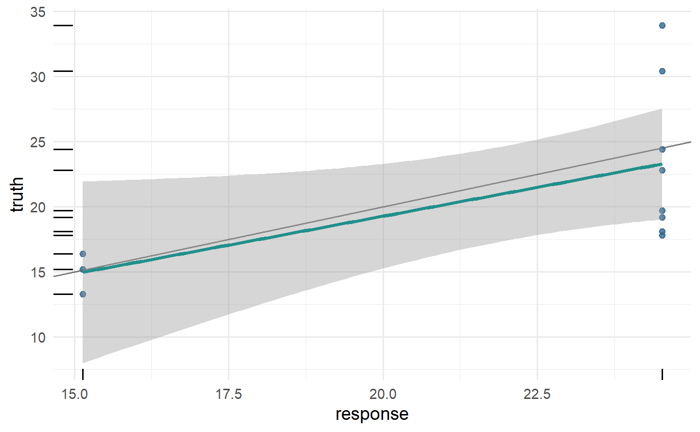
mtcars_new = data.table(cyl = c(5, 6), disp = c(100, 120),
hp = c(100, 150), drat = c(4, 3.9), wt = c(3.8, 4.1),
qsec = c(18, 19.5), vs = c(1, 0), am = c(1, 1),
gear = c(6, 4), carb = c(3, 5))
prediction = lrn_rpart$predict_newdata(mtcars_new)
prediction
#> <PredictionRegr> for 2 observations:
#> row_ids truth response
#> 1 NA 24.52
#> 2 NA 24.522.2.3 Hyperparameters
lrn_rpart$param_set
#> <ParamSet>
#> id class lower upper nlevels default value
#> 1: cp ParamDbl 0 1 Inf 0.01
#> 2: keep_model ParamLgl NA NA 2 FALSE
#> 3: maxcompete ParamInt 0 Inf Inf 4
#> 4: maxdepth ParamInt 1 30 30 30
#> 5: maxsurrogate ParamInt 0 Inf Inf 5
#> 6: minbucket ParamInt 1 Inf Inf <NoDefault[3]>
#> 7: minsplit ParamInt 1 Inf Inf 20
#> 8: surrogatestyle ParamInt 0 1 2 0
#> 9: usesurrogate ParamInt 0 2 3 2
#> 10: xval ParamInt 0 Inf Inf 10 0
# change hyperparameter
lrn_rpart = lrn("regr.rpart", maxdepth = 1)
lrn_rpart$param_set$values
#> $xval
#> [1] 0
#>
#> $maxdepth
#> [1] 1
# learned regression tree
lrn_rpart$train(tsk("mtcars"))$model
#> n= 32
#>
#> node), split, n, deviance, yval
#> * denotes terminal node
#>
#> 1) root 32 1126.0470 20.09062
#> 2) cyl>=5 21 198.4724 16.64762 *
#> 3) cyl< 5 11 203.3855 26.66364 *
# another way to update hyperparameters
lrn_rpart$param_set$values$maxdepth = 2
lrn_rpart$param_set$values
#> $xval
#> [1] 0
#>
#> $maxdepth
#> [1] 2
# now with depth 2
lrn_rpart$train(tsk("mtcars"))$model
#> n= 32
#>
#> node), split, n, deviance, yval
#> * denotes terminal node
#>
#> 1) root 32 1126.04700 20.09062
#> 2) cyl>=5 21 198.47240 16.64762
#> 4) hp>=192.5 7 28.82857 13.41429 *
#> 5) hp< 192.5 14 59.87214 18.26429 *
#> 3) cyl< 5 11 203.38550 26.66364 *
# or with set_values()
lrn_rpart$param_set$set_values(xval = 2, cp = .5)
lrn_rpart$param_set$values
#> $xval
#> [1] 2
#>
#> $maxdepth
#> [1] 2
#>
#> $cp
#> [1] 0.52.2.4 Baseline Learners
Baselines are useful in model comparison and as fallback learners. For regression, we have implemented the baseline lrn("regr.featureless"), which always predicts new values to be the mean (or median, if the robust hyperparameter is set to TRUE) of the target in the training data:
基线在模型比较和作为备用学习器中非常有用。对于回归问题，我们已经实现了名为 lrn("regr.featureless") 的基线，它总是预测新值为训练数据中目标的均值（如果鲁棒性参数设置为 TRUE，则为中位数）：
task = as_task_regr(data.frame(x = runif(1000), y = rnorm(1000, 2, 1)),
target = "y")
lrn("regr.featureless")$train(task, 1:995)$predict(task, 996:1000)
#> <PredictionRegr> for 5 observations:
#> row_ids truth response
#> 996 1.484589 2.034983
#> 997 3.012537 2.034983
#> 998 1.964060 2.034983
#> 999 1.332658 2.034983
#> 1000 2.923380 2.034983It is good practice to test all new models against a baseline, and also to include baselines in experiments with multiple other models. In general, a model that does not outperform a baseline is a ‘bad’ model, on the other hand, a model is not necessarily ‘good’ if it outperforms the baseline.
在实践中，对所有新模型进行与基线的测试是一个良好的做法，同时在与多个其他模型进行实验时也要包括基线。通常情况下，如果一个模型无法超越基线，那么它可以被视为是一个不好的模型；另一方面，如果一个模型超越了基线，也不一定就是一个好模型。
2.3 Evaluation
2.3.1 Measures
as.data.table(msr())[1:3]
#> key label task_type packages
#> 1: aic Akaike Information Criterion <NA> mlr3
#> 2: bic Bayesian Information Criterion <NA> mlr3
#> 3: classif.acc Classification Accuracy classif mlr3,mlr3measures
#> predict_type task_properties
#> 1: <NA>
#> 2: <NA>
#> 3: response
measure = msr("regr.mae")
measure
#> <MeasureRegrSimple:regr.mae>: Mean Absolute Error
#> * Packages: mlr3, mlr3measures
#> * Range: [0, Inf]
#> * Minimize: TRUE
#> * Average: macro
#> * Parameters: list()
#> * Properties: -
#> * Predict type: response2.3.2 Scoring Predictions
Note that all task types have default measures that are used if the argument to $score() is omitted, for regression this is the mean squared error (msr("regr.mse")).
2.3.3 Technical Measures
mlr3 also provides measures that do not quantify the quality of the predictions of a model, but instead provide ‘meta’-information about the model. These include:
msr("time_train"): The time taken to train a model.msr("time_predict"): The time taken for the model to make predictions.msr("time_both"): The total time taken to train the model and then make predictions.msr("selected_features"): The number of features selected by a model, which can only be used if the model has the “selected_features” property.
These can be used after model training and predicting because we automatically store model run times whenever $train() and $predict() are called, so the measures above are equivalent to:
The selected_features measure calculates how many features were used in the fitted model.
msr_sf = msr("selected_features")
msr_sf
#> <MeasureSelectedFeatures:selected_features>: Absolute or Relative Frequency of Selected Features
#> * Packages: mlr3
#> * Range: [0, Inf]
#> * Minimize: TRUE
#> * Average: macro
#> * Parameters: normalize=FALSE
#> * Properties: requires_task, requires_learner, requires_model
#> * Predict type: NA
# accessed hyperparameters with `$param_set`
msr_sf$param_set
#> <ParamSet>
#> id class lower upper nlevels default value
#> 1: normalize ParamLgl NA NA 2 FALSE FALSE
msr_sf$param_set$values$normalize = TRUE
prediction$score(msr_sf, task = tsk_mtcars, learner = lrn_rpart)
#> selected_features
#> 0.1Note that we passed the task and learner as the measure has the requires_task and requires_learner properties.
2.4 Our First Regression Experiment
We have now seen how to train a model, make predictions and score them. What we have not yet attempted is to ascertain if our predictions are any ‘good’. So before look at how the building blocks of mlr3 extend to classification, we will take a brief pause to put together everything above in a short experiment to assess the quality of our predictions. We will do this by comparing the performance of a featureless regression learner to a decision tree with changed hyperparameters.
我们已经了解了如何训练模型、进行预测并对其进行评分。但是，我们尚未尝试确定我们的预测是否“好”。因此，在深入研究
mlr3的构建模块如何扩展到分类之前，我们将简要停顿一下，通过一个简短的实验来评估我们预测的质量。我们将通过比较无特征的回归学习器与更改超参数的决策树的性能来进行评估。
set.seed(349)
tsk_mtcars = tsk("mtcars")
splits = partition(tsk_mtcars)
lrn_featureless = lrn("regr.featureless")
lrn_rpart = lrn("regr.rpart", cp = .2, maxdepth = 5)
measures = msrs(c("regr.mse", "regr.mae"))
# train learners
lrn_featureless$train(tsk_mtcars, splits$train)
lrn_rpart$train(tsk_mtcars, splits$train)
# make and score predictions
lrn_featureless$predict(tsk_mtcars, splits$test)$score(measures)
#> regr.mse regr.mae
#> 26.726772 4.512987
lrn_rpart$predict(tsk_mtcars, splits$test)$score(measures)
#> regr.mse regr.mae
#> 6.932709 2.2064942.5 Classification
2.5.1 Our First Classification Experiment
set.seed(349)
tsk_penguins = tsk("penguins")
splits = partition(tsk_penguins)
lrn_featureless = lrn("classif.featureless")
lrn_rpart = lrn("classif.rpart", cp = .2, maxdepth = 5)
measure = msr("classif.acc")
# train learners
lrn_featureless$train(tsk_penguins, splits$train)
lrn_rpart$train(tsk_penguins, splits$train)
# make and score predictions
lrn_featureless$predict(tsk_penguins, splits$test)$score(measure)
#> classif.acc
#> 0.4424779
lrn_rpart$predict(tsk_penguins, splits$test)$score(measure)
#> classif.acc
#> 0.94690272.5.2 TaskClassif
as.data.table(tsks())[task_type == "classif"]
#> key label task_type nrow
#> 1: breast_cancer Wisconsin Breast Cancer classif 683
#> 2: german_credit German Credit classif 1000
#> 3: ilpd Indian Liver Patient Data classif 583
#> 4: iris Iris Flowers classif 150
#> 5: optdigits Optical Recognition of Handwritten Digits classif 5620
#> 6: penguins Palmer Penguins classif 344
#> 7: penguins_simple Simplified Palmer Penguins classif 333
#> 8: pima Pima Indian Diabetes classif 768
#> 9: sonar Sonar: Mines vs. Rocks classif 208
#> 10: spam HP Spam Detection classif 4601
#> 11: titanic Titanic classif 1309
#> 12: wine Wine Regions classif 178
#> 13: zoo Zoo Animals classif 101
#> ncol properties lgl int dbl chr fct ord pxc
#> 1: 10 twoclass 0 0 0 0 0 9 0
#> 2: 21 twoclass 0 3 0 0 14 3 0
#> 3: 11 twoclass 0 4 5 0 1 0 0
#> 4: 5 multiclass 0 0 4 0 0 0 0
#> 5: 65 twoclass 0 64 0 0 0 0 0
#> 6: 8 multiclass 0 3 2 0 2 0 0
#> 7: 11 multiclass 0 3 7 0 0 0 0
#> 8: 9 twoclass 0 0 8 0 0 0 0
#> 9: 61 twoclass 0 0 60 0 0 0 0
#> 10: 58 twoclass 0 0 57 0 0 0 0
#> 11: 11 twoclass 0 2 2 3 2 1 0
#> 12: 14 multiclass 0 2 11 0 0 0 0
#> 13: 17 multiclass 15 1 0 0 0 0 0The sonar task is an example of a binary classification problem, as the target can only take two different values, in mlr3 terminology it has the “twoclass” property:
tsk_sonar = tsk("sonar")
tsk_sonar
#> <TaskClassif:sonar> (208 x 61): Sonar: Mines vs. Rocks
#> * Target: Class
#> * Properties: twoclass
#> * Features (60):
#> - dbl (60): V1, V10, V11, V12, V13, V14, V15, V16, V17, V18, V19, V2,
#> V20, V21, V22, V23, V24, V25, V26, V27, V28, V29, V3, V30, V31,
#> V32, V33, V34, V35, V36, V37, V38, V39, V4, V40, V41, V42, V43,
#> V44, V45, V46, V47, V48, V49, V5, V50, V51, V52, V53, V54, V55,
#> V56, V57, V58, V59, V6, V60, V7, V8, V9
tsk_sonar$class_names
#> [1] "M" "R"In contrast, tsk("penguins") is a multiclass problem as there are more than two species of penguins; it has the “multiclass” property:
tsk_penguins = tsk("penguins")
tsk_penguins$properties
#> [1] "multiclass"
tsk_penguins$class_names
#> [1] "Adelie" "Chinstrap" "Gentoo"A further difference between these tasks is that binary classification tasks have an extra field called $positive, which defines the ‘positive’ class. In binary classification, as there are only two possible class types, by convention one of these is known as the ‘positive’ class, and the other as the ‘negative’ class. It is arbitrary which is which, though often the more ‘important’ (and often smaller) class is set as the positive class. You can set the positive class during or after construction. If no positive class is specified then mlr3 assumes the first level in the target column is the positive class, which can lead to misleading results.
这两种任务之间的另一个区别是，二分类任务有一个额外的字段称为
$positive，它定义了“正类”（positive class）。在二分类问题中，由于只有两种可能的类别类型，按照惯例，其中一种被称为“正类”，另一种被称为“负类”。哪个是哪个是任意的，尽管通常更“重要”（通常更小）的类别被设置为正类。您可以在构建期间或之后设置正类。如果未指定正类，则mlr3假定目标列中的第一个级别是正类，这可能导致误导性的结果。
Sonar = tsk_sonar$data()
tsk_classif = as_task_classif(Sonar, target = "Class", positive = "R")
tsk_classif$positive
#> [1] "R"
# changing after construction
tsk_classif$positive = "M"
tsk_classif$positive
#> [1] "M"2.5.3 LearnerClassif and MeasureClassif
Classification learners, which inherit from LearnerClassif, have nearly the same interface as regression learners. However, a key difference is that the possible predictions in classification are either "response" – predicting an observation’s class (a penguin’s species in our example, this is sometimes called “hard labeling”) – or "prob" – predicting a vector of probabilities, also called “posterior probabilities”, of an observation belonging to each class. In classification, the latter can be more useful as it provides information about the confidence of the predictions:
分类学习器（继承自
LearnerClassif）几乎具有与回归学习器相同的接口。然而，分类中的一个关键区别是，分类问题中可能的预测结果要么是"response"（预测观测的类别，例如我们示例中的企鹅物种，有时称为“硬标签”），要么是"prob"（预测属于每个类别的概率向量，也称为“后验概率”）。在分类中，后者可能更有用，因为它提供了有关预测的置信度信息：
lrn_rpart = lrn("classif.rpart", predict_type = "prob")
lrn_rpart$train(tsk_penguins, splits$train)
prediction = lrn_rpart$predict(tsk_penguins, splits$test)
prediction
#> <PredictionClassif> for 113 observations:
#> row_ids truth response prob.Adelie prob.Chinstrap prob.Gentoo
#> 2 Adelie Adelie 0.97029703 0.02970297 0.00000000
#> 4 Adelie Adelie 0.97029703 0.02970297 0.00000000
#> 7 Adelie Adelie 0.97029703 0.02970297 0.00000000
#> ---
#> 338 Chinstrap Chinstrap 0.04651163 0.93023256 0.02325581
#> 341 Chinstrap Adelie 0.97029703 0.02970297 0.00000000
#> 344 Chinstrap Chinstrap 0.04651163 0.93023256 0.02325581Also, the interface for classification measures, which are of class MeasureClassif, is identical to regression measures. The key difference in usage is that you will need to ensure your selected measure evaluates the prediction type of interest. To evaluate “response” predictions, you will need measures with predict_type = "response", or to evaluate probability predictions you will need predict_type = "prob". The easiest way to find these measures is by filtering the mlr_measures dictionary:
此外，分类度量标准的接口，其类别为
MeasureClassif，与回归度量标准完全相同。在使用上的主要区别在于，您需要确保所选的度量标准评估感兴趣的预测类型。要评估“response”预测，您需要使用predict_type = "response"的度量标准，或者要评估概率预测，您需要使用predict_type = "prob"的度量标准。查找这些度量标准的最简单方法是通过筛选mlr_measures字典：
as.data.table(msr())[
task_type == "classif" & predict_type == "prob" &
!sapply(task_properties, \(x) "twoclass" %in% x)
]
#> key label task_type
#> 1: classif.logloss Log Loss classif
#> 2: classif.mauc_au1p Weighted average 1 vs. 1 multiclass AUC classif
#> 3: classif.mauc_au1u Average 1 vs. 1 multiclass AUC classif
#> 4: classif.mauc_aunp Weighted average 1 vs. rest multiclass AUC classif
#> 5: classif.mauc_aunu Average 1 vs. rest multiclass AUC classif
#> 6: classif.mbrier Multiclass Brier Score classif
#> packages predict_type task_properties
#> 1: mlr3,mlr3measures prob
#> 2: mlr3,mlr3measures prob
#> 3: mlr3,mlr3measures prob
#> 4: mlr3,mlr3measures prob
#> 5: mlr3,mlr3measures prob
#> 6: mlr3,mlr3measures prob2.5.4 PredictionClassif, Confusion Matrix, and Thresholding
PredictionClassif objects have two important differences from their regression analog. Firstly, the added field $confusion, and secondly the added method $set_threshold().
PredictionClassif对象与其回归模型的预测对象有两个重要的区别。首先是新增的字段$confusion，其次是新增的方法$set_threshold()。
2.5.4.1 Confusion Matrix
prediction$confusion
#> truth
#> response Adelie Chinstrap Gentoo
#> Adelie 49 3 0
#> Chinstrap 1 18 1
#> Gentoo 0 1 40The rows in a confusion matrix are the predicted class and the columns are the true class. All off-diagonal entries are incorrectly classified observations, and all diagonal entries are correctly classified. In this case, the classifier does fairly well classifying all penguins, but we could have found that it only classifies the Adelie species well but often conflates Chinstrap and Gentoo, for example.
混淆矩阵中的行表示预测的类别，列表示真实的类别。所有非对角线条目都是被错误分类的观测值，而所有对角线条目都是被正确分类的。在这种情况下，分类器在对所有企鹅进行分类时表现得相当不错，但我们也可能发现它只能很好地对 Adelie 物种进行分类，但经常将 Chinstrap 和 Gentoo 混为一谈。
autoplot(prediction)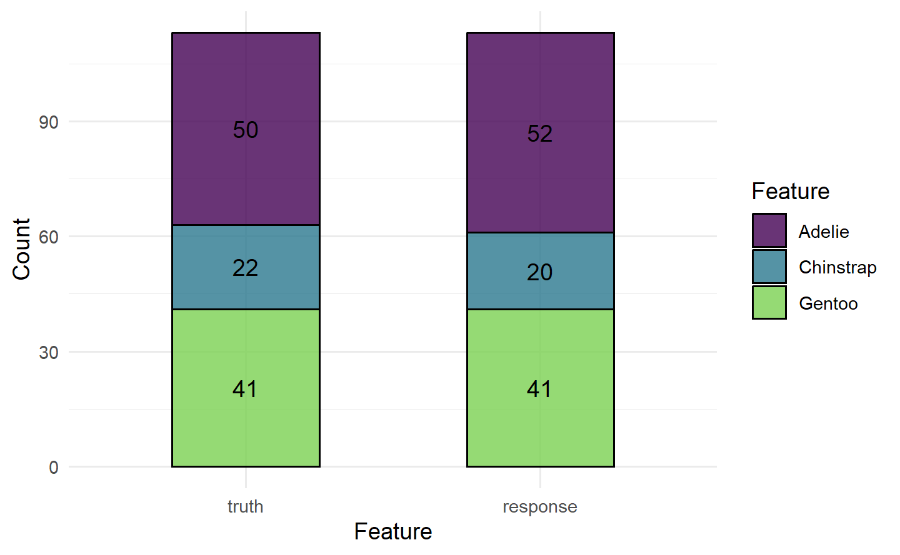
In the binary classification case, the top left entry corresponds to true positives, the top right to false positives, the bottom left to false negatives and the bottom right to true negatives. Taking tsk_sonar as an example with M as the positive class:
在二分类情况下，左上角的条目对应于真正例（true positives），右上角对应于假正例（false positives），左下角对应于假负例（false negatives），右下角对应于真负例（true negatives）。以
tsk_sonar为例，M为正类：
splits = partition(tsk_sonar)
lrn_rpart$
train(tsk_sonar, splits$train)$
predict(tsk_sonar, splits$test)$
confusion
#> truth
#> response M R
#> M 27 10
#> R 10 222.5.4.2 Thresholding
阈值化
This 50% value is known as the threshold and it can be useful to change this threshold if there is class imbalance (when one class is over- or under-represented in a dataset), or if there are different costs associated with classes, or simply if there is a preference to ‘over’-predict one class. As an example, let us take tsk("german_credit") in which 700 customers have good credit and 300 have bad. Now we could easily build a model with around “70%” accuracy simply by always predicting a customer will have good credit:
这个 50% 的值被称为阈值，如果数据集中存在类别不平衡（即一个类别在数据集中过多或过少出现），或者不同的类别具有不同的成本，或者只是有一种“过度”预测一种类别的倾向，那么更改这个阈值可能会很有用。举个例子，让我们看看
tsk("german_credit")，其中有 700 个客户信用良好，300 个客户信用不良。现在，我们可以很容易地构建一个模型，总是预测客户会有良好的信用，从而获得 “70%” 左右的准确性：
task_credit = tsk("german_credit")
lrn_featureless = lrn("classif.featureless", predict_type = "prob")
splits = partition(task_credit)
lrn_featureless$train(task_credit, splits$train)
prediction = lrn_featureless$predict(task_credit, splits$test)
prediction$score(msr("classif.acc"))
#> classif.acc
#> 0.7TODO：等待后续添加交叉引用 13.1
While this model may appear to have good performance on the surface, in fact, it just ignores all ‘bad’ customers – this can create big problems in this finance example, as well as in healthcare tasks and other settings where false positives cost more than false negatives (see Section 13.1 for cost-sensitive classification).
Thresholding allows classes to be selected with a different probability threshold, so instead of predicting that a customer has bad credit if P(good) < 50%, we might predict bad credit if P(good) < 70% – notice how we write this in terms of the positive class, which in this task is ‘good’. Let us see this in practice:
虽然这个模型表面上看起来性能不错，但实际上它只是忽略了所有“不良”的客户 - 这在金融示例以及在医疗任务和其他一些情况下可能会带来很大问题，特别是在假阳性的成本高于假阴性的情况下（请参见第13.1节的成本敏感分类）。
阈值化允许使用不同的概率阈值选择类别，因此，与其在P(好) < 50%时预测客户信用不良，我们可以在P(好) < 70%时预测客户信用不良。请注意，我们是根据正类别来表示这一点，而在这个任务中正类别是“好”。让我们看看实际应用中的情况：
prediction$set_threshold(0.7)
prediction$score(msr("classif.acc"))
#> classif.acc
#> 0.5393939
prediction$set_threshold(0.7)
prediction$score(msr("classif.acc"))
#> classif.acc
#> 0.6878788
prediction$confusion
#> truth
#> response good bad
#> good 181 53
#> bad 50 463 Evaluation and Benchmarking
Resampling Does Not Avoid Model Overfitting: A common misunderstanding is that holdout and other more advanced resampling strategies can prevent model overfitting. In fact, these methods just make overfitting visible as we can separately evaluate train/test performance. Resampling strategies also allow us to make (nearly) unbiased estimations of the generalization error.
重采样不能避免模型过拟合：一个常见的误解是，留出策略和其他更高级的重采样策略可以防止模型过拟合。实际上，这些方法只是使过拟合问题更加显而易见，因为我们可以单独评估训练/测试性能。重采样策略还允许我们对泛化误差进行（几乎）无偏估计。
3.1 Holdout and Scoring
In practice, one would usually create an intermediate model, which is trained on a subset of the available data and then tested on the remainder of the data. The performance of this intermediate model, obtained by comparing the model predictions to the ground truth, is an estimate of the generalization performance of the final model, which is the model fitted on all data.
在实践中，通常会创建一个中间模型，该模型在可用数据的子集上进行训练，然后在剩余的数据上进行测试。通过将模型的预测与真实情况进行比较，中间模型的性能可以作为最终模型的泛化性能的估计。最终模型是在所有可用数据上训练的模型。
3.2 Resampling
3.2.1 Constructing a Resampling Strategy
as.data.table(rsmp())
#> key label params iters
#> 1: bootstrap Bootstrap ratio,repeats 30
#> 2: custom Custom Splits NA
#> 3: custom_cv Custom Split Cross-Validation NA
#> 4: cv Cross-Validation folds 10
#> 5: holdout Holdout ratio 1
#> 6: insample Insample Resampling 1
#> 7: loo Leave-One-Out NA
#> 8: repeated_cv Repeated Cross-Validation folds,repeats 100
#> 9: subsampling Subsampling ratio,repeats 30
rsmp("holdout", ratio = .8)
#> <ResamplingHoldout>: Holdout
#> * Iterations: 1
#> * Instantiated: FALSE
#> * Parameters: ratio=0.8When a "Resampling" object is constructed, it is simply a definition for how the data splitting process will be performed on the task when running the resampling strategy. However, it is possible to manually instantiate a resampling strategy, i.e., generate all train-test splits, by calling the $instantiate() method on a given task.
当构建一个
"Resampling"对象时，它只是对在运行重采样策略时如何执行数据拆分过程的定义。然而，可以通过在给定任务上调用$instantiate()方法来手动实例化一个重采样策略，即生成所有的训练-测试拆分。
cv3$instantiate(tsk_penguins)
# first 5 observations in first traininng set
cv3$train_set(1)[1:5]
#> [1] 2 4 5 6 8
# fitst 5 observations in thirt test set
cv3$test_set(3)[1:5]
#> [1] 1 9 12 17 20When the aim is to fairly compare multiple learners, best practice dictates that all learners being compared use the same training data to build a model and that they use the same test data to evaluate the model performance. Resampling strategies are instantiated automatically for you when using the resample() method. Therefore, manually instantiating resampling strategies is rarely required but might be useful for debugging or digging deeper into a model’s performance.
当目标是公平比较多个学习器时，最佳实践要求所有进行比较的学习器都使用相同的训练数据来构建模型，并且它们使用相同的测试数据来评估模型性能。在使用
resample()方法时，重采样策略会自动为您实例化。因此，手动实例化重采样策略很少是必需的，但在调试或深入研究模型性能时可能会有用。
3.2.2 Resampling Experiments
The resample() function takes a given Task, Learner, and Resampling object to run the given resampling strategy. resample() repeatedly fits a model on training sets, makes predictions on the corresponding test sets and stores them in a ResampleResult object, which contains all the information needed to estimate the generalization performance.
resample() 函数接受给定的任务（Task）、学习器（Learner）和重采样（Resampling）对象，以运行给定的重采样策略。resample() 函数会在训练集上反复拟合模型，在相应的测试集上进行预测，并将预测结果存储在 ResampleResult 对象中，该对象包含了估算泛化性能所需的所有信息。
rr = resample(tsk_penguins, lrn_rpart, cv3)
rr
#> <ResampleResult> with 3 resampling iterations
#> task_id learner_id resampling_id iteration warnings errors
#> penguins classif.rpart cv 1 0 0
#> penguins classif.rpart cv 2 0 0
#> penguins classif.rpart cv 3 0 0
# calculate the score for each iteration
acc = rr$score(msr("classif.ce"))
acc[, .(iteration, classif.ce)]
#> iteration classif.ce
#> 1: 1 0.04347826
#> 2: 2 0.09565217
#> 3: 3 0.06140351
# aggregated score across all resampling iterations
rr$aggregate(msr("classif.ce"))
#> classif.ce
#> 0.06684465By default, the majority of measures will aggregate scores using a macro average, which first calculates the measure in each resampling iteration separately, and then averages these scores across all iterations. However, it is also possible to aggregate scores using a micro average, which pools predictions across resampling iterations into one Prediction object and then computes the measure on this directly:
默认情况下，大多数性能度量会使用宏平均（macro average）来汇总分数，它首先在每个重采样迭代中分别计算度量，然后在所有迭代中对这些分数进行平均。但也可以使用微平均（micro average）来汇总分数，它将重采样迭代中的预测汇总到一个
Prediction对象中，然后直接在该对象上计算度量：
rr$aggregate(msr("classif.ce", average = "micro"))
#> classif.ce
#> 0.06686047To visualize the resampling results, you can use the autoplot.ResampleResult() function to plot scores across folds as boxplots or histograms (Figure 3.1). Histograms can be useful to visually gauge the variance of the performance results across resampling iterations, whereas boxplots are often used when multiple learners are compared side-by-side (see Section 3.3).
要可视化重采样结果，您可以使用
autoplot.ResampleResult()函数绘制跨折叠的分数箱线图或直方图（Figure 3.1）。直方图可以用于直观评估跨重采样迭代的性能结果方差，而箱线图通常用于比较多个学习器并排放置在一起时（请参阅 Section 3.3）。
3.2.3 ResampleResult Objects
# list of prediction objects
rrp = rr$predictions()
# print first two
rrp[1:2]
#> [[1]]
#> <PredictionClassif> for 35 observations:
#> row_ids truth response
#> 7 Adelie Adelie
#> 20 Adelie Chinstrap
#> 32 Adelie Adelie
#> ---
#> 326 Chinstrap Chinstrap
#> 330 Chinstrap Chinstrap
#> 337 Chinstrap Chinstrap
#>
#> [[2]]
#> <PredictionClassif> for 35 observations:
#> row_ids truth response
#> 1 Adelie Adelie
#> 5 Adelie Adelie
#> 9 Adelie Adelie
#> ---
#> 334 Chinstrap Chinstrap
#> 339 Chinstrap Chinstrap
#> 340 Chinstrap ChinstrapBy default, the intermediate models produced at each resampling iteration are discarded after the prediction step to reduce memory consumption of the ResampleResult object (only the predictions are required to calculate most performance measures). However, it can sometimes be useful to inspect, compare, or extract information from these intermediate models. We can configure the resample() function to keep the fitted intermediate models by setting store_models = TRUE. Each model trained in a specific resampling iteration can then be accessed via $learners[[i]]$model, where i refers to the i-th resampling iteration:
默认情况下，在进行预测步骤后，每个重新采样迭代产生的中间模型都会被丢弃，以降低
ResampleResult对象的内存消耗（大多数性能指标仅需要预测）。然而，有时候检查、比较或从这些中间模型中提取信息可能是有用的。我们可以通过设置store_models = TRUE来配置resample()函数以保留拟合的中间模型。然后，可以通过$learners[[i]]$model来访问在特定重新采样迭代中训练的每个模型，其中i指的是第i个重新采样迭代：
rr = resample(tsk_penguins, lrn_rpart, cv3, store_models = TRUE)
# get the model from the first iteration
rr$learners[[1]]$model
#> n= 229
#>
#> node), split, n, loss, yval, (yprob)
#> * denotes terminal node
#>
#> 1) root 229 130 Adelie (0.432314410 0.205240175 0.362445415)
#> 2) flipper_length< 206.5 142 45 Adelie (0.683098592 0.309859155 0.007042254)
#> 4) bill_length< 44.65 97 3 Adelie (0.969072165 0.030927835 0.000000000) *
#> 5) bill_length>=44.65 45 4 Chinstrap (0.066666667 0.911111111 0.022222222) *
#> 3) flipper_length>=206.5 87 5 Gentoo (0.022988506 0.034482759 0.942528736) *In this example, we could then inspect the most important variables in each iteration to help us learn more about the respective fitted models:
# print 2nd and 3rd iteration
lapply(rr$learners[2:3], \(x) x$model$variable.importance)
#> [[1]]
#> flipper_length bill_length bill_depth body_mass island
#> 88.52870 88.07438 71.51814 67.04826 55.13690
#>
#> [[2]]
#> bill_length flipper_length bill_depth body_mass island
#> 82.18794 75.92820 66.94285 57.14539 50.290493.3 Benchmarking
3.3.1 benchmark()
Benchmark experiments in mlr3 are conducted with benchmark(), which simply runs resample() on each task and learner separately, then collects the results. The provided resampling strategy is automatically instantiated on each task to ensure that all learners are compared against the same training and test data.
To use the benchmark() function we first call benchmark_grid(), which constructs an exhaustive design to describe all combinations of the learners, tasks and resamplings to be used in a benchmark experiment, and instantiates the resampling strategies.
mlr3中的基准实验是使用benchmark()函数进行的，该函数简单地在每个任务和学习器上分别运行resample()，然后收集结果。提供的重新采样策略会自动在每个任务上进行实例化，以确保所有学习器都与相同的训练和测试数据进行比较。要使用
benchmark()函数，我们首先调用benchmark_grid()函数，该函数构建一个详尽的设计来描述在基准实验中要使用的所有学习器、任务和重新采样的组合，并实例化重新采样策略。
tasks = tsks(c("german_credit", "sonar"))
learners = lrns(c("classif.rpart", "classif.ranger", "classif.featureless"),
predict_type = "prob")
rsmp_cv5 = rsmp("cv", folds = 5)
design = benchmark_grid(tasks, learners, rsmp_cv5)
design
#> task learner resampling
#> 1: german_credit classif.rpart cv
#> 2: german_credit classif.ranger cv
#> 3: german_credit classif.featureless cv
#> 4: sonar classif.rpart cv
#> 5: sonar classif.ranger cv
#> 6: sonar classif.featureless cvBy default, benchmark_grid() instantiates the resamplings on the tasks, which means that concrete train-test splits are generated. Since this process is stochastic, it is necessary to set a seed before calling benchmark_grid() to ensure reproducibility of the data splits.
在默认情况下，
benchmark_grid()会在任务上实例化重新采样，这意味着会生成具体的训练-测试拆分。由于这个过程是随机的，所以在调用benchmark_grid()之前需要设置一个种子，以确保数据拆分的可重现性。
# pass design to benchmark()
bmr = benchmark(design)
bmr
#> <BenchmarkResult> of 30 rows with 6 resampling runs
#> nr task_id learner_id resampling_id iters warnings errors
#> 1 german_credit classif.rpart cv 5 0 0
#> 2 german_credit classif.ranger cv 5 0 0
#> 3 german_credit classif.featureless cv 5 0 0
#> 4 sonar classif.rpart cv 5 0 0
#> 5 sonar classif.ranger cv 5 0 0
#> 6 sonar classif.featureless cv 5 0 0As benchmark() is just an extension of resample(), we can once again use $score(), or $aggregate() depending on your use-case, though note that in this case $score() will return results over each fold of each learner/task/resampling combination.
由于
benchmark()只是resample()的扩展，因此我们可以再次使用$score()或$aggregate()，具体取决于您的用例，但请注意，在这种情况下，$score()将返回每个学习器/任务/重新采样组合的每个折叠的结果。
bmr$score()[c(1, 7, 13), .(iteration, task_id, learner_id, classif.ce)]
#> iteration task_id learner_id classif.ce
#> 1: 1 german_credit classif.rpart 0.335
#> 2: 2 german_credit classif.ranger 0.240
#> 3: 3 german_credit classif.featureless 0.300
bmr$aggregate()[, .(task_id, learner_id, classif.ce)]
#> task_id learner_id classif.ce
#> 1: german_credit classif.rpart 0.2870000
#> 2: german_credit classif.ranger 0.2230000
#> 3: german_credit classif.featureless 0.3000000
#> 4: sonar classif.rpart 0.3026713
#> 5: sonar classif.ranger 0.1921022
#> 6: sonar classif.featureless 0.4659698TODO：等待后续添加交叉引用 11.3
This would conclude a basic benchmark experiment where you can draw tentative conclusions about model performance, in this case we would possibly conclude that the random forest is the best of all three models on each task. We draw conclusions cautiously here as we have not run any statistical tests or included standard errors of measures, so we cannot definitively say if one model outperforms the other.
As the results of $score() and $aggregate() are returned in a data.table, you can post-process and analyze the results in any way you want. A common mistake is to average the learner performance across all tasks when the tasks vary significantly. This is a mistake as averaging the performance will miss out important insights into how learners compare on ‘easier’ or more ‘difficult’ predictive problems. A more robust alternative to compare the overall algorithm performance across multiple tasks is to compute the ranks of each learner on each task separately and then calculate the average ranks. This can provide a better comparison as task-specific ‘quirks’ are taken into account by comparing learners within tasks before comparing them across tasks. However, using ranks will lose information about the numerical differences between the calculated performance scores. Analysis of benchmark experiments, including statistical tests, is covered in more detail in Section 11.3.
这将总结了一个基本的基准实验，您可以初步得出关于模型性能的结论，在这种情况下，我们可能会得出结论，随机森林在每个任务上都是三个模型中最好的。我们在这里谨慎地得出结论，因为我们没有进行任何统计测试，也没有包括性能度量的标准错误，因此我们不能明确地说一个模型是否优于另一个。
由于
$score()和$aggregate()的结果以data.table返回，您可以以任何您想要的方式进行后处理和分析结果。一个常见的错误是在任务差异明显的情况下，对所有任务的学习器性能进行平均。这是一个错误，因为对性能进行平均将错过对学习器在“更容易”或“更困难”的预测问题上的比较重要的洞察。比较多个任务上的整体算法性能的更强大的替代方法是分别计算每个任务上每个学习器的排名，然后计算平均排名。这可以提供更好的比较，因为通过在比较任务之前在任务内部比较学习器，可以考虑到特定于任务的“怪癖”。然而，使用排名会丢失关于计算的性能分数之间的数值差异的信息。关于基准实验的分析，包括统计测试，在第11.3节中将更详细地介绍。
3.3.2 BenchmarkResult Objects
A BenchmarkResult object is a collection of multiple ResampleResult objects.
bmrdt = as.data.table(bmr)
bmrdt[1:2, .(task, learner, resampling, iteration)]
#> task learner resampling iteration
#> 1: <TaskClassif[51]> <LearnerClassifRpart[38]> <ResamplingCV[20]> 1
#> 2: <TaskClassif[51]> <LearnerClassifRpart[38]> <ResamplingCV[20]> 2
rr1 = bmr$resample_result(1)
rr2 = bmr$resample_result(2)
rr1
#> <ResampleResult> with 5 resampling iterations
#> task_id learner_id resampling_id iteration warnings errors
#> german_credit classif.rpart cv 1 0 0
#> german_credit classif.rpart cv 2 0 0
#> german_credit classif.rpart cv 3 0 0
#> german_credit classif.rpart cv 4 0 0
#> german_credit classif.rpart cv 5 0 0In addition, as_benchmark_result() can be used to convert objects from ResampleResult to BenchmarkResult. The c()-method can be used to combine multiple BenchmarkResult objects, which can be useful when conducting experiments across multiple machines:
此外，可以使用
as_benchmark_result()将ResampleResult对象转换为BenchmarkResult。c()方法可用于组合多个BenchmarkResult对象，这在跨多台计算机进行实验时非常有用：
bmr1 = as_benchmark_result(rr1)
bmr2 = as_benchmark_result(rr2)
c(bmr1, bmr2)
#> <BenchmarkResult> of 10 rows with 2 resampling runs
#> nr task_id learner_id resampling_id iters warnings errors
#> 1 german_credit classif.rpart cv 5 0 0
#> 2 german_credit classif.ranger cv 5 0 0Boxplots are most commonly used to visualize benchmark experiments as they can intuitively summarize results across tasks and learners simultaneously.
箱线图最常用于可视化基准实验，因为它们可以直观地同时总结任务和学习器之间的结果。
3.4 Evaluation of Binary Classifiers
3.4.1 Confusion Matrix
It is possible for a classifier to have a good classification accuracy but to overlook the nuances provided by a full confusion matrix, as in the following tsk("german_credit") example:
tsk_german = tsk("german_credit")
lrn_ranger = lrn("classif.ranger", predict_type = "prob")
splits = partition(tsk_german, ratio = .8)
lrn_ranger$train(tsk_german, splits$train)
prediction = lrn_ranger$predict(tsk_german, splits$test)
prediction$score(msr("classif.acc"))
#> classif.acc
#> 0.74
prediction$confusion
#> truth
#> response good bad
#> good 124 36
#> bad 16 24On their own, the absolute numbers in a confusion matrix can be less useful when there is class imbalance. Instead, several normalized measures can be derived (Figure 3.3):
True Positive Rate (TPR), Sensitivity or Recall: How many of the true positives did we predict as positive?
True Negative Rate (TNR) or Specificity: How many of the true negatives did we predict as negative?
False Positive Rate (FPR), or \(1 -\) Specificity: How many of the true negatives did we predict as positive?
Positive Predictive Value (PPV) or Precision: If we predict positive how likely is it a true positive?
Negative Predictive Value (NPV): If we predict negative how likely is it a true negative?
Accuracy (ACC): The proportion of correctly classified instances out of the total number of instances.
F1-score: The harmonic mean of precision and recall, which balances the trade-off between precision and recall. It is calculated as \(2 \times \frac{Precision \times Recall}{Precision + Recall}\).
The mlr3measures package allows you to compute several common confusion matrix-based measures using the confusion_matrix() function:
mlr3measures::confusion_matrix(
truth = prediction$truth,
response = prediction$response,
positive = tsk_german$positive
)
#> truth
#> response good bad
#> good 124 36
#> bad 16 24
#> acc : 0.7400; ce : 0.2600; dor : 5.1667; f1 : 0.8267
#> fdr : 0.2250; fnr : 0.1143; fomr: 0.4000; fpr : 0.6000
#> mcc : 0.3273; npv : 0.6000; ppv : 0.7750; tnr : 0.4000
#> tpr : 0.88573.4.2 ROC Analysis
The ROC curve is a line graph with TPR on the y-axis and the FPR on the x-axis.
Consider classifiers that predict probabilities instead of discrete classes. Using different thresholds to cut off predicted probabilities and assign them to the positive and negative class will lead to different TPRs and FPRs and by plotting these values across different thresholds we can characterize the behavior of a binary classifier – this is the ROC curve.
考虑预测概率而不是离散类别的分类器。使用不同的阈值来截断预测的概率并将其分配到正类别和负类别将导致不同的 TPR 和 FPR，并通过在不同的阈值上绘制这些值，我们可以表征二元分类器的行为 - 这就是 ROC 曲线。
autoplot(prediction, type = "roc")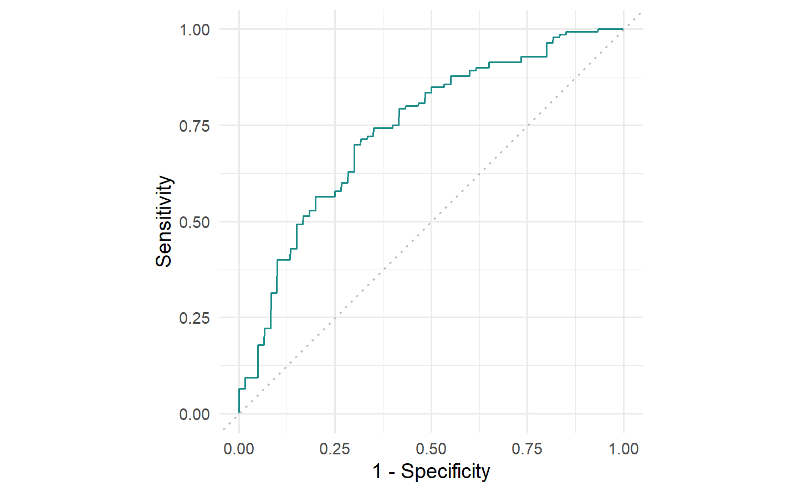
german_credit dataset and the classif.ranger random forest learner. Recall FPR = \(1 -\) Specificity and TPR = Sensitivity.A natural performance measure that can be derived from the ROC curve is the area under the curve (AUC), implemented in msr("classif.auc"). The AUC can be interpreted as the probability that a randomly chosen positive instance has a higher predicted probability of belonging to the positive class than a randomly chosen negative instance. Therefore, higher values (closer to ) indicate better performance. Random classifiers (such as the featureless baseline) will always have an AUC of (approximately, when evaluated empirically) 0.5.
从 ROC 曲线中可以导出的一个自然性能度量是曲线下面积（AUC），在
msr("classif.auc")中实现。AUC 可以解释为随机选择的正实例具有较高的预测概率，属于正类别，而不是随机选择的负实例的概率。因此，较高的值（越接近 1）表示更好的性能。随机分类器（例如没有特征的基线）的AUC总是为（在经验上评估时约为 0.5）。
prediction$score(msr("classif.auc"))
#> classif.auc
#> 0.7407143We can also plot the precision-recall curve (PRC) which visualizes the PPV/precision vs. TPR/recall. The main difference between ROC curves and PR curves is that the number of true-negatives are ignored in the latter. This can be useful in imbalanced populations where the positive class is rare, and where a classifier with high TPR may still not be very informative and have low PPV. See Davis and Goadrich (2006) for a detailed discussion about the relationship between the PRC and ROC curves.
我们还可以绘制精确度-召回曲线（PRC），该曲线可视化了 PPV/精确度 与 TPR/召回 之间的关系。ROC曲线和PR曲线之间的主要区别在于后者忽略了真负例的数量。在不平衡的人群中，正类别很少见的情况下，具有高TPR的分类器可能仍然不太具有信息性，并且具有较低的PPV。有关PRC和ROC曲线之间关系的详细讨论，请参阅 Davis 和 Goadrich（2006）。
autoplot(prediction, type = "prc")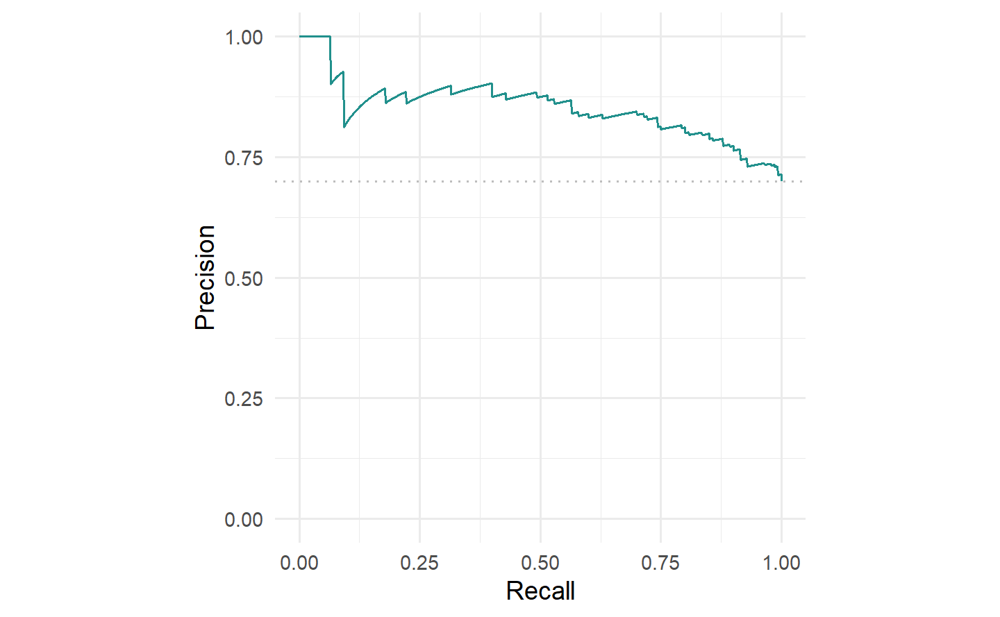
tsk("german_credit") and lrn("classif.ranger").Finally, we can visualize ROC/PR curves for a BenchmarkResult to compare multiple learners on the same Task:
autoplot(bmr, type = "roc") +
autoplot(bmr, type = "prc") +
plot_layout(guides = "collect")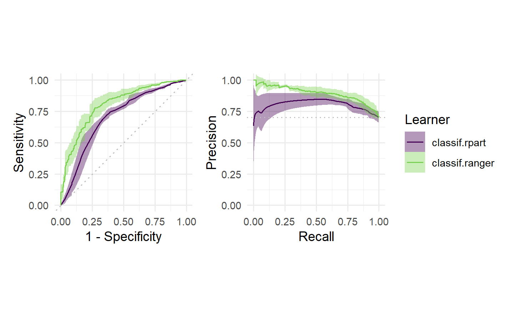
Tuning and Feature Selection
4 Hyperparameter Optimization
Hyperparameter optimization (HPO) closely relates to model evaluation (Chapter 3) as the objective is to find a hyperparameter configuration that optimizes the generalization performance. Broadly speaking, we could think of finding the optimal model configuration in the same way as selecting a model from a benchmark experiment, where in this case each model in the experiment is the same algorithm but with different hyperparameter configurations. For example, we could benchmark three support vector machines (SVMs) with three different cost values.
HPO与模型评估（Chapter 3）密切相关，因为目标是找到一个优化泛化性能的超参数配置。从广义上讲，我们可以将找到最佳模型配置视为从基准实验中选择模型的方式，其中在这种情况下，实验中的每个模型都是相同的算法，但具有不同的超参数配置。例如，我们可以使用三个不同
cost值来进行支持向量机（SVM）的基准测试。
4.1 Model Tuning
mlr3tuning is the hyperparameter optimization package of the mlr3 ecosystem. At the heart of the package are the R6 classes
TuningInstanceSingleCrit, a tuning ‘instance’ that describes the optimization problem and store the results; andTunerwhich is used to configure and run optimization algorithms.
4.1.1 Learner and Search Space
as.data.table(lrn("classif.svm")$param_set)[,
.(id, class, lower, upper, nlevels)]
#> id class lower upper nlevels
#> 1: cachesize ParamDbl -Inf Inf Inf
#> 2: class.weights ParamUty NA NA Inf
#> 3: coef0 ParamDbl -Inf Inf Inf
#> 4: cost ParamDbl 0 Inf Inf
#> 5: cross ParamInt 0 Inf Inf
#> 6: decision.values ParamLgl NA NA 2
#> 7: degree ParamInt 1 Inf Inf
#> 8: epsilon ParamDbl 0 Inf Inf
#> 9: fitted ParamLgl NA NA 2
#> 10: gamma ParamDbl 0 Inf Inf
#> 11: kernel ParamFct NA NA 4
#> 12: nu ParamDbl -Inf Inf Inf
#> 13: scale ParamUty NA NA Inf
#> 14: shrinking ParamLgl NA NA 2
#> 15: tolerance ParamDbl 0 Inf Inf
#> 16: type ParamFct NA NA 2
learner = lrn("classif.svm",
type = "C-classification",
kernel = "radial",
cost = to_tune(1e-1, 1e5),
gamma = to_tune(1e-1, 1))
learner
#> <LearnerClassifSVM:classif.svm>
#> * Model: -
#> * Parameters: type=C-classification, kernel=radial,
#> cost=<RangeTuneToken>, gamma=<RangeTuneToken>
#> * Packages: mlr3, mlr3learners, e1071
#> * Predict Types: [response], prob
#> * Feature Types: logical, integer, numeric
#> * Properties: multiclass, twoclass4.1.2 Terminator
mlr3tuning includes many methods to specify when to terminate an algorithm (Table 4.1), which are implemented in Terminator classes. Terminators are stored in the mlr_terminators dictionary and are constructed with the sugar function trm().
| Terminator | Function call and default parameters |
|---|---|
| Clock Time | trm("clock_time") |
| Combo | trm("combo", any = TRUE) |
| None | trm("none") |
| Number of Evaluations | trm("evals", n_evals = 100, k = 0) |
| Performance Level | trm("perf_reached", level = 0.1) |
| Run Time | trm("run_time", secs = 30) |
| Stagnation | trm("stagnation", iters = 10, threshold = 0) |
The most commonly used terminators are those that stop the tuning after a certain time (trm("run_time")) or a given number of evaluations (trm("evals")). Choosing a runtime is often based on practical considerations and intuition. Using a time limit can be important on compute clusters where a maximum runtime for a compute job may need to be specified. trm("perf_reached") stops the tuning when a specified performance level is reached, which can be helpful if a certain performance is seen as sufficient for the practical use of the model, however, if this is set too optimistically the tuning may never terminate. trm("stagnation") stops when no progress greater than the threshold has been made for a set number of iterations. The threshold can be difficult to select as the optimization could stop too soon for complex search spaces despite room for (possibly significant) improvement. trm("none") is used for tuners that control termination themselves and so this terminator does nothing. Finally, any of these terminators can be freely combined by using trm("combo"), which can be used to specify if HPO finishes when any (any = TRUE) terminator is triggered or when all (any = FALSE) are triggered.
最常用的终止条件通常是那些在一定时间（
trm("run_time")）或给定的评估次数（trm("evals")）之后停止调优的条件。选择运行时间通常基于实际考虑和直觉。在计算集群上使用时间限制可能很重要，因为可能需要为计算作业指定最大运行时间。trm("perf_reached")在达到指定性能水平时停止调优，这可以在某种性能被视为足够实际使用的情况下很有帮助，但如果设置得过于乐观，调优可能永远不会结束。trm("stagnation")在一定迭代次数内没有超过阈值的进展时停止，阈值的选择可能很困难，因为尽管可能有改进的空间（可能很大），但对于复杂的搜索空间，优化可能会过早停止。trm("none")用于控制自己终止的调谐器，因此该终止条件什么也不做。最后，任何这些终止条件都可以通过使用trm("combo")自由组合，可以用来指定HPO是否在任何（any = TRUE）终止条件触发时结束，或者在所有（any = FALSE）终止条件触发时结束。
4.1.3 Tuning Instance with ti
The tuning instance collects the tuner-agnostic information required to optimize a model, i.e., all information about the tuning process, except for the tuning algorithm itself. This includes the task to tune over, the learner to tune, the resampling method and measure used to analytically compare hyperparameter optimization configurations, and the terminator to determine when the measure has been optimized ‘enough’. This implicitly defines a “black box” objective function, mapping hyperparameter configurations to (stochastic) performance values, to be optimized. This concept will be revisited in Chapter 5.
调优实例收集了优化模型所需的与调谐器无关的信息，即所有与调优过程有关的信息，除了调谐算法本身。这包括要调优的任务、要调优的学习器、用于分析比较超参数优化配置的重抽样方法和度量，以及确定度量何时已经被优化到足够程度的终止条件。这隐式地定义了一个“黑盒”目标函数，将超参数配置映射到（随机的）性能值，以便进行优化。这个概念将在 Chapter 5 中重新讨论。
tsk_sonar = tsk("sonar")
instance = ti(
task = tsk_sonar,
learner = learner,
resampling = rsmp("cv", folds = 3),
measures = msr("classif.ce"),
terminator = trm("none")
)
instance
#> <TuningInstanceSingleCrit>
#> * State: Not optimized
#> * Objective: <ObjectiveTuning:classif.svm_on_sonar>
#> * Search Space:
#> id class lower upper nlevels
#> 1: cost ParamDbl 0.1 1e+05 Inf
#> 2: gamma ParamDbl 0.1 1e+00 Inf
#> * Terminator: <TerminatorNone>4.1.4 Tuner
With all the pieces of our tuning problem assembled, we can now decide how to tune our model. There are multiple Tuner classes in mlr3tuning, which implement different HPO (or more generally speaking black box optimization) algorithms (Table 4.2).
| Tuner | Function call | Package |
|---|---|---|
| Random Search | tnr("random_search") |
mlr3tuning |
| Grid Search | tnr("grid_search") |
mlr3tuning |
| Bayesian Optimization | tnr("mbo") |
mlr3mbo |
| CMA-ES | tnr("cmaes") |
adagio |
| Iterated Racing | tnr("irace") |
irace |
| Hyperband | tnr("hyperband") |
mlr3hyperband |
| Generalized Simulated Annealing | tnr("gensa") |
GenSA |
| Nonlinear Optimization | tnr("nloptr") |
nloptr |
4.1.4.1 Search Strategies
Grid search and random search (Bergstra and Bengio 2012) are the most basic algorithms and are often selected first in initial experiments. The idea of grid search is to exhaustively evaluate every possible combination of given hyperparameter values. Categorical hyperparameters are usually evaluated over all possible values they can take. Numeric and integer hyperparameter values are then spaced equidistantly in their box constraints (upper and lower bounds) according to a given resolution, which is the number of distinct values to try per hyperparameter. Random search involves randomly selecting values for each hyperparameter independently from a pre-specified distribution, usually uniform. Both methods are non-adaptive, which means each proposed configuration ignores the performance of previous configurations. Due to their simplicity, both grid search and random search can handle mixed search spaces (i.e., hyperparameters can be numeric, integer, or categorical) as well as hierarchical search spaces (Section 4.4).
网格搜索和随机搜索（Bergstra和Bengio 2012）是最基本的算法，通常在初始实验中首选。网格搜索的思想是详尽地评估给定超参数值的每种可能组合。通常会对分类超参数评估它们可以取的所有可能值。然后，数值和整数超参数值将根据给定的分辨率均匀分布在它们的箱约束（上下界）中，分辨率是每个超参数要尝试的不同值的数量。随机搜索涉及从预先指定的分布（通常是均匀分布）中独立地随机选择每个超参数的值。这两种方法都是非自适应的，这意味着每个提出的配置都忽略了先前配置的性能。由于它们的简单性，网格搜索和随机搜索可以处理混合搜索空间（即，超参数可以是数值、整数或分类的）以及分层搜索空间（Section 4.4）。
4.1.4.2 Adaptive Algorithms
Adaptive algorithms learn from previously evaluated configurations to find good configurations quickly, examples in mlr3 include Bayesian optimization (also called model-based optimization), Covariance Matrix Adaptation Evolution Strategy (CMA-ES), Iterated Racing, and Hyperband.
Bayesian optimization (e.g., Snoek, Larochelle, and Adams 2012) describes a family of iterative optimization algorithms that use a surrogate model to approximate the unknown function that is to be optimized – in HPO this would be the mapping from a hyperparameter configuration to the estimated generalization performance. If a suitable surrogate model is chosen, e.g. a random forest, Bayesian optimization can be quite flexible and even handle mixed and hierarchical search spaces. Bayesian optimization is discussed in full detail in Section 5.4.
CMA-ES (Hansen and Auger 2011) is an evolutionary strategy that maintains a probability distribution over candidate points, with the distribution represented by a mean vector and covariance matrix. A new set of candidate points is generated by sampling from this distribution, with the probability of each candidate being proportional to its performance. The covariance matrix is adapted over time to reflect the performance landscape. Further evolutionary strategies are available in mlr3 via the miesmuschel package, however, these will not be covered in this book.
Racing algorithms work by iteratively discarding configurations that show poor performance, as determined by statistical tests. Iterated Racing (López-Ibáñez et al. 2016) starts by ‘racing’ down an initial population of randomly sampled configurations from a parameterized density and then uses the surviving configurations of the race to stochastically update the density of the subsequent race to focus on promising regions of the search space, and so on.
Multi-fidelity HPO is an adaptive method that leverages the predictive power of computationally cheap lower fidelity evaluations (i.e., poorer quality predictions such as those arising from neural networks with a small number of epochs) to improve the overall optimization efficiency. This concept is used in Hyperband (Li et al. 2018), a popular multi-fidelity hyperparameter optimization algorithm that dynamically allocates increasingly more resources to promising configurations and terminates low-performing ones. Hyperband is discussed in full detail in Section 5.3.
Other implemented algorithms for numeric search spaces are Generalized Simulated Annealing (Xiang et al. 2013; Tsallis and Stariolo 1996) and various nonlinear optimization algorithms.
自适应算法通过学习先前评估的配置来快速找到良好的配置，
mlr3中的示例包括贝叶斯优化（也称为基于模型的优化）、协方差矩阵自适应进化策略（CMA-ES）、迭代比赛和Hyperband。贝叶斯优化（例如，Snoek、Larochelle和Adams 2012）描述了一族迭代优化算法，这些算法使用替代模型来近似待优化的未知函数——在HPO中，这将是从超参数配置到估计的泛化性能的映射。如果选择了合适的替代模型，例如随机森林，贝叶斯优化可以非常灵活，甚至可以处理混合和分层搜索空间。贝叶斯优化将在 Section 5.4 中详细讨论。
CMA-ES（Hansen和Auger 2011）是一种进化策略，它维护了候选点的概率分布，分布由均值向量和协方差矩阵表示。通过从该分布中抽样生成一组新的候选点，每个候选点的选择概率与其性能成正比。协方差矩阵会随着时间的推移而适应反映性能景观。通过
mlr3中的miesmuschel包，还提供了其他进化策略，不过本书不会涵盖这些内容。比赛算法通过迭代地丢弃显示性能较差的配置，这是通过统计测试确定的。迭代比赛（López-Ibáñez等人2016）首先通过从参数化密度中随机抽样生成的一组初始配置进行“比赛”，然后使用比赛的生存配置来随机更新后续比赛的密度，以便集中在搜索空间的有前途的区域，依此类推。
多保真度HPO是一种自适应方法，利用计算成本低的低保真度评估（即质量较差的预测，例如由具有较少周期的神经网络产生的预测）来提高整体优化效率。这个概念在Hyperband（Li等人2018）中得到了应用，这是一种流行的多保真度超参数优化算法，动态分配更多资源给有前途的配置并终止性能较低的配置。Hyperband将在 Section 5.3 中详细讨论。
对于数值搜索空间，其他已实现的算法包括广义模拟退火（Xiang等人2013；Tsallis和Stariolo 1996）和各种非线性优化算法。
4.1.4.3 Choosing Strategies
As a rule of thumb, if the search space is small or does not have a complex structure, grid search may be able to exhaustively evaluate the entire search space in a reasonable time. However, grid search is generally not recommended due to the curse of dimensionality – the grid size ‘blows up’ very quickly as the number of parameters to tune increases – and insufficient coverage of numeric search spaces. By construction, grid search cannot evaluate a large number of unique values per hyperparameter, which is suboptimal when some hyperparameters have minimal impact on performance while others do. In such scenarios, random search is often a better choice as it considers more unique values per hyperparameter compared to grid search.
For higher-dimensional search spaces or search spaces with more complex structure, more guided optimization algorithms such as evolutionary strategies or Bayesian optimization tend to perform better and are more likely to result in peak performance. When choosing between evolutionary strategies and Bayesian optimization, the cost of function evaluation is highly relevant. If hyperparameter configurations can be evaluated quickly, evolutionary strategies often work well. On the other hand, if model evaluations are time-consuming and the optimization budget is limited, Bayesian optimization is usually preferred, as it is quite sample efficient compared to other algorithms, i.e., less function evaluations are needed to find good configurations. Hence, Bayesian optimization is usually recommended for HPO. While the optimization overhead of Bayesian optimization is comparably large (e.g., in each iteration, training of the surrogate model and optimizing the acquisition function), this has less of an impact in the context of relatively costly function evaluations such as resampling of ML models.
Finally, in cases where the hyperparameter optimization problem involves a meaningful fidelity parameter (e.g., number of epochs, number of trees, number of boosting rounds) and where the optimization budget needs to be spent efficiently, multi-fidelity hyperparameter optimization algorithms like Hyperband may be worth considering. For further details on different tuners and practical recommendations, we refer to Bischl et al. (2023).
作为一个经验法则，如果搜索空间较小或没有复杂的结构，网格搜索可能能够在合理的时间内详尽地评估整个搜索空间。然而，通常不建议使用网格搜索，因为维度的诅咒问题——随着要调整的参数数量的增加，网格大小会迅速增加——以及对数值搜索空间的不足覆盖。从构造上来说，网格搜索不能评估每个超参数的大量唯一值，这在某些超参数对性能影响较小而其他超参数对性能有显著影响的情况下是不够优化的。在这种情况下，随机搜索通常是更好的选择，因为它考虑了每个超参数的更多唯一值，相对于网格搜索而言。
对于维度较高的搜索空间或搜索空间具有更复杂结构的情况，更有导向性的优化算法，如进化策略或贝叶斯优化，往往表现更好，并更有可能产生最佳性能。在选择进化策略和贝叶斯优化之间，函数评估成本非常重要。如果可以快速评估超参数配置，通常进化策略效果良好。另一方面，如果模型评估需要耗费时间，且优化预算有限，通常首选贝叶斯优化，因为与其他算法相比，它相对高效，即需要更少的函数评估来找到好的配置。因此，通常建议在HPO中使用贝叶斯优化。虽然贝叶斯优化的优化开销相对较大（例如，在每个迭代中，训练替代模型和优化获取函数），但在相对昂贵的函数评估环境中，例如ML模型的重新抽样，这影响较小。
最后，在超参数优化问题涉及有意义的保真度参数（例如，周期数、树数、提升轮数）且需要高效利用优化预算的情况下，可能值得考虑使用多保真度超参数优化算法，例如Hyperband。关于不同调谐器和实际建议的更多详细信息，请参阅Bischl等人（2023）。
tuner = tnr("grid_search", resolution = 5, batch_size = 10)
tuner
#> <TunerGridSearch>: Grid Search
#> * Parameters: resolution=5, batch_size=10
#> * Parameter classes: ParamLgl, ParamInt, ParamDbl, ParamFct
#> * Properties: dependencies, single-crit, multi-crit
#> * Packages: mlr3tuningTODO：等待后续添加交叉引用 10.1.3
For our SVM example, we will use a grid search with a resolution of five for runtime reasons here (in practice a larger resolution would be preferred). The resolution is the number of distinct values to try per hyperparameter, which means in our example the tuner will construct a 5x5 grid of 25 configurations of equally spaced points between the specified upper and lower bounds. All configurations will be tried by the tuner (in random order) until either all configurations are evaluated or the terminator (Section 4.1.2) signals that the budget is exhausted. For grid and random search tuners, the batch_size parameter controls how many configurations are evaluated at the same time when parallelization is enabled (see Section 10.1.3), and also determines how many configurations should be applied before the terminator should check if the termination criterion has been reached.
对于我们的SVM示例，出于运行时的原因，我们将使用具有五个分辨率的网格搜索（在实践中，更大的分辨率将更可取）。分辨率是每个超参数要尝试的不同值的数量，这意味着在我们的示例中，调谐器将构建一个5x5的网格，其中包含25个在指定上限和下限之间等间距点的配置。调谐器将尝试所有配置（以随机顺序），直到所有配置都被评估或终止器（Section 4.1.2）发出预算已用尽的信号。对于网格搜索和随机搜索调谐器，
batch_size参数控制在启用并行化时同时评估多少个配置（请参阅第10.1.3节），并确定在终止器检查是否达到终止标准之前应用多少个配置。
tuner$param_set
#> <ParamSet>
#> id class lower upper nlevels default value
#> 1: batch_size ParamInt 1 Inf Inf <NoDefault[3]> 10
#> 2: resolution ParamInt 1 Inf Inf <NoDefault[3]> 5
#> 3: param_resolutions ParamUty NA NA Inf <NoDefault[3]>While changing the control parameters of the tuner can improve optimal performance, we have to take care that is likely the default settings will fit most needs. While it is not possible to cover all application cases, mlr3tuning’s defaults were chosen to work well in most cases. However, some control parameters like batch_size often interact with the parallelization setup (further described in Section 10.1.3) and may need to be adjusted accordingly.
尽管更改调谐器的控制参数可以改善最优性能，但我们必须注意，通常情况下默认设置将适用于大多数需求。虽然不可能涵盖所有应用情况，但
mlr3tuning的默认设置被选择为在大多数情况下表现良好。但是，一些控制参数，如batch_size，通常与并行化设置互动（在第10.1.3节中进一步描述），可能需要相应地进行调整。
4.1.4.4 Triggering the tuning process
Now that we have introduced all our components, we can start the tuning process. To do this we simply pass the constructed TuningInstanceSingleCrit to the $optimize() method of the initialized Tuner.
tuner$optimize(instance)
instance$result$learner_param_vals
#> [[1]]
#> [[1]]$type
#> [1] "C-classification"
#>
#> [[1]]$kernel
#> [1] "radial"
#>
#> [[1]]$cost
#> [1] 50000.05
#>
#> [[1]]$gamma
#> [1] 0.14.1.5 Logarithmic Transformations
To add this transformation to a hyperparameter we simply pass logscale = TRUE to to_tune().
learner = lrn("classif.svm",
cost = to_tune(1e-5, 1e5, logscale = TRUE),
gamma = to_tune(1e-5, 1e5, logscale = TRUE),
kernel = "radial",
type = "C-classification")
instance = ti(
task = tsk_sonar,
learner = learner,
resampling = rsmp("cv", folds = 3),
measures = msr("classif.ce"),
terminator = trm("none")
)
tuner$optimize(instance)Note that the fields cost and gamma show the optimal values before transformation, whereas x_domain and learner_param_vals contain optimal values after transformation, it is these latter fields you would take forward for future model use.
请注意，
cost和gamma字段显示了变换之前的最佳值，而x_domain和learner_param_vals包含了变换之后的最佳值，对于未来的模型使用，您应该使用后者的字段。
instance$result$x_domain
#> [[1]]
#> [[1]]$cost
#> [1] 1e+05
#>
#> [[1]]$gamma
#> [1] 0.0031622784.1.6 Analyzing and Using the Result
as.data.table(instance$archive)[1:3, .(cost, gamma, classif.ce)]
#> cost gamma classif.ce
#> 1: -5.756463 0.000000 0.4663216
#> 2: -5.756463 5.756463 0.4663216
#> 3: 0.000000 -11.512925 0.4663216Another powerful feature of the instance is that we can score the internal ResampleResults on a different performance measure, for example looking at false negative rate and false positive rate as well as classification error:
as.data.table(
instance$archive,
measures = msrs(c("classif.fpr", "classif.fnr"))
)[1:5, .(cost, gamma, classif.ce, classif.fpr, classif.fnr)]
#> cost gamma classif.ce classif.fpr classif.fnr
#> 1: -5.756463 0.000000 0.4663216 1.000000 0.0000000
#> 2: -5.756463 5.756463 0.4663216 1.000000 0.0000000
#> 3: 0.000000 -11.512925 0.4663216 1.000000 0.0000000
#> 4: 0.000000 -5.756463 0.2400966 0.277289 0.2077999
#> 5: 0.000000 11.512925 0.4663216 1.000000 0.0000000
autoplot(instance, type = "surface")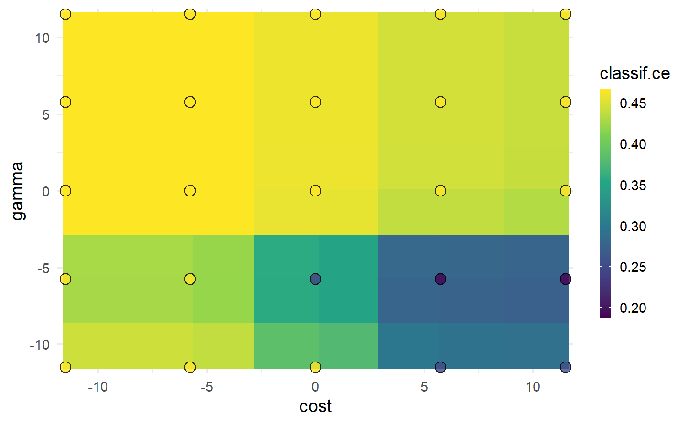
cost and gamma. Bright yellow regions represent the model performing worse and dark blue performing better. We can see that high cost values and low gamma values achieve the best performance. Note that we should not directly infer the performance of new unseen values from the heatmap since it is only an interpolation based on a surrogate model (regr.ranger). However, we can see the general interaction between the hyperparameters.Once we found good hyperparameters for our learner through tuning, we can use them to train a final model on the whole data. To do this we simply construct a new learner with the same underlying algorithm and set the learner hyperparameters to the optimal configuration:
在通过调整找到学习器的良好超参数之后，我们可以使用它们在整个数据集上训练最终模型。为此，我们只需构建一个新的学习器，使用相同的底层算法，并将学习器的超参数设置为最佳配置：
lrn_svm_tuned = lrn("classif.svm")
lrn_svm_tuned$param_set$values = instance$result_learner_param_vals
lrn_svm_tuned$train(tsk_sonar)$model
#>
#> Call:
#> svm.default(x = data, y = task$truth(), type = "C-classification",
#> kernel = "radial", gamma = 0.00316227766016838, cost = 1e+05,
#> probability = (self$predict_type == "prob"))
#>
#>
#> Parameters:
#> SVM-Type: C-classification
#> SVM-Kernel: radial
#> cost: 1e+05
#>
#> Number of Support Vectors: 93
4.2 Convenient Tuning with tune and auto_tuner
In the previous section, we looked at constructing and manually putting together the components of HPO by creating a tuning instance using ti(), passing this to the tuner, and then calling $optimize() to start the tuning process. mlr3tuning includes two helper methods to simplify this process further.
The first helper function is tune(), which creates the tuning instance and calls $optimize() for you. You may prefer the manual method with ti() if you want to view and make changes to the instance before tuning.
在上一节中，我们看到了通过使用
ti()创建调整实例，将其传递给调整器，然后调用$optimize()来启动调整过程，来构建和手动组合HPO的组件。mlr3tuning包括两个辅助方法，以进一步简化这个过程。第一个辅助函数是
tune()，它创建调整实例并为您调用$optimize()。如果您想在调整之前查看并对实例进行更改，可能更喜欢使用ti()的手动方法。
tnr_grid_search = tnr("grid_search", resolution = 5, batch_size = 5)
lrn_svm = lrn(
"classif.svm",
cost = to_tune(1e-5, 1e5, logscale = TRUE),
gamma = to_tune(1e-5, 1e5, logscale = TRUE),
kernel = "radial",
type = "C-classification"
)
rsmp_cv3 = rsmp("cv", folds = 3)
msr_ce = msr("classif.ce")
instance = tune(
tuner = tnr_grid_search,
task = tsk_sonar,
learner = lrn_svm,
resampling = rsmp_cv3,
measures = msr_ce
)
instance$resultThe other helper function is auto_tuner, which creates an object of class AutoTuner. The AutoTuner inherits from the Learner class and wraps all the information needed for tuning, which means you can treat a learner waiting to be optimized just like any other learner. Under the hood, the AutoTuner essentially runs tune() on the data that is passed to the model when $train() is called and then sets the learner parameters to the optimal configuration.
另一个辅助函数是
auto_tuner，它创建一个AutoTuner类的对象。AutoTuner继承自Learner类，并包装了所有需要进行调整的信息，这意味着您可以像处理任何其他学习器一样处理等待优化的学习器。在底层，AutoTuner实际上在调用$train()时对传递给模型的数据上运行了tune()，然后将学习器参数设置为最佳配置。
at = auto_tuner(
tuner = tnr_grid_search,
learner = lrn_svm,
resampling = rsmp_cv3,
measure = msr_ce
)
at
#> <AutoTuner:classif.svm.tuned>
#> * Model: list
#> * Search Space:
#> <ParamSet>
#> id class lower upper nlevels default value
#> 1: cost ParamDbl -11.51293 11.51293 Inf <NoDefault[3]>
#> 2: gamma ParamDbl -11.51293 11.51293 Inf <NoDefault[3]>
#> Trafo is set.
#> * Packages: mlr3, mlr3tuning, mlr3learners, e1071
#> * Predict Type: response
#> * Feature Types: logical, integer, numeric
#> * Properties: multiclass, twoclassAnd we can now call $train(), which will first tune the hyperparameters in the search space listed above before fitting the optimal model.
split = partition(tsk_sonar)
at$train(tsk_sonar, row_ids = split$train)
at$predict(tsk_sonar, row_ids = split$test)$score()The AutoTuner contains a tuning instance that can be analyzed like any other instance.
at$tuning_instance$result
#> cost gamma learner_param_vals x_domain classif.ce
#> 1: 5.756463 -11.51293 <list[4]> <list[2]> 0.2377428We could also pass the AutoTuner to resample() and benchmark(), which would result in a nested resampling, discussed next.
4.3 Nested Resampling
Nested resampling separates model optimization from the process of estimating the performance of the tuned model by adding an additional resampling, i.e., while model performance is estimated using a resampling method in the ‘usual way’, tuning is then performed by resampling the resampled data (Figure 4.2).
嵌套重抽样通过添加额外的重抽样来将模型优化与估计调整模型性能的过程分开，即在“通常方式”中使用重抽样方法来估计模型性能，然后通过对重抽样数据进行重抽样来进行调整（Figure 4.2）。

Figure 4.2 represents the following example of nested resampling:
Outer resampling start – Instantiate three-fold CV to create different testing and training datasets.
Inner resampling – Within the outer training data instantiate four-fold CV to create different inner testing and training datasets.
HPO – Tune the hyperparameters on the outer training set (large, light blue blocks) using the inner data splits.
Training – Fit the learner on the outer training dataset using the optimal hyperparameter configuration obtained from the inner resampling (small blocks).
Evaluation – Evaluate the performance of the learner on the outer testing data (large, dark blue block).
Outer resampling repeats – Repeat (2)-(5) for each of the three outer folds.
Aggregation – Take the sample mean of the three performance values for an unbiased performance estimate.
The inner resampling produces generalization performance estimates for each configuration and selects the optimal configuration to be evaluated on the outer resampling. The outer resampling then produces generalization estimates for these optimal configurations. The result from the outer resampling can be used for comparison to other models trained and tested on the same outer folds.
Figure 4.2 表示嵌套重抽样的以下示例：
外部重抽样开始 - 实例化三折交叉验证以创建不同的测试和训练数据集。
内部重抽样 - 在外部训练数据中实例化四折交叉验证以创建不同的内部测试和训练数据集。
HPO - 使用内部数据拆分在外部训练集（大的浅蓝色块）上调整超参数。
训练 - 使用从内部重抽样获得的最佳超参数配置在外部训练数据集上拟合学习器（小块）。
评估 - 在外部测试数据上评估学习器的性能（大的深蓝色块）。
外部重抽样重复 - 对三个外部折叠中的每一个重复步骤（2）-(5)。
聚合 - 取三个性能值的样本均值以获得无偏性能估计。
内部重抽样为每个配置生成泛化性能估计，并选择要在外部重抽样中评估的最佳配置。然后，外部重抽样为这些最佳配置生成泛化估计。外部重抽样的结果可以用于与在相同外部折叠上训练和测试的其他模型进行比较。
A common mistake is to think of nested resampling as a method to select optimal model configurations. Nested resampling is a method to compare models and to estimate the generalization performance of a tuned model, however, this is the performance based on multiple different configurations (one from each outer fold) and not performance based on a single configuration. If you are interested in identifying optimal configurations, then use tune()/ti() or auto_tuner() with $train() on the complete dataset.
一个常见的错误是将嵌套重抽样视为选择最佳模型配置的方法。嵌套重抽样是一种用于比较模型和估计调整后模型的泛化性能的方法，但这是基于多种不同配置的性能（每个配置来自于外部折叠的一个），而不是基于单个配置的性能。如果您有兴趣确定最佳配置，那么请使用
tune()/ti()或auto_tuner()与$train()在完整数据集上进行操作。
4.3.1 Nested Resampling with an AutoTuner
at = auto_tuner(
tuner = tnr_grid_search,
learner = lrn_svm,
resampling = rsmp("cv", folds = 4),
measure = msr_ce
)
rr = resample(
task = tsk_sonar,
learner = at,
resampling = rsmp_cv3,
store_models = TRUE
)
rr
rr$aggregate()
#> classif.ce
#> 0.1733609
extract_inner_tuning_results(rr)[,
.(iteration, cost, gamma, classif.ce)]
#> iteration cost gamma classif.ce
#> 1: 1 11.51293 -5.756463 0.2533613
#> 2: 2 11.51293 -5.756463 0.1573529
#> 3: 3 11.51293 -5.756463 0.1441176
extract_inner_tuning_archives(rr)[1:3,
.(iteration, cost, gamma, classif.ce)]
#> iteration cost gamma classif.ce
#> 1: 1 -11.512925 0.00000 0.5728992
#> 2: 1 -5.756463 0.00000 0.5728992
#> 3: 1 -5.756463 11.51293 0.57289924.3.2 The Right (and Wrong) Way to Estimate Performance
In this short section we will empirically demonstrate that directly reporting tuning performance without nested resampling results in optimistically biased performance estimates.
在这个简短的部分中，我们将通过实验证明，直接报告调优性能而不使用嵌套重抽样会导致性能估计存在乐观偏差。
lrn_xgboost = lrn(
"classif.xgboost",
eta = to_tune(1e-4, 1, logscale = TRUE),
max_depth = to_tune(1, 20),
colsample_bytree = to_tune(1e-1, 1),
colsample_bylevel = to_tune(1e-1, 1),
lambda = to_tune(1e-3, 1e3, logscale = TRUE),
alpha = to_tune(1e-3, 1e3, logscale = TRUE),
subsample = to_tune(1e-1, 1)
)
tsk_moons = tgen("moons")
tsk_moons_train = tsk_moons$generate(100)
tsk_moons_test = tsk_moons$generate(1e6)Now we will tune the learner with respect to the classification error, using holdout resampling and random search with 700 evaluations. We then report the tuning performance without nested resampling.
Next, we estimate generalization error by nested resampling (below we use an outer five-fold CV), using an AutoTuner:
# same setup as above
at = auto_tuner(
tuner = tnr_random,
learner = lrn_xgboost,
resampling = rsmp_holdout,
measure = msr_ce,
terminator = trm_evals700
)
rsmp_cv5 = rsmp("cv", folds = 5)
outsample = resample(tsk_moons_train, at, rsmp_cv5)$aggregate()And finally, we estimate the generalization error by training the tuned learner (i.e., using the values from the instance above) on the full training data again and predicting on the test data.
lrn_xgboost_tuned = lrn("classif.xgboost")
lrn_xgboost_tuned$param_set$set_values(
.values = instance$result_learner_param_vals)
generalization = lrn_xgboost_tuned$train(tsk_moons_train)$
predict(tsk_moons_test)$
score()Now we can compare these three values:
round(c(
true_generalization = as.numeric(generalization),
without_nested_resampling = as.numeric(insample),
with_nest_resampling = as.numeric(outsample)
), 2)
#> true_generalization without_nested_resampling with_nest_resampling
#> 0.29 0.09 0.21We find that the performance estimate from unnested tuning optimistically overestimates the true performance (which could indicate ‘meta-overfitting’ to the specific inner holdout-splits), while the outer estimate from nested resampling works much better.
我们发现，未经嵌套重抽样的调优性能估计会乐观地高估真实性能（这可能表明对特定内部保留集的‘元过拟合’），而来自嵌套重抽样的外部估计效果要好得多。
4.4 More Advanced Search Spaces
4.4.1 Scalar Parameter Tuning
learner = lrn(
"classif.svm",
cost = to_tune(1e-1, 1e5),
gamma = to_tune(1e-1, 1),
kernel = "radial",
type = "C-classification"
)
learner$param_set$search_space()
#> <ParamSet>
#> id class lower upper nlevels default value
#> 1: cost ParamDbl 0.1 1e+05 Inf <NoDefault[3]>
#> 2: gamma ParamDbl 0.1 1e+00 Inf <NoDefault[3]>In this example, we can see that gamma hyperparameter has class ParamDbl, with lower = 0.1 and upper = 1, which was automatically created by to_tune() as we passed two numeric values to this function. If we wanted to tune over a non-numeric hyperparameter, we can still use to_tune(), which will infer the correct class to construct in the resulting parameter set. For example, say we wanted to tune the numeric cost, factor kernel, and logical scale hyperparameter in our SVM:
learner = lrn(
"classif.svm",
cost = to_tune(1e-1, 1e5),
kernel = to_tune(c("radial", "linear")),
shrinking = to_tune(),
type = "C-classification"
)
learner$param_set$search_space()
#> <ParamSet>
#> id class lower upper nlevels default value
#> 1: cost ParamDbl 0.1 1e+05 Inf <NoDefault[3]>
#> 2: kernel ParamFct NA NA 2 <NoDefault[3]>
#> 3: shrinking ParamLgl NA NA 2 TRUEHere the kernel hyperparameter is a factor, so we simply pass in a vector corresponding to the levels we want to tune over. The shrinking hyperparameter is a logical, there are only two possible values this could take so we do not need to pass anything to to_tune(), it will automatically recognize this is a logical from learner$param_set and passes this detail to learner$param_set$search_space(). Similarly, for factor parameters, we could also use to_tune() without any arguments if we want to tune over all possible values. Finally, we can use to_tune() to treat numeric parameters as factors if we want to discretize them over a small subset of possible values, for example, if we wanted to find the optimal number of trees in a random forest we might only consider three scenarios: 100, 200, or 400 trees:
在这里，
kernel超参数是一个因子，因此我们只需传入一个与我们要调整的级别相对应的向量。shrinking超参数是一个逻辑型的，它只有两个可能的取值，所以我们不需要传递任何参数给to_tune()，它会自动识别这是一个逻辑型，然后将这个细节传递给learner$param_set$search_space()。类似地，对于因子参数，如果我们想要调整所有可能的值，我们也可以使用to_tune()而不带任何参数。最后，如果我们想要将数值参数视为因子，并希望将其离散化为可能值的一小部分，例如，如果我们想要找到随机森林中最佳的树的数量，我们可能只考虑三种情况：100、200 或 400 棵树：
4.4.2 Defining Search Spaces with ps
As a simple example, let us look at how to create a search space to tune cost and gamma again:
This search space would then be passed to the search_space argument in auto_tuner():
ti(
task = tsk_sonar,
learner = lrn("classif.svm", type = "C-classification"),
resampling = rsmp_cv3,
measures = msr_ce,
terminator = trm("none"),
search_space = search_space
)
#> <TuningInstanceSingleCrit>
#> * State: Not optimized
#> * Objective: <ObjectiveTuning:classif.svm_on_sonar>
#> * Search Space:
#> id class lower upper nlevels
#> 1: cost ParamDbl 0.1 1e+05 Inf
#> 2: kernel ParamFct NA NA 2
#> 3: shrinking ParamLgl NA NA 2
#> * Terminator: <TerminatorNone>4.4.3 Transformations and Tuning Over Vectors
Notice that now the lower and upper fields correspond to the transformed bounds, i.e. \([\log(1e-5), \log(1e5)]\). To manually create the same transformation, we can pass the transformation to the trafo argument in p_dbl() and set the bounds:
请注意，现在
lower和upper字段对应于经过变换的界限，即\([\log(1e-5), \log(1e5)]\)。要手动创建相同的变换，我们可以将变换传递给p_dbl()中的trafo参数，并设置界限：
We can confirm it is correctly set by making use of the $trafo() method, which takes a named list and applies the specified transformations
我们可以通过使用
$trafo()方法来确认它是否设置正确，该方法接受一个命名的列表并应用指定的转换。
search_space$trafo(list(cost = 1))
#> $cost
#> [1] 2.718282Where transformations become the most powerful is in the ability to pass arbitrary functions that can act on single parameters or even the entire parameter set. As an example, consider a simple transformation to add ‘2’ to our range:
Simple transformations such as this can even be added directly to a learner by passing a Param object to to_tune():
More complex transformations that require multiple arguments should be passed to the .extra_trafo parameter in ps(). .extra_trafo takes a function with parameters x and param_set where, during tuning, x will be a list containing the configuration being tested, and param_set is the whole parameter set. Below we first exponentiate the value of cost and then add ‘2’ if the kernel is "polynomial".
需要多个参数的更复杂的转换应该通过
ps()中的.extra_trafo参数传递。.extra_trafo接受一个带有参数x和param_set的函数，在调整过程中，x将是一个包含正在测试的配置的列表，而param_set则是整个参数集。在下面的示例中，我们首先将cost的值取幂，然后如果kernel是 “polynomial”，就加上 ‘2’。
search_space = ps(
cost = p_dbl(-1, 1, trafo = \(x) exp(x)),
kernel = p_fct(c("polynomial", "radial")),
.extra_trafo = \(x, param_set) {
if (x$kernel == "polynomial") {
x$cost = x$cost + 2
}
x
}
)
search_space$trafo(list(cost = 1, kernel = "radial"))
#> $cost
#> [1] 2.718282
#>
#> $kernel
#> [1] "radial"
search_space$trafo(list(cost = 1, kernel = "polynomial"))
#> $cost
#> [1] 4.718282
#>
#> $kernel
#> [1] "polynomial"4.4.4 Hyperparameter Dependencies
Hyperparameter dependencies occur when a hyperparameter should only be set if another hyperparameter has a particular value. For example, the degree parameter in SVM is only valid when kernel is "polynomial". In the ps() function, we specify this using the depends argument, which takes a named argument of the form <param> == value or <param> %in% <vector>:
ps(
kernel = p_fct(c("polynomial", "radial")),
degree = p_int(1, 3, depends = (kernel == "polynomial")),
gamma = p_dbl(1e-5, 1e5,
depends = (kernel %in% c("polynomial", "radial")))
)
#> <ParamSet>
#> id class lower upper nlevels default parents value
#> 1: degree ParamInt 1e+00 3e+00 3 <NoDefault[3]> kernel
#> 2: gamma ParamDbl 1e-05 1e+05 Inf <NoDefault[3]> kernel
#> 3: kernel ParamFct NA NA 2 <NoDefault[3]>Above we have said that degree should only be set if kernel is (==) "polynomial", and gamma should only be set if kernel is one of (%in%) "polynomial" or "radial". In practice, some underlying implementations ignore unused parameters and others throw errors, either way, this is problematic during tuning if, for example, we were wasting time trying to tune degree when the kernel was not polynomial. Hence setting the dependency tells the tuning process to tune degree if kernel is "polynomial" and to ignore it otherwise.
Dependencies can also be passed straight into a learner using to_tune():
在上面的示例中，我们说过
degree只有在kernel为(==)"polynomial"时才应设置，而gamma只有在kernel是(%in%)"polynomial"或"radial"之一时才应设置。
实际上，一些底层实现会忽略未使用的参数，而其他一些则会引发错误，无论哪种情况，在调优过程中都会造成问题，例如，当内核不是多项式时，浪费时间尝试调整degree。
因此，设置依赖关系告诉调整过程，如果kernel是"polynomial"，则调整degree，否则忽略它。依赖关系也可以直接传递给学习器，使用
to_tune()：
lrn(
"classif.svm",
kernel = to_tune(c("polynomial", "radial")),
degree = to_tune(p_int(1, 3, depends = (kernel == "polynomial")))
)$param_set$search_space()
#> <ParamSet>
#> id class lower upper nlevels default parents value
#> 1: degree ParamInt 1 3 3 <NoDefault[3]> kernel,kernel
#> 2: kernel ParamFct NA NA 2 <NoDefault[3]>
4.4.5 Recommended Search Spaces with mlrtuningspaces
Selected search spaces can require a lot of background knowledge or expertise. The package mlr3tuningspaces tries to make HPO more accessible by providing implementations of published search spaces for many popular machine learning algorithms, the hope is that these search spaces are applicable to a wide range of datasets. The search spaces are stored in the dictionary mlr_tuning_spaces.
所选的搜索空间可能需要大量的背景知识或专业知识。包
mlr3tuningspaces试图通过提供许多流行的机器学习算法的已发表搜索空间的实现来使HPO更加可访问，希望这些搜索空间适用于各种各样的数据集。这些搜索空间存储在mlr_tuning_spaces字典中。
library(mlr3tuningspaces)
as.data.table(mlr_tuning_spaces)[1:3, .(key, label)]
#> key label
#> 1: classif.glmnet.default Classification GLM with Default
#> 2: classif.glmnet.rbv1 Classification GLM with RandomBot
#> 3: classif.glmnet.rbv2 Classification GLM with RandomBotThe tuning spaces are named according to the scheme {learner-id}.{tuning-space-id}. The default tuning spaces are published in Bischl et al. (2023), other tuning spaces are part of the random bot experiments rbv1 and rbv2 published in Kuehn et al. (2018) and Binder, Pfisterer, and Bischl (2020). The sugar function lts() (learner tuning space) is used to retrieve a TuningSpace.
lts_rpart = lts("classif.rpart.default")
lts_rpart
#> <TuningSpace:classif.rpart.default>: Classification Rpart with Default
#> id lower upper levels logscale
#> 1: minsplit 2e+00 128.0 TRUE
#> 2: minbucket 1e+00 64.0 TRUE
#> 3: cp 1e-04 0.1 TRUEA tuning space can be passed to ti() or auto_tuner() as the search_space.
Alternatively, as loaded search spaces are just a collection of tune tokens, we could also pass these straight to a learner:
或者，由于加载的搜索空间只是一组调整令牌，我们还可以将它们直接传递给学习器：
vals = lts_rpart$values
vals
#> $minsplit
#> Tuning over:
#> range [2, 128] (log scale)
#>
#>
#> $minbucket
#> Tuning over:
#> range [1, 64] (log scale)
#>
#>
#> $cp
#> Tuning over:
#> range [1e-04, 0.1] (log scale)
learner = lrn("classif.rpart")
learner$param_set$set_values(.values = vals)
learner$param_set
#> <ParamSet>
#> id class lower upper nlevels default
#> 1: cp ParamDbl 0 1 Inf 0.01
#> 2: keep_model ParamLgl NA NA 2 FALSE
#> 3: maxcompete ParamInt 0 Inf Inf 4
#> 4: maxdepth ParamInt 1 30 30 30
#> 5: maxsurrogate ParamInt 0 Inf Inf 5
#> 6: minbucket ParamInt 1 Inf Inf <NoDefault[3]>
#> 7: minsplit ParamInt 1 Inf Inf 20
#> 8: surrogatestyle ParamInt 0 1 2 0
#> 9: usesurrogate ParamInt 0 2 3 2
#> 10: xval ParamInt 0 Inf Inf 10
#> value
#> 1: <RangeTuneToken[2]>
#> 2:
#> 3:
#> 4:
#> 5:
#> 6: <RangeTuneToken[2]>
#> 7: <RangeTuneToken[2]>
#> 8:
#> 9:
#> 10: 0We could also apply the default search spaces from Bischl et al. (2023) by passing the learner to lts():
lts(lrn("classif.rpart"))
#> <LearnerClassifRpart:classif.rpart>: Classification Tree
#> * Model: -
#> * Parameters: xval=0, minsplit=<RangeTuneToken>,
#> minbucket=<RangeTuneToken>, cp=<RangeTuneToken>
#> * Packages: mlr3, rpart
#> * Predict Types: [response], prob
#> * Feature Types: logical, integer, numeric, factor, ordered
#> * Properties: importance, missings, multiclass, selected_features,
#> twoclass, weightsFinally, it is possible to overwrite a predefined tuning space in construction, for example, changing the range of the maxdepth hyperparameter in a decision tree:
5 Advanced Tuning Methods and Black Box Optimization
5.1 Error Handling and Memory Management
5.1.1 Encapsulation and Fallback Learner
Even in simple machine learning problems, there is a lot of potential for things to go wrong. For example, when learners do not converge, run out of memory, or terminate with an error due to issues in the underlying data. As a common issue, learners can fail if there are factor levels present in the test data that were not in the training data, models fail in this case as there have been no weights/coefficients trained for these new factor levels:
即使在简单的机器学习问题中，出现问题的可能性也很大。例如，当学习器不收敛、耗尽内存或由于底层数据问题而出现错误终止时。作为一个常见问题，如果测试数据中存在训练数据中没有的因子水平，那么学习器可能会失败，因为针对这些新的因子水平没有进行权重/系数的训练：
tsk_pen = tsk("penguins")
# remove rows with missing values
tsk_pen$filter(tsk_pen$row_ids[complete.cases(tsk_pen$data())])
rsmp_custom = rsmp("custom")
rsmp_custom$instantiate(
tsk_pen,
train_sets = list(tsk_pen$row_ids[tsk_pen$data()$island != "Torgersen"]),
test_sets = list(tsk_pen$row_ids[tsk_pen$data()$island == "Torgersen"])
)
msr_ce = msr("classif.ce")
tnr_random = tnr("random_search")
learner = lrn("classif.lda", method = "t", nu = to_tune(3, 10))
tune(tnr_random, tsk_pen, learner, rsmp_custom, msr_ce, 10)
#> INFO [23:31:47.588] [bbotk] Starting to optimize 1 parameter(s) with '<OptimizerRandomSearch>' and '<TerminatorEvals> [n_evals=10, k=0]'
#> INFO [23:31:47.620] [bbotk] Evaluating 1 configuration(s)
#> INFO [23:31:47.659] [mlr3] Running benchmark with 1 resampling iterations
#> INFO [23:31:47.670] [mlr3] Applying learner 'classif.lda' on task 'penguins' (iter 1/1)
#> Error in lda.default(x, grouping, ...): variable 6 appears to be constant within groupsTODO：等待后续添加交叉引用 10.2.1
In the above example, we can see the tuning process breaks and we lose all information about the hyperparameter optimization process. This is even worse in nested resampling or benchmarking when errors could cause us to lose all progress across multiple configurations or even learners and tasks.
Encapsulation (Section 10.2.1) allows errors to be isolated and handled, without disrupting the tuning process. We can tell a learner to encapsulate an error by setting the $encapsulate field as follows:
在上述示例中，我们可以看到调优过程中断，我们失去了有关超参数优化过程的所有信息。在嵌套重抽样或基准测试中，当错误可能导致我们失去跨多个配置甚至学习器和任务的所有进展时，情况会变得更糟。
封装（第10.2.1节）允许隔离和处理错误，而不会干扰调优过程。我们可以通过设置
$encapsulate字段来告诉学习器封装错误，如下所示：
learner$encapsulate = c(train = "evaluate", predict = "evaluate")Note by passing "evaluate" to both train and predict, we are telling the learner to set up encapsulation in both the training and prediction stages (see Section 10.2 for other encapsulation options).
Another common issue that cannot be easily solved during HPO is learners not converging and the process running indefinitely. We can prevent this from happening by setting the timeout field in a learner, which signals the learner to stop if it has been running for that much time (in seconds), again this can be set for training and prediction individually:
请注意，通过在
train和predict中都传递"evaluate"，我们告诉学习器在训练和预测阶段都设置封装（有关其他封装选项，请参见第10.2节）。另一个在HPO期间难以轻松解决的常见问题是学习器不收敛，进程无限运行。我们可以通过在学习器中设置
timeout字段来防止这种情况发生，该字段表示如果学习器运行了这么长时间（以秒为单位），则应停止运行。同样，这可以分别为训练和预测设置：
learner$timeout = c(train = 30, predict = 30)Now if either an error occurs, or the model timeout threshold is reached, then instead of breaking, the learner will simply not make predictions when errors are found and the result is NA for resampling iterations with errors. When this happens, our hyperparameter optimization experiment will fail as we cannot aggregate results across resampling iterations. Therefore it is essential to select a fallback learner (Section 10.2.2), which is a learner that will be fitted if the learner of interest fails.
A common approach is to use a featureless baseline (lrn("regr.featureless") or lrn("classif.featureless")). Below we set lrn("classif.featureless"), which always predicts the majority class, by passing this learner to the $fallback field.
如果出现错误或达到模型超时阈值，那么学习器将不会中断，而是在发现错误时不进行预测，对于出现错误的重抽样迭代，结果将是
NA。当发生这种情况时，我们的超参数优化实验将失败，因为我们无法在重抽样迭代之间聚合结果。因此，选择一个回退学习器（第10.2.2节）非常重要，这是一种在感兴趣的学习器失败时将要训练的备用学习器。一个常见的方法是使用一个没有特征的基线学习器（
lrn("regr.featureless"或lrn("classif.featureless")）。下面我们设置了lrn("classif.featureless")，它总是预测多数类别，通过将这个学习器传递给$fallback字段来实现。
learner$fallback = lrn("classif.featureless")We can now run our experiment and see errors that occurred during tuning in the archive.
instance = tune(tnr_random, tsk_pen, learner, rsmp_custom, msr_ce, 10)
as.data.table(instance$archive)[1:3, .(df, classif.ce, errors)]
#> df classif.ce errors
#> 1: <function[1]> 1 1
#> 2: <function[1]> 1 1
#> 3: <function[1]> 1 1
# reading the error in the first resample result
instance$archive$resample_result(1)$errors
#> iteration msg
#> 1: 1 variable 6 appears to be constant within groupsThe learner was tuned without breaking because the errors were encapsulated and logged before the fallback learners were used for fitting and predicting:
由于错误被封装并在使用回退学习器进行拟合和预测之前进行了记录，学习器在没有中断的情况下进行了调优：
instance$result
#> nu learner_param_vals x_domain classif.ce
#> 1: 8 <list[2]> <list[1]> 15.1.2 Memory Management
Running a large tuning experiment can use a lot of memory, especially when using nested resampling. Most of the memory is consumed by the models since each resampling iteration creates one new model. Storing the models is therefore disabled by default and in most cases is not required. The option store_models in the functions ti() and auto_tuner() allows us to enable the storage of the models.
The archive stores a ResampleResult for each evaluated hyperparameter configuration. The contained Prediction objects can also take up a lot of memory, especially with large datasets and many resampling iterations. We can disable the storage of the resample results by setting store_benchmark_result = FALSE in the functions ti() and auto_tuner(). Note that without the resample results, it is no longer possible to score the configurations with another measure.
When we run nested resampling with many outer resampling iterations, additional memory can be saved if we set store_tuning_instance = FALSE in the auto_tuner() function. However, the functions extract_inner_tuning_results() and extract_inner_tuning_archives() will then no longer work.
The option store_models = TRUE sets store_benchmark_result and store_tuning_instance to TRUE because the models are stored in the benchmark results which in turn is part of the instance. This also means that store_benchmark_result = TRUE sets store_tuning_instance to TRUE.
Finally, we can set store_models = FALSE in the resample() or benchmark() functions to disable the storage of the auto tuners when running nested resampling. This way we can still access the aggregated performance (rr$aggregate()) but lose information about the inner resampling.
运行大型调优实验可能会使用大量内存，特别是在使用嵌套重抽样时。大多数内存被模型消耗，因为每个重抽样迭代都会创建一个新模型。默认情况下禁用存储模型，而在大多数情况下也不需要存储模型。在函数
ti()和auto_tuner()中，选项store_models允许我们启用模型的存储。归档存储了每个评估的超参数配置的
ResampleResult。包含的Prediction对象在大型数据集和许多重抽样迭代时可能占用大量内存。我们可以通过在函数ti()和auto_tuner()中设置store_benchmark_result = FALSE来禁用重抽样结果的存储。请注意，如果没有重抽样结果，就不再可能使用另一个度量来评分配置。当我们运行具有许多外部重抽样迭代的嵌套重抽样时，如果在
auto_tuner()函数中设置store_tuning_instance = FALSE，还可以节省额外的内存。然而，extract_inner_tuning_results()和extract_inner_tuning_archives()函数将不再起作用。选项
store_models = TRUE会将store_benchmark_result和store_tuning_instance设置为TRUE，因为模型存储在基准结果中，而基准结果又是实例的一部分。这也意味着store_benchmark_result = TRUE会将store_tuning_instance设置为TRUE。最后，在运行嵌套重抽样时，可以在
resample()或benchmark()函数中设置store_models = FALSE以禁用自动调整器的存储。这样我们仍然可以访问聚合性能（rr$aggregate()），但会失去有关内部重抽样的信息。
5.2 Multi-Objective Tuning
So far we have considered optimizing a model with respect to one metric, but multi-criteria, or multi-objective optimization, is also possible. A simple example of multi-objective optimization might be optimizing a classifier to simultaneously maximize true positive predictions and minimize false negative predictions. In another example, consider the single-objective problem of tuning a neural network to minimize classification error. The best-performing model is likely to be quite complex, possibly with many layers that will have drawbacks like being harder to deploy on devices with limited resources. In this case, we might want to simultaneously minimize the classification error and model complexity.
By definition, optimization of multiple metrics means these will be in competition (otherwise we would only optimize one of them) and therefore in general no single configuration exists that optimizes all metrics. Therefore, we instead focus on the concept of Pareto optimality. One hyperparameter configuration is said to Pareto-dominate another if the resulting model is equal or better in all metrics and strictly better in at least one metric.
The goal of multi-objective hyperparameter optimization is to find a set of non-dominated solutions so that their corresponding metric values approximate the Pareto front.
到目前为止，我们考虑了根据一个度量来优化模型，但多标准或多目标优化也是可能的。多目标优化的一个简单示例可能是优化分类器，同时最大化真正例预测和最小化假负例预测。在另一个示例中，考虑单一目标问题，即调整神经网络以最小化分类错误。性能最佳的模型可能相当复杂，可能具有许多层，具有诸如在资源有限的设备上部署更困难等缺点。在这种情况下，我们可能希望同时最小化分类错误和模型复杂性。
根据定义，多个度量的优化意味着它们将竞争（否则我们只会优化其中一个），因此通常不存在单个配置可以优化所有度量。因此，我们转而关注帕累托最优的概念。如果得到的模型在所有度量上相等或更好，且至少在一个度量上严格更好，则一个超参数配置被认为帕累托优于另一个。
多目标超参数优化的目标是找到一组非支配解，以便它们对应的度量值近似于帕累托前沿。
As we are tuning with respect to multiple measures, the function ti() automatically creates a TuningInstanceMultiCrit instead of a TuningInstanceSingleCrit. Below we set store_models = TRUE as this is required by the selected features measure.
instance = ti(
task = tsk("sonar"),
learner = learner,
resampling = rsmp("cv", folds = 3),
measures = measures,
terminator = trm("evals", n_evals = 30),
store_models = TRUE
)
instance
#> <TuningInstanceMultiCrit>
#> * State: Not optimized
#> * Objective: <ObjectiveTuning:classif.rpart_on_sonar>
#> * Search Space:
#> id class lower upper nlevels
#> 1: cp ParamDbl 1e-04 0.1 Inf
#> 2: minsplit ParamInt 2e+00 64.0 63
#> 3: maxdepth ParamInt 1e+00 30.0 30
#> * Terminator: <TerminatorEvals>
tuner = tnr("random_search")
tuner$optimize(instance)Finally, we inspect the best-performing configurations, i.e., the Pareto set. Note that the selected_features measure is averaged across the folds, so the values in the archive may not always be integers.
最后，我们检查性能最佳的配置，即帕累托集。请注意，所选择的特征度量是在交叉验证折叠上进行平均的，因此归档中的值可能不总是整数。
instance$archive$best()[, .(cp, minsplit, maxdepth, classif.ce, selected_features)]
#> cp minsplit maxdepth classif.ce selected_features
#> 1: 0.06225493 30 7 0.2645273 3
#> 2: 0.01311655 59 1 0.2792271 1
#> 3: 0.06088867 40 1 0.2792271 15.3 Multi-Fidelity Tuning via Hyperband
Increasingly large datasets and search spaces and increasingly complex models make hyperparameter optimization a time-consuming and computationally expensive task. To tackle this, some HPO methods make use of evaluating a configuration at multiple fidelity levels. Multi-fidelity HPO is motivated by the idea that the performance of a lower-fidelity model is indicative of the full-fidelity model, which can be used to make HPO more efficient (as we will soon see with Hyperband).
To unpack what these terms mean and to motivate multi-fidelity tuning, say that we think a gradient boosting algorithm with up to 1000 rounds will be a very good fit to our training data. However, we are concerned this model will take too long to tune and train. Therefore, we want to gauge the performance of this model using a similar model that is quicker to train by setting a smaller number of rounds. In this example, the hyperparameter controlling the number of rounds is a fidelity parameter, as it controls the tradeoff between model performance and speed. The different configurations of this parameter are known as fidelity levels. We refer to the model with 1000 rounds as the model at full-fidelity and we want to approximate this model’s performance using models at different fidelity levels. Lower fidelity levels result in low-fidelity models that are quicker to train but may poorly predict the full-fidelity model’s performance. On the other hand, higher fidelity levels result in high-fidelity models that are slower to train but may better indicate the full-fidelity model’s performance.
Other common models that have natural fidelity parameters include neural networks (number of epochs) and random forests (number of trees). The proportion of data to subsample before running any algorithm can also be viewed as a model-agnostic fidelity parameter, we will return to this in Section 8.3.3.
随着数据集和搜索空间的不断增大，以及模型的日益复杂，超参数优化变成了一项耗时且计算成本高昂的任务。为了解决这个问题，一些超参数优化方法利用多个保真度水平（fidelity levels）对配置进行评估。多保真度（Multi-fidelity）超参数优化的动机在于，较低保真度模型的性能可作为完全保真度模型的指示，从而提高超参数优化的效率（正如我们即将看到的 Hyperband 算法）。
为了解释这些术语的含义并推动多保真度调整的动机，假设我们认为一个带有最多1000轮的梯度提升算法将非常适合我们的训练数据。然而，我们担心这个模型调优和训练的时间会太长。因此，我们希望使用一个训练时间更短的类似模型来评估这个模型的性能，方法是设置较少的轮数。在这个例子中，控制轮数的超参数被称为保真度参数，因为它控制了模型性能和速度之间的权衡。该参数的不同配置被称为保真度水平。我们将拥有1000轮的模型称为全保真度模型，我们希望使用不同保真度水平的模型来近似该模型的性能。较低的保真度水平会产生训练速度更快但可能较差的低保真度模型，而较高的保真度水平则会产生训练速度较慢但可能更好地指示全保真度模型性能的高保真度模型。
其他常见的自然带有保真度参数的模型包括神经网络（轮数）和随机森林（树的数量）。在运行任何算法之前对数据进行子采样的比例也可以看作是一种不依赖于特定模型的保真度参数，我们将在第 Section 8.3.3 中详细讨论此点。
The Successive Halving and Hyperband algorithms are implemented in mlr3hyperband as tnr("successive_halving") and tnr("hyperband") respectively; in this section, we will only showcase the Hyperband method.
By example, we will optimize lrn("classif.xgboost") on tsk("sonar") and use the number of boosting iterations (nrounds) as the fidelity parameter, this is a suitable choice as increasing iterations increases model training time but generally also improves performance. Hyperband will allocate increasingly more boosting iterations to well-performing hyperparameter configurations.
We will load the learner and define the search space. We specify a range from 16 (\(r_{min}\) ) to 128 (\(`r_{max}`\)) boosting iterations and tag the parameter with "budget" to identify it as a fidelity parameter. For the other hyperparameters, we take the search space for XGBoost from Bischl et al. (2023), which usually works well for a wide range of datasets.
在
mlr3hyperband中，连续加倍算法和Hyperband算法分别被实现为tuner("successive_halving")和tuner("hyperband")。在本节中，我们将仅展示Hyperband方法的使用。举例来说，我们将在
tsk("sonar")上优化lrn("classif.xgboost")，并使用提升迭代次数（nrounds）作为保真度参数。这是一个合适的选择，因为增加迭代次数会增加模型训练时间，但通常也会提高性能。Hyperband将为性能良好的超参数配置分配越来越多的提升迭代次数。我们将加载学习器并定义搜索空间。我们指定了从16（最小值）到128（最大值）的提升迭代次数范围，并将该参数标记为
"budget"，以识别它为保真度参数。对于其他超参数，我们采用了来自Bischl等人（2023年）的XGBoost搜索空间，通常适用于各种数据集。
learner = lrn("classif.xgboost")
learner$param_set$set_values(
nrounds = to_tune(p_int(16, 128, tags = "budget")),
eta = to_tune(1e-4, 1, logscale = TRUE),
max_depth = to_tune(1, 20),
colsample_bytree = to_tune(1e-1, 1),
colsample_bylevel = to_tune(1e-1, 1),
lambda = to_tune(1e-3, 1e3, logscale = TRUE),
alpha = to_tune(1e-3, 1e3, logscale = TRUE),
subsample = to_tune(1e-1, 1)
)We now construct the tuning instance and a hyperband tuner with eta = 2. We use trm("none") and set the repetitions control parameter to 1 so that Hyperband can terminate itself after all brackets have been evaluated a single time. Note that setting repetition = Inf can be useful if you want a terminator to stop the optimization, for example, based on runtime. The hyperband_schedule() function can be used to display the schedule across the given fidelity levels and budget increase factor.
现在，我们构建调优实例和一个
eta = 2的Hyperband调优器。我们使用tuner("none")并将repetitions控制参数设置为1，以便Hyperband在所有档次都被评估一次后自动终止。请注意，如果你希望终止器根据运行时间等因素停止优化，将repetition = Inf设置为无穷大可能会更有用。hyperband_schedule()函数可以用来显示在给定的保真度水平和预算增加因子下的调度计划。
instance = ti(
task = tsk("sonar"),
learner = learner,
resampling = rsmp("holdout"),
measures = msr("classif.ce"),
terminator = trm("none")
)
tuner = tnr("hyperband", eta = 2, repetitions = 1)
hyperband_schedule(r_min = 16, r_max = 128, eta = 2)
#> bracket stage budget n
#> 1: 3 0 16 8
#> 2: 3 1 32 4
#> 3: 3 2 64 2
#> 4: 3 3 128 1
#> 5: 2 0 32 6
#> 6: 2 1 64 3
#> 7: 2 2 128 1
#> 8: 1 0 64 4
#> 9: 1 1 128 2
#> 10: 0 0 128 4Finally, we can tune as normal and print the result and archive. Note that the archive resulting from a Hyperband run contains the additional columns bracket and stage which break down the results by the corresponding bracket and stage.
tuner$optimize(instance)
instance$result[, .(classif.ce, nrounds)]
#> classif.ce nrounds
#> 1: 0.115942 128
as.data.table(instance$archive)[,
.(bracket, stage, classif.ce, eta, max_depth, colsample_bytree)]
#> bracket stage classif.ce eta max_depth colsample_bytree
#> 1: 3 0 0.2173913 -6.1473299 18 0.2682654
#> 2: 3 0 0.1884058 -3.7454399 16 0.3176791
#> 3: 3 0 0.1739130 -2.5016375 2 0.4581766
#> 4: 3 0 0.5362319 -2.2100532 18 0.5085491
#> 5: 3 0 0.6086957 -6.0429444 15 0.6123156
#> 6: 3 0 0.2173913 -5.5454764 12 0.9558323
#> 7: 3 0 0.1739130 -2.1431612 15 0.2202503
#> 8: 3 0 0.1884058 -8.1914882 9 0.2529409
#> 9: 2 0 0.5217391 -7.8775215 8 0.7266177
#> 10: 2 0 0.4927536 -2.9998440 19 0.8676653
#> 11: 2 0 0.1304348 -4.4386442 7 0.4786818
#> 12: 2 0 0.1739130 -3.8798192 3 0.7369849
#> 13: 2 0 0.1594203 -4.8825970 15 0.4897578
#> 14: 2 0 0.2318841 -7.9417063 7 0.1743294
#> 15: 3 1 0.1884058 -2.5016375 2 0.4581766
#> 16: 3 1 0.1884058 -2.1431612 15 0.2202503
#> 17: 3 1 0.2173913 -3.7454399 16 0.3176791
#> 18: 3 1 0.1884058 -8.1914882 9 0.2529409
#> 19: 1 0 0.2318841 -0.1615695 14 0.4256436
#> 20: 1 0 0.2173913 -3.3216321 20 0.9882602
#> 21: 1 0 0.1739130 -1.4650905 18 0.7402125
#> 22: 1 0 0.5942029 -8.4080737 14 0.7843144
#> 23: 3 2 0.2318841 -2.5016375 2 0.4581766
#> 24: 3 2 0.1304348 -2.1431612 15 0.2202503
#> 25: 2 1 0.1304348 -4.4386442 7 0.4786818
#> 26: 2 1 0.1884058 -4.8825970 15 0.4897578
#> 27: 2 1 0.1884058 -3.8798192 3 0.7369849
#> 28: 0 0 0.1884058 -2.9062650 18 0.2968872
#> 29: 0 0 0.2173913 -6.0356643 18 0.3754443
#> 30: 0 0 0.2028986 -8.9505985 10 0.7234403
#> 31: 0 0 0.1884058 -6.2335288 15 0.8755801
#> 32: 3 3 0.1594203 -2.1431612 15 0.2202503
#> 33: 2 2 0.1159420 -4.4386442 7 0.4786818
#> 34: 1 1 0.2173913 -1.4650905 18 0.7402125
#> 35: 1 1 0.2028986 -3.3216321 20 0.9882602
#> bracket stage classif.ce eta max_depth colsample_bytree5.4 Bayesian Optimization
In hyperparameter optimization (Chapter 4), learners are passed a hyperparameter configuration and evaluated on a given task via a resampling technique to estimate its generalization performance with the goal to find the optimal hyperparameter configuration. In general, no analytical description for the mapping from hyperparameter configuration to performance exists and gradient information is also not available. HPO is, therefore, a prime example for black box optimization, which considers the optimization of a function whose mathematical structure and analytical description is unknown or unexploitable. As a result, the only observable information is the output value (i.e., generalization performance) of the function given an input value (i.e., hyperparameter configuration). In fact, as evaluating the performance of a learner can take a substantial amount of time, HPO is quite an expensive black box optimization problem. Black box optimization problems occur in the real-world, for example they are encountered quite often in engineering such as in modeling experiments like crash tests or chemical reactions.
Many optimization algorithm classes exist that can be used for black box optimization, which differ in how they tackle this problem; for example we saw in Chapter 4 methods including grid/random search and briefly discussed evolutionary strategies. Bayesian optimization refers to a class of sample-efficient iterative global black box optimization algorithms that rely on a ‘surrogate model’ trained on observed data to model the black box function. This surrogate model is typically a non-linear regression model that tries to capture the unknown function using limited observed data. During each iteration, BO algorithms employ an ‘acquisition function’ to determine the next candidate point for evaluation. This function measures the expected ‘utility’ of each point within the search space based on the prediction of the surrogate model. The algorithm then selects the candidate point with the best acquisition function value and evaluates the black box function at that point to then update the surrogate model. This iterative process continues until a termination criterion is met, such as reaching a pre-specified maximum number of evaluations or achieving a desired level of performance. BO is a powerful method that often results in good optimization performance, especially if the cost of the black box evaluation becomes expensive and the optimization budget is tight.
As a running example throughout this section, we will optimize the sinusoidal function \(f: [0, 1] \rightarrow \mathbb{R}, x \mapsto 2x + \sin(14x)\) (Figure 5.1), which is characterized by two local minima and one global minimum.
在超参数优化（Chapter 4）中，学习器会接收一个超参数配置，并通过重新采样技术在给定任务上进行评估，以估算其泛化性能，目标是找到最优的超参数配置。通常情况下，超参数配置到性能的映射没有解析描述，也无法获得梯度信息。因此，HPO是黑盒优化的一个典型例子，它考虑的是一种函数的优化，该函数的数学结构和解析描述是未知的或无法利用的。因此，唯一可观察到的信息是在给定输入值（即，超参数配置）的情况下，函数的输出值（即，泛化性能）。实际上，由于评估学习器的性能可能需要大量时间，HPO是一个非常昂贵的黑盒优化问题。黑盒优化问题在现实世界中经常出现，例如在工程领域，例如在建模实验中，如碰撞测试或化学反应。
存在许多可用于黑盒优化的优化算法类别，它们在解决这个问题时的方式各不相同；例如，在 Chapter 4 中我们介绍了一些方法，包括网格/随机搜索，并简要讨论了进化策略。贝叶斯优化是指一类基于样本高效迭代的全局黑盒优化算法，它依赖于在观察到的数据上训练的“代理模型”来对黑盒函数进行建模。这个代理模型通常是一个非线性回归模型，它试图使用有限的观察数据来捕捉未知函数。在每次迭代中，BO算法使用一个“采集函数”来确定下一个待评估的候选点。该函数基于代理模型的预测，测量搜索空间内每个点的预期“效用”。然后，算法选择具有最佳采集函数值的候选点，并在该点处评估黑盒函数，然后更新代理模型。这个迭代过程会持续进行，直到满足终止准则，例如达到预先指定的最大评估次数或达到所需的性能水平。BO是一种强大的方法，通常在性能评估的成本昂贵且优化预算有限的情况下表现良好。
在本节的整个过程中，我们将优化正弦函数 \(f: [0, 1] \rightarrow \mathbb{R}, x \mapsto 2x + \sin(14x)\) （Figure 5.1），该函数具有两个局部最小值和一个全局最小值，作为一个运行示例。
5.4.1 Black Box Optimization
To start translating our problem to code we will use the ObjectiveRFun class to take a single configuration as input. The Objective requires specification of the function to optimize its domain and codomain. By tagging the codomain with "minimize" or "maximize" we specify the optimization direction. Note how below our optimization function takes a list as an input with one element called x.
为了开始将我们的问题转化为代码，我们将使用
ObjectiveRFun类以单个配置作为输入。Objective函数需要指定优化其定义域和共域的函数。通过将共域标记为"minimize"或"maximize"，我们可以指定优化的方向。请注意，在下面的例子中，我们的优化函数以一个名为x的元素的列表作为输入。
We can visualize our objective by generating a grid of points on which we evaluate the function (Figure 5.1), this will help us identify its local minima and global minimum.
xydt = generate_design_grid(domain, resolution = 1001)$data
xydt[, y := objective$eval_dt(xydt)$y]
optima = data.table(x = c(0, 0.3509406, 0.7918238))
optima[, y := objective$eval_dt(optima)$y]
optima[, type := c("local", "local", "global")]
ggplot(xydt, aes(x, y)) +
geom_line() +
geom_point(data = optima, aes(pch = type),
color = "black", size = 4) +
theme_minimal() +
theme(legend.position = "none")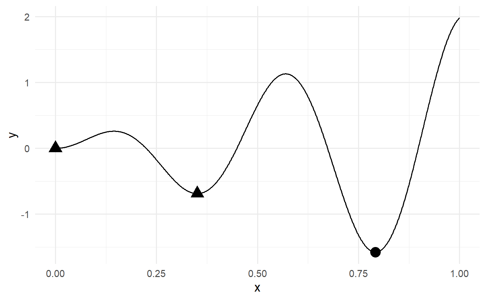
xydt[y == min(y), ]
#> x y
#> 1: 0.792 -1.577239With the objective function defined, we can proceed to optimize it using OptimInstanceSingleCrit. This class allows us to wrap the objective function and explicitly specify a search space. The search space defines the set of input values we want to optimize over, and it is typically a subset or transformation of the domain, though by default the entire domain is taken as the search space. In black box optimization, it is common for the domain, and hence also the search space, to have finite box constraints. Similarly to HPO, transformations can sometimes be used to more efficiently search the space.
In the following, we use a simple random search to optimize the sinusoidal function over the whole domain and inspect the result from the instance in the usual way. Analogously to tuners, Optimizers in bbotk are stored in the mlr_optimizers dictionary and can be constructed with opt().
有了目标函数的定义，我们可以使用
OptimInstanceSingleCrit来进行优化。这个类允许我们封装目标函数并显式地指定一个搜索空间。搜索空间定义了我们想要在其上进行优化的输入值集合，通常它是域的一个子集或变换，尽管默认情况下整个域被视为搜索空间。在黑盒优化中，域，因此也是搜索空间，通常具有有限的区间约束。类似于HPO，有时可以使用变换来更有效地搜索空间。在接下来的例子中，我们使用简单的随机搜索来在整个域上优化正弦函数，并以通常的方式检查实例的结果。与调优器类似，在
bbotk中，优化器存储在mlr_optimizers字典中，可以使用opt()构建。
instance = OptimInstanceSingleCrit$new(
objective,
search_space = domain,
terminator = trm("evals", n_evals = 20)
)
optimizer = opt("random_search", batch_size = 20)
optimizer$optimize(instance)Similarly to how we can use tune() to construct a tuning instance, here we can use bb_optimize(), which returns a list with elements "par" (best found parameters), "val" (optimal outcome), and “instance” (the optimization instance); the values given as "par" and "val" are the same as the values found in instance$result:
optimal = bb_optimize(objective, method = "random_search", max_evals = 20)
optimal$instance$result
#> x x_domain y
#> 1: 0.7876307 <list[1]> -1.574492Now we have introduced the basic black box optimization setup, we can introduce the building blocks of any Bayesian optimization algorithm.
跳过了贝叶斯优化部分。
6 Feature Selection
Feature selection, also known as variable or descriptor selection, is the process of finding a subset of features to use with a given task and learner. Using an optimal set of features can have several benefits:
improved predictive performance, since we reduce overfitting on irrelevant features,
robust models that do not rely on noisy features,
simpler models that are easier to interpret,
faster model fitting, e.g. for model updates,
faster prediction, and
no need to collect potentially expensive features.
However, these objectives will not necessarily be optimized by the same set of features and thus feature selection can be seen as a multi-objective optimization problem. In this chapter, we mostly focus on feature selection as a means of improving predictive performance, but also briefly cover the optimization of multiple criteria (Section 6.2.5).
Reducing the number of features can improve models across many scenarios, but it can be especially helpful in datasets that have a high number of features in comparison to the number of data points. Many learners perform implicit, also called embedded, feature selection, e.g. via the choice of variables used for splitting in a decision tree. Most other feature selection methods are model agnostic, i.e. they can be used together with any learner.
特征选择，也称为变量或描述符选择，是找到适用于给定任务和学习器的特征子集的过程。使用最优特征集合可以带来几个好处：
提高预测性能，因为我们减少了对无关特征的过拟合。
构建不依赖噪声特征的稳健模型。
创建更容易解释的简单模型。
更快的模型拟合，例如用于模型更新。
更快的预测速度。
无需收集可能昂贵的特征。
然而，这些目标不一定会被相同的特征集合最优化，因此特征选择可以被看作是一个多目标优化问题。在本章中，我们主要关注特征选择作为提高预测性能的手段，但也简要介绍了多标准优化的方法（请参见 Section 6.2.5）。
在许多情况下，减少特征数量可以提高模型性能，但在与数据点数量相比特征数量较多的数据集中，特别有帮助。许多学习器通过隐式的、也称为嵌入式的特征选择方法，例如在决策树中用于分割的变量选择中执行特征选择。大多数其他特征选择方法是与模型无关的，即它们可以与任何学习器一起使用。在识别相关特征的许多不同方法中，我们将重点放在两个通用概念上，它们在下面详细描述：过滤方法和包装方法。
6.1 Filters
Filter algorithms select features by assigning numeric scores to each feature, e.g. correlation between features and target variable, use these to rank the features and select a feature subset based on the ranking. Features that are assigned lower scores are then omitted in subsequent modeling steps.
The learner used in a feature importance or embedded filter is independent of learners used in subsequent modeling steps. For example, one might use feature importance of a random forest for feature selection and train a neural network on the reduced feature set.
Most of the filter methods have some limitations, for example, the correlation filter can only be calculated for regression tasks with numeric features. For a full list of all implemented filter methods, we refer the reader to https://mlr3filters.mlr-org.com, which also shows the supported task and features types. A benchmark of filter methods was performed by Bommert et al. (2020), who recommend not to rely on a single filter method but to try several ones if the available computational resources allow. If only a single filter method is to be used, the authors recommend to use a feature importance filter using random forest permutation importance (see Section 6.1.2), similar to the permutation method described above, but also the JMIM and AUC filters performed well in their comparison.
过滤算法通过为每个特征分配数值分数（例如，特征与目标变量之间的相关性）来选择特征，然后使用这些分数对特征进行排序，并基于排名选择一个特征子集。分配较低分数的特征将在后续建模步骤中被省略。
在特征重要性或嵌入式过滤器中使用的学习器与后续建模步骤中使用的学习器是相互独立的。例如，可以使用随机森林的特征重要性进行特征选择，然后在减少后的特征集上训练神经网络。
大多数过滤方法都有一些限制，例如，相关性过滤只能用于具有数值特征的回归任务。有关所有已实现的过滤方法的完整列表，我们建议读者访问https://mlr3filters.mlr-org.com，该网站还显示了支持的任务和特征类型。Bommert等人（2020年）进行了一项过滤方法的基准测试，他们建议不要仅依赖于单个过滤方法，而是在计算资源允许的情况下尝试多种方法。如果只想使用单个过滤方法，作者建议使用基于随机森林排列重要性的特征重要性过滤器（参见 Section 6.1.2 ），类似于上述描述的排列方法，但JMIM和AUC过滤器在他们的比较中也表现良好。
6.1.1 Calculating Filter Value
flt_gain = flt("information_gain")
tsk_pen = tsk("penguins")
flt_gain$calculate(tsk_pen)
as.data.table(flt_gain)
#> feature score
#> 1: flipper_length 0.581167901
#> 2: bill_length 0.544896584
#> 3: bill_depth 0.538718879
#> 4: island 0.520157171
#> 5: body_mass 0.442879511
#> 6: sex 0.007244168
#> 7: year 0.000000000This shows that the flipper and bill measurements are the most informative features for predicting the species of a penguin in this dataset, whereas sex and year are the least informative. Some filters have hyperparameters that can be changed in the same way as Learner hyperparameters. For example, to calculate "spearman" instead of "pearson" correlation with the correlation filter:
这显示了在这个数据集中，翅膀和嘴巴的测量是预测企鹅物种最具信息量的特征，而性别和年份则是最不具信息量的特征。一些过滤器具有可以像
Learner超参数一样更改的超参数。例如，要使用相关性过滤器计算"Spearman"相关性而不是"Pearson"相关性：
flt_cor = flt("correlation", method = "spearman")
flt_cor$param_set
#> <ParamSet>
#> id class lower upper nlevels default value
#> 1: use ParamFct NA NA 5 everything
#> 2: method ParamFct NA NA 3 pearson spearman6.1.2 Feature Importance Filters
To use feature importance filters, we can use a learner with with an $importance() method that reports feature importance. All learners with the property “importance” have this functionality. A list of all learners with this property can be found with
as.data.table(mlr_learners)[sapply(properties, \(x) "importance" %in% x)]For some learners, the desired filter method needs to be set as a hyperparameter. For example, lrn("classif.ranger") comes with multiple integrated methods, which can be selected during construction: To use the feature importance method "impurity", select it during learner construction:
lrn("classif.ranger")$param_set$levels$importance
#> [1] "none" "impurity" "impurity_corrected"
#> [4] "permutation"
lrn_ranger = lrn("classif.ranger", importance = "impurity")We first have to remove missing data because the learner cannot handle missing data, i.e. it does not have the property “missing”. Note we use the $filter() method to remove rows; the “filter” name is unrelated to feature filtering, however.
tsk_pen = tsk("penguins")
tsk_pen$filter(tsk_pen$row_ids[complete.cases(tsk_pen$data())])Now we can use flt("importance") to calculate importance values:
flt_importance = flt("importance", learner = lrn_ranger)
flt_importance$calculate(tsk_pen)
as.data.table(flt_importance)
#> feature score
#> 1: bill_length 78.0962951
#> 2: flipper_length 43.7041810
#> 3: bill_depth 32.8321326
#> 4: body_mass 28.9420070
#> 5: island 25.0781338
#> 6: sex 1.3817846
#> 7: year 0.97910976.1.3 Embedded Methods
Many learners internally select a subset of the features which they find helpful for prediction, but ignore other features. For example, a decision tree might never select some features for splitting. These subsets can be used for feature selection, which we call embedded methods because the feature selection is embedded in the learner. The selected features (and those not selected) can be queried if the learner has the "selected_features" property. As above, we can find those learners with
许多学习器在内部选择对预测有帮助的特征子集，但忽略其他特征。例如，决策树可能永远不会选择某些特征进行分割。这些子集可以用于特征选择，我们称之为嵌入方法，因为特征选择嵌入在学习器中。如果学习器具有
"selected_features"属性，那么可以查询所选特征（以及未被选择的特征）。与上述类似，我们可以找到那些带有该属性的学习器：
as.data.table(mlr_learners)[sapply(properties, \(x) "selected_features" %in% x)]The features selected by the model can be extracted by a Filter object, where $calculate() corresponds to training the learner on the given task:
flt_selected = flt("selected_features", learner = lrn_rpart)
flt_selected$calculate(tsk_pen)
as.data.table(flt_selected)
#> feature score
#> 1: island 1
#> 2: flipper_length 1
#> 3: bill_length 1
#> 4: sex 0
#> 5: bill_depth 0
#> 6: body_mass 0
#> 7: year 0Contrary to other filter methods, embedded methods just return values of 1 (selected features) and 0 (dropped feature).
6.1.4 Filter-Based Feature Selection
After calculating a score for each feature, one has to select the features to be kept or those to be dropped from further modeling steps. For the "selected_features" filter described in embedded methods, this step is straight-forward since the methods assign either a value of 1 for a feature to be kept or 0 for a feature to be dropped. Below, we find the names of features with a value of 1 and select those features with task$select(). At first glance it may appear a bit convoluted to have a filter assign scores based on the feature names returned by $selected_features(), only to turn these scores back into the names of the features to be kept. However, this approach allows us to use the same interface for all filter methods, which is especially useful when we want to automate the feature selection process in pipelines, as we will see in Section 8.3.4.
在为每个特征计算分数之后，需要选择要保留的特征或要在进一步建模步骤中舍弃的特征。对于嵌入方法中描述的
"selected_features"筛选器来说，这一步骤非常直接，因为该方法为要保留的特征分配值1，为要舍弃的特征分配值0。在下面的代码中，我们查找值为1的特征的名称，并使用task$select()选择这些特征。乍一看，这似乎有点繁琐，因为我们让一个筛选器基于$selected_features()返回的特征名称分配分数，然后再将这些分数转换回要保留的特征的名称。然而，这种方法使我们能够为所有筛选方法使用相同的接口，尤其在我们想要在管道中自动化特征选择过程时特别有用，正如我们将在 Section 8.3.4 中看到的那样。
6.2 Wrapper Methods
Wrapper methods work by fitting models on selected feature subsets and evaluating their performance (Kohavi and John 1997). This can be done in a sequential fashion, e.g. by iteratively adding features to the model in sequential forward selection, or in a parallel fashion, e.g. by evaluating random feature subsets in a random search. Below, we describe these simple approaches in a common framework along with more advanced methods such as genetic search. We further show how to select features by optimizing multiple performance measures and how to wrap a learner with feature selection to use it in pipelines or benchmarks.
In more detail, wrapper methods iteratively evaluate subsets of features by resampling a learner restricted to this feature subset and with a chosen performance metric (with holdout or a more expensive CV), and using the resulting performance to guide the search. The specific search strategy iteration is defined by a FSelector object. A simple example is the sequential forward selection that starts with computing each single-feature model, selects the best one, and then iteratively always adds the feature that leads to the largest performance improvement.
Wrapper methods can be used with any learner, but need to train or even resample the learner potentially many times, leading to a computationally intensive method. All wrapper methods are implemented via the package mlr3fselect.
包装方法通过在选择的特征子集上拟合模型并评估其性能来工作（Kohavi和John，1997年）。这可以以顺序方式进行，例如通过在顺序前向选择中迭代地将特征添加到模型中，也可以以并行方式进行，例如通过在随机搜索中评估随机特征子集。在下面，我们描述了这些简单方法，以及更高级的方法，比如遗传搜索，都在一个共同的框架下。我们还展示了如何通过优化多个性能指标来选择特征，以及如何用特征选择包装一个学习器，使其可以在管道或基准测试中使用。
更详细地说，包装方法通过对特征子集进行迭代评估，方法是通过对一个受限于该特征子集的学习器进行重抽样，选择一个选定的性能指标（使用留出法或更昂贵的交叉验证），并使用得到的性能来引导搜索。具体的搜索策略迭代是由一个
FSelector对象定义的。一个简单的例子是顺序前向选择，它从计算每个单特征模型开始，选择最好的模型，然后迭代地添加导致性能提升最大的特征。包装方法可以与任何学习器一起使用，但可能需要多次训练甚至重抽样学习器，因此是一种计算密集型的方法。所有的包装方法都是通过
mlr3fselect包实现的。
6.2.1 Simple Forward Selection Example
dt = as.data.table(instance$archive)
dt[batch_nr == 1, 1:5]
#> bill_depth bill_length body_mass flipper_length classif.acc
#> 1: TRUE FALSE FALSE FALSE 0.7239003
#> 2: FALSE TRUE FALSE FALSE 0.7646326
#> 3: FALSE FALSE TRUE FALSE 0.6888126
#> 4: FALSE FALSE FALSE TRUE 0.7762777We see that the feature flipper_length achieved the highest prediction performance in the first iteration and is thus selected. We plot the performance over the iterations:
autoplot(instance, type = "performance")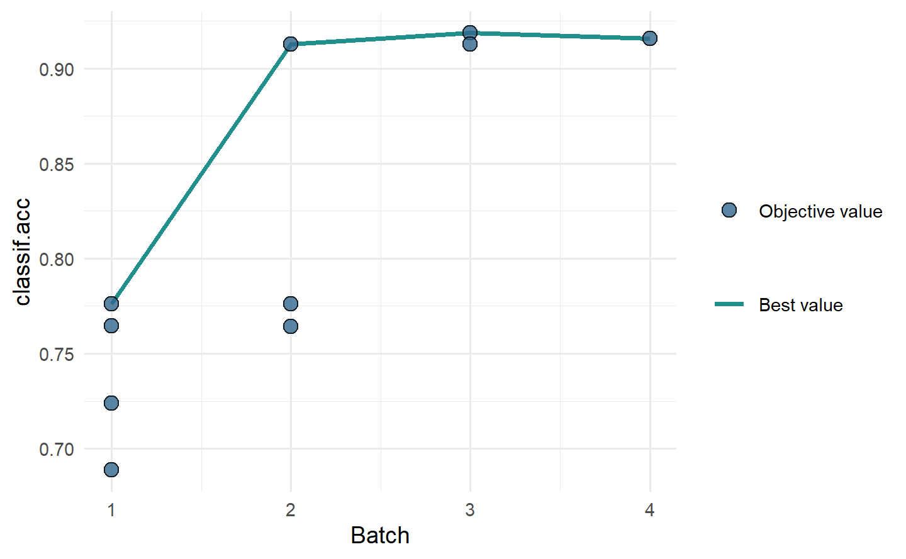
In the plot, we can see that adding a second feature further improves the performance to over 90%. To see which feature was added, we can go back to the archive and look at the second iteration:
dt[batch_nr == 2, 1:5]
#> bill_depth bill_length body_mass flipper_length classif.acc
#> 1: TRUE FALSE FALSE TRUE 0.7762777
#> 2: FALSE TRUE FALSE TRUE 0.9128146
#> 3: FALSE FALSE TRUE TRUE 0.7644038The improvement in batch three is small so we may even prefer to select a marginally worse model with two features to reduce data size.
To directly show the best feature set, we can use $result_feature_set which returns the features in alphabetical order (not order selected):
在第三次迭代中的改进很小，因此我们甚至可能更愿意选择一个带有两个特征的性能稍差一点的模型，以减小数据集的大小。
要直接显示最佳特征集，我们可以使用
$result_feature_set，该属性返回按字母顺序排列的特征（而不是选择的顺序）：
instance$result_feature_set
#> [1] "bill_depth" "bill_length" "flipper_length"6.2.2 The FSelectInstance Class
To create an FSelectInstanceSingleCrit object, we use the sugar function fsi():
6.2.3 The FSelector Class
The FSelector class is the base class for different feature selection algorithms. The following algorithms are currently implemented in mlr3fselect:
Random search, trying random feature subsets until termination (
fs("random_search"))Exhaustive search, trying all possible feature subsets (
fs("exhaustive_search"))Sequential search, i.e. sequential forward or backward selection (
fs("sequential"))Recursive feature elimination, which uses a learner’s importance scores to iteratively remove features with low feature importance (
fs("rfe"))Design points, trying all user-supplied feature sets (
fs("design_points"))Genetic search, implementing a genetic algorithm which treats the features as a binary sequence and tries to find the best subset with mutations (
fs("genetic_search"))Shadow variable search, which adds permuted copies of all features (shadow variables), performs forward selection, and stops when a shadow variable is selected (
fs("shadow_variable_search"))
Note that all these methods can be stopped (early) with a terminator, e.g. an exhaustive search can be stopped after a given number of evaluations. In this example, we will use a simple random search and retrieve it from the mlr_fselectors dictionary with fs().
FSelector类是不同特征选择算法的基类。目前在mlr3fselect中实现了以下算法：
随机搜索，直到满足终止条件为止尝试随机特征子集 (
fs("random_search"))穷举搜索，尝试所有可能的特征子集 (
fs("exhaustive_search"))顺序搜索，即顺序前向或顺序后向选择 (
fs("sequential"))递归特征消除，它使用学习器的重要性分数，迭代地删除具有较低重要性的特征 (
fs("rfe"))设计点，尝试所有用户提供的特征集 (
fs("design_points"))遗传搜索，实现将特征视为二进制序列的遗传算法，并尝试通过突变找到最佳子集 (
fs("genetic_search"))影子变量搜索，它将所有特征的排列副本（影子变量）添加到特征集中，执行前向选择，并在选择了影子变量时停止 (
fs("shadow_variable_search"))请注意，所有这些方法都可以（提前）通过终止条件停止，例如，穷举搜索可以在给定数量的评估后停止。在本例中，我们将使用简单的随机搜索，并使用
fs()函数从mlr_fselectors字典中检索它。
fselector = fs("random_search")6.2.4 Starting the Feature Selection
fselector$optimize(instance)
# access the best feature subset and the corresponding measured performance
as.data.table(instance$result)[, .(features, classif.acc)]
#> features classif.acc
#> 1: bill_length,body_mass,flipper_length 0.921434Now the optimized feature subset can be used to subset the task and fit the model on all observations:
tsk_pen = tsk("penguins")
tsk_pen$select(instance$result_feature_set)
lrn_rpart$train(tsk_pen)6.2.5 Optimizing Multiple Performance Measures
fselector = fs("random_search")
fselector$optimize(instance)Note that these two measures cannot both be optimal at the same time (except for the perfect classifier) and we expect several Pareto-optimal solutions.
请注意，这两个指标在同一时间不能都达到最优（除了完美的分类器），我们期望会有多个帕累托最优解。
# access the best feature subsets
as.data.table(instance$result)[, .(features, classif.tpr, classif.tnr)]
#> features classif.tpr classif.tnr
#> 1: V10,V14,V17,V18,V19,V28,... 0.8888889 0.6363636
#> 2: V1,V10,V11,V13,V14,V15,... 0.7500000 0.7272727
#> 3: V1,V10,V11,V12,V13,V14,... 0.8055556 0.6969697
#> 4: V11,V20,V25,V26,V27,V3,... 0.6388889 0.7878788
#> 5: V1,V10,V11,V12,V13,V14,... 0.7500000 0.7272727
#> 6: V1,V10,V11,V12,V13,V14,... 0.7500000 0.7272727
#> 7: V1,V10,V11,V13,V14,V15,... 0.8055556 0.6969697We see different tradeoffs of sensitivity and specificity but no feature subset is dominated by another, i.e. has worse sensitivity and specificity than any other subset.
我们看到了不同灵敏度和特异性的权衡，但没有任何特征子集被另一个支配，即没有任何子集的灵敏度和特异性都比其他子集差。
6.2.6 Nested Resampling
As in tuning, the performance estimate of the finally selected feature subset is usually optimistically biased. To obtain unbiased performance estimates, nested resampling is required and can be set up analogously to HPO (see Section 4.3). We now show this as an example on the sonar task. The AutoFSelector class wraps a learner and augments it with automatic feature selection. Because the AutoFSelector itself inherits from the Learner base class, it can be used like any other learner. In the example below, a logistic regression learner is created. This learner is then wrapped in a random search feature selector that uses holdout (inner) resampling for performance evaluation. The sugar function auto_fselector can be used to create an instance of AutoFSelector:
与调优中一样，最终选择的特征子集的性能估计通常是乐观偏倚的。为了获得无偏的性能估计，需要进行嵌套重抽样，并且可以类似于HPO进行设置（请参见 Section 4.3）。下面的例子中，我们展示了在声纳任务上使用嵌套重抽样的示例。
AutoFSelector类将学习器封装，并增加了自动特征选择功能。因为AutoFSelector本身继承自Learner基类，所以它可以像其他学习器一样使用。在下面的例子中，我们创建了一个逻辑回归学习器。然后，将该学习器包装在一个使用留出法（内部）重抽样进行性能评估的随机搜索特征选择器中。auto_fselector函数可以用来创建AutoFSelector的实例：
afs = auto_fselector(
fselector = fs("random_search"),
learner = lrn("classif.log_reg"),
resampling = rsmp("holdout"),
measure = msr("classif.acc"),
terminator = trm("evals", n_evals = 10)
)
afs
#> <AutoFSelector:classif.log_reg.fselector>
#> * Model: list
#> * Packages: mlr3, mlr3fselect, mlr3learners, stats
#> * Predict Type: response
#> * Feature Types: logical, integer, numeric, character, factor, ordered
#> * Properties: loglik, twoclassThe AutoFSelector can then be passed to benchmark() or resample() for nested resampling (Section 4.3). Below we compare our wrapped learner afs with a normal logistic regression lrn("classif.log_reg").
as.data.table(bmr)[, .(learner_id, classif.acc)]
#> learner_id classif.acc
#> 1: classif.log_reg.fselector 0.7363009
#> 2: classif.log_reg 0.6537612We can see that, in this example, the feature selection improves prediction performance.
Pipelines and Preprocessing
7 Sequential Pipelines
mlr3 aims to provide a layer of abstraction for ML practitioners, allowing users to quickly swap one algorithm for another without needing expert knowledge of the underlying implementation. A unified interface for Task, Learner, and Measure objects means that complex benchmark and tuning experiments can be run in just a few lines of code for any off-the-shelf model, i.e., if you just want to run an experiment using the basic implementation from the underlying algorithm, we hope we have made this easy for you to do.
mlr3pipelines (Binder et al. 2021) takes this modularity one step further, extending it to workflows that may also include data preprocessing (Chapter 9), building ensemble-models, or even more complicated meta-models. mlr3pipelines makes it possible to build individual steps within a Learner out of building blocks, which inherit from the PipeOp class. PipeOps can be connected using directed edges to form a Graph or ‘pipeline’, which represent the flow of data between operations. During model training, the PipeOps in a Graph transform a given Task and subsequent PipeOps receive the transformed Task as input. As well as transforming data, PipeOps generate a state, which is used to inform the PipeOps operation during prediction, similar to how learners learn and store model parameters/weights during training that go on to inform model prediction.
mlr3旨在为机器学习从业者提供一个抽象层，使用户能够快速替换一个算法为另一个算法，而无需了解底层实现的专业知识。统一的Task（任务）、Learner（学习器）和Measure（度量）对象接口意味着，可以使用极少的代码行数运行任何现成模型的复杂基准和调优实验，即，如果你只想使用底层算法的基本实现来运行一个实验，我们希望我们已经让这变得容易了。
mlr3pipelines（Binder等人，2021年）将这种模块化推进了一步，将其扩展到可能还包括数据预处理（Chapter 9）、构建集成模型，甚至更复杂的元模型的工作流中。mlr3pipelines使得可以用继承自PipeOp类的构建块构建Learner内部的各个步骤。PipeOps可以使用有向边连接，形成一个Graph（图）或“管道”，它表示操作之间的数据流。在模型训练期间，Graph中的PipeOps会转换给定的Task，随后的PipeOps以转换后的Task作为输入。除了转换数据外，PipeOps还生成一个状态，用于在预测期间通知PipeOps的操作，类似于学习器在训练期间学习和存储模型参数/权重，然后用于模型预测。
7.1 PipeOp: Pipeline Operators
as.data.table(po())[1:6, 1:2]
#> key label
#> 1: boxcox Box-Cox Transformation of Numeric Features
#> 2: branch Path Branching
#> 3: chunk Chunk Input into Multiple Outputs
#> 4: classbalancing Class Balancing
#> 5: classifavg Majority Vote Prediction
#> 6: classweights Class Weights for Sample WeightingLet us now take a look at a PipeOp in practice using principal component analysis (PCA) as an example, which is implemented in PipeOpPCA. Below we construct the PipeOp using its ID "pca" and inspect it.
po_pca = po("pca", center = TRUE)
po_pca
#> PipeOp: <pca> (not trained)
#> values: <center=TRUE>
#> Input channels <name [train type, predict type]>:
#> input [Task,Task]
#> Output channels <name [train type, predict type]>:
#> output [Task,Task]A PipeOp can be trained using $train(), which can have multiple inputs and outputs. Both inputs and outputs are passed as elements in a single list. The "pca" PipeOp takes as input the original task and after training returns the task with features replaced by their principal components.
tsk_small = tsk("penguins_simple")$select(c("bill_depth", "bill_length"))
poin = list(tsk_small$clone()$filter(1:5))
poout = po_pca$train(poin) # poin: Task in a list
poout # list with a single element 'output'
#> $output
#> <TaskClassif:penguins> (5 x 3): Simplified Palmer Penguins
#> * Target: species
#> * Properties: multiclass
#> * Features (2):
#> - dbl (2): PC1, PC2
poout[[1]]$head()
#> species PC1 PC2
#> 1: Adelie 0.1561004 0.005716376
#> 2: Adelie 1.2676891 0.789534280
#> 3: Adelie 1.5336113 -0.174460208
#> 4: Adelie -2.1096077 0.998977117
#> 5: Adelie -0.8477930 -1.619767566
po_pca$state
#> Standard deviations (1, .., p=2):
#> [1] 1.512660 1.033856
#>
#> Rotation (n x k) = (2 x 2):
#> PC1 PC2
#> bill_depth -0.6116423 -0.7911345
#> bill_length 0.7911345 -0.6116423Once trained, the $predict() function can then access the saved state to operate on the test data, which again is passed as a list:
tsk_onepenguin = tsk_small$clone()$filter(42)
poin = list(tsk_onepenguin)
poout = po_pca$predict(poin)
poout[[1]]$data()
#> species PC1 PC2
#> 1: Adelie 1.554877 -1.4549087.2 Graph: Networks of PopeOps
PipeOps represent individual computational steps in machine learning pipelines. These pipelines themselves are defined by Graph objects. A Graph is a collection of PipeOps with “edges” that guide the flow of data.
The most convenient way of building a Graph is to connect a sequence of PipeOps using the %>>%-operator (read “double-arrow”) operator. When given two PipeOps, this operator creates a Graph that first executes the left-hand PipeOp, followed by the right-hand one. It can also be used to connect a Graph with a PipeOp, or with another Graph. The following example uses po("mutate") to add a new feature to the task, and po("scale") to then scale and center all numeric features.
PipeOps代表机器学习管道中的单个计算步骤。这些管道本身由Graph对象定义。Graph是一个包含PipeOps的集合，其“边”指导着数据的流动。构建
Graph的最方便的方法是使用%>>%（读作“双箭头”）操作符连接一系列PipeOps。当给定两个PipeOp时，此操作符创建一个Graph，首先执行左侧的PipeOp，然后执行右侧的。它也可以用于将Graph与PipeOp或另一个Graph连接。以下示例使用po("mutate")将一个新特征添加到任务，然后使用po("scale")对所有数值特征进行缩放和居中处理。
graph$plot(horizontal = TRUE)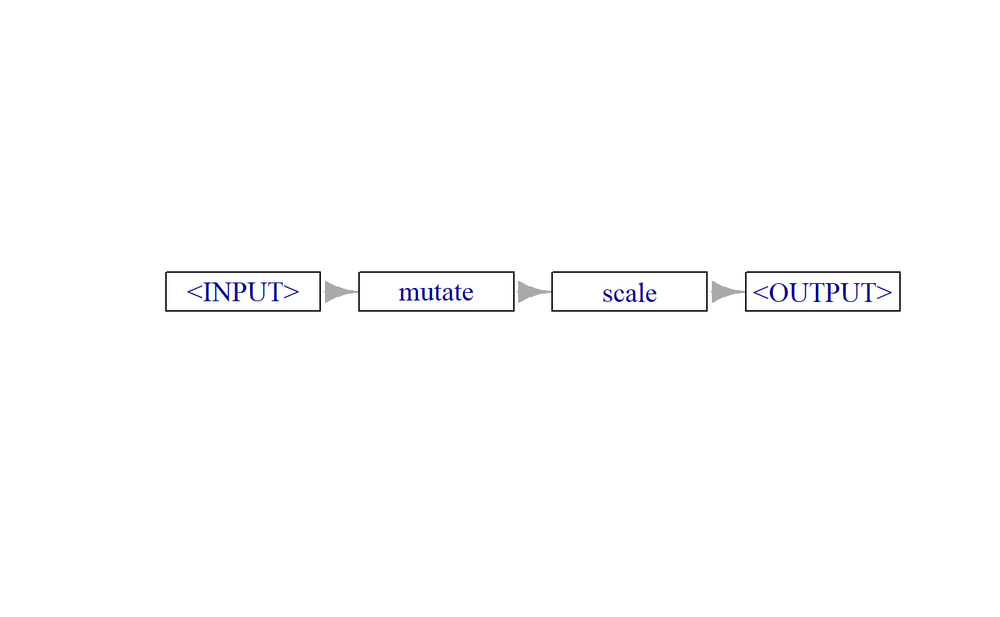
graph$pipeops
#> $mutate
#> PipeOp: <mutate> (not trained)
#> values: <mutation=<list>, delete_originals=FALSE>
#> Input channels <name [train type, predict type]>:
#> input [Task,Task]
#> Output channels <name [train type, predict type]>:
#> output [Task,Task]
#>
#> $scale
#> PipeOp: <scale> (not trained)
#> values: <robust=FALSE>
#> Input channels <name [train type, predict type]>:
#> input [Task,Task]
#> Output channels <name [train type, predict type]>:
#> output [Task,Task]
graph$edges
#> src_id src_channel dst_id dst_channel
#> 1: mutate output scale inputInstead of using %>>%, you can also create a Graph explicitly using the $add_pipeop() and $add_edge() methods to create PipeOps and the edges connecting them:
graph = Graph$new()$
add_pipeop(po_mutate)$
add_pipeop(po_scale)$
add_edge("mutate", "scale")Once built, a Graph can be used by calling $train() and $predict() as if it were a Learner (though it still outputs a list during training and prediction):
result = graph$train(tsk_small)
result
#> $scale.output
#> <TaskClassif:penguins> (333 x 4): Simplified Palmer Penguins
#> * Target: species
#> * Properties: multiclass
#> * Features (3):
#> - dbl (3): bill_depth, bill_length, bill_ratio
result[[1]]$data()[1:3]
#> species bill_depth bill_length bill_ratio
#> 1: Adelie 0.7795590 -0.8946955 -1.0421499
#> 2: Adelie 0.1194043 -0.8215515 -0.6804365
#> 3: Adelie 0.4240910 -0.6752636 -0.7434640
result = graph$predict(tsk_onepenguin)
result[[1]]$head()
#> species bill_depth bill_length bill_ratio
#> 1: Adelie 0.9319023 -0.5289757 -0.89632127.3 Sequential Learner-Pipelines
Possibly the most common application for mlr3pipelines is to use it to perform preprocessing tasks, such as missing value imputation or factor encoding, and to then feed the resulting data into a Learner – we will see more of this in practice in Chapter 9. A Graph representing this workflow manipulates data and fits a Learner-model during training, ensuring that the data is processed the same way during the prediction stage. Conceptually, the process may look as shown in Figure 7.3.
mlr3pipelines可能最常见的应用之一是用它来执行预处理任务，比如缺失值填充或因子编码，然后将处理后的数据输入到一个学习器中 - 我们将在 Chapter 9 的实践中更多地了解到这方面的内容。代表这种工作流程的图形在训练期间操作数据并拟合学习器模型，确保数据在预测阶段以相同的方式被处理。
7.3.1 Learners as PipeOps and Graphs as Learners
Learner objects can be converted to PipeOps with as_pipeop(), however, this is only necessary if you choose to manually create a graph instead of using %>>%. With either method, internally Learners are passed to po("learner"). The following code creates a Graph that uses po("imputesample") to impute missing values by sampling from observed values (Section 9.3) then fits a logistic regression on the transformed task.
lrn_logreg = lrn("classif.log_reg")
graph = po("imputesample") %>>% lrn_logreg
graph$plot(horizontal = TRUE)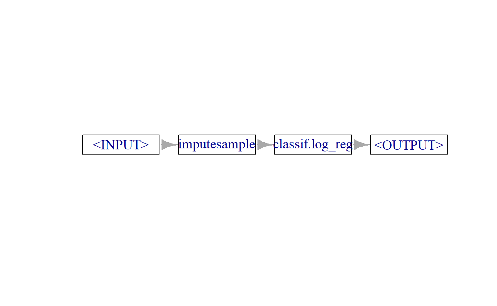
We have seen how training and predicting Graphs is possible but has a slightly different design to Learner objects, i.e., inputs and outputs during both training and predicting are list objects. To use a Graph as a Learner with an identical interface, it can be wrapped in a GraphLearner object with as_learner(). The Graph can then be used like any other Learner, so now we can benchmark our pipeline to decide if we should impute by sampling or with the mode of observed values (po("imputemode")):
我们已经看到，训练和预测
图（Graphs）是可能的，但与学习器（Learner）对象相比，设计略有不同，即在训练和预测过程中，输入和输出都是列表（list）对象。要将图（Graph）作为具有相同接口的学习器（Learner）使用，可以使用as_learner()将其封装为图学习器（GraphLearner）对象。然后，该图（Graph）就可以像任何其他学习器（Learner）一样使用，因此现在我们可以对我们的管道进行基准测试，以决定是使用从观察到的值中抽样填补还是使用观察到的值的模式进行填补（po("imputemode")）：
glrn_sample = as_learner(graph)
glrn_mode = as_learner(po("imputemode") %>>% lrn_logreg)
design = benchmark_grid(tsk("pima"), list(glrn_sample, glrn_mode),
rsmp("cv", folds = 3))
bmr = benchmark(design)
bmr$aggregate()[, .(learner_id, classif.ce)]
#> learner_id classif.ce
#> 1: imputesample.classif.log_reg 0.2395833
#> 2: imputemode.classif.log_reg 0.24088547.3.2 Inspecting Graphs
You may want to inspect pipelines and the flow of data to learn more about your pipeline or to debug them. We first need to set the $keep_results flag to be TRUE so that intermediate results are retained, which is turned off by default to save memory.
glrn_sample$graph_model$keep_results = TRUE
glrn_sample$train(tsk("pima"))
imputesample_output = glrn_sample$graph_model$pipeops$imputesample$.result
imputesample_output[[1]]$missings()
#> diabetes age pedigree pregnant glucose insulin mass pressure
#> 0 0 0 0 0 0 0 0
#> triceps
#> 07.3.3 Configuring Pipeline Hyperparameters
PipeOp hyperparameters are collected together in the $param_set of a graph and prefixed with the ID of the PipeOp to avoid parameter name clashes. Below we use the same PipeOp twice but set the id to ensure their IDs are unique.
管道操作（PipeOp）的超参数被集中存储在图的
$param_set中，并且在名称前加上管道操作的ID，以避免参数名称冲突。在下面的例子中，我们使用相同的管道操作两次，但设置了ID以确保它们的ID是唯一的。
graph = po("scale", center = FALSE, scale = TRUE, id = "scale") %>>%
po("scale", center = TRUE, scale = FALSE, id = "center") %>>%
lrn("classif.rpart", cp = 1)
unlist(graph$param_set$values)
#> scale.robust scale.center scale.scale center.robust
#> 0 0 1 0
#> center.center center.scale classif.rpart.xval classif.rpart.cp
#> 1 0 0 1Whether a pipeline is treated as a Graph or GraphLearner, hyperparameters are updated and accessed in the same way.
graph$param_set$values$classif.rpart.maxdepth = 5
graph_learner = as_learner(graph)
graph_learner$param_set$values$classif.rpart.minsplit = 2
unlist(graph_learner$param_set$values)
#> scale.center scale.scale scale.robust
#> 0 1 0
#> center.center center.scale center.robust
#> 1 0 0
#> classif.rpart.cp classif.rpart.maxdepth classif.rpart.minsplit
#> 1 5 2
#> classif.rpart.xval
#> 08 Non-sequential Pipelines and Tuning
By using the gunion() function, we can instead combine multiple PipeOps, Graphs, or a mixture of both, into a parallel Graph.
In the following example, we create a Graph that centers its inputs (po("scale")) and then copies the centered data to two parallel streams: one replaces the data with columns that indicate whether data is missing (po("missind")), and the other imputes missing data using the median (po("imputemedian")), which we will return to in Section 9.3. The outputs of both streams are then combined into a single dataset using po("featureunion").
graph = po("scale", center = TRUE, scale = FALSE) %>>%
gunion(list(
po("missind"),
po("imputemedian")
)) %>>%
po("featureunion")
1
#> [1] 1
graph$plot(horizontal = TRUE)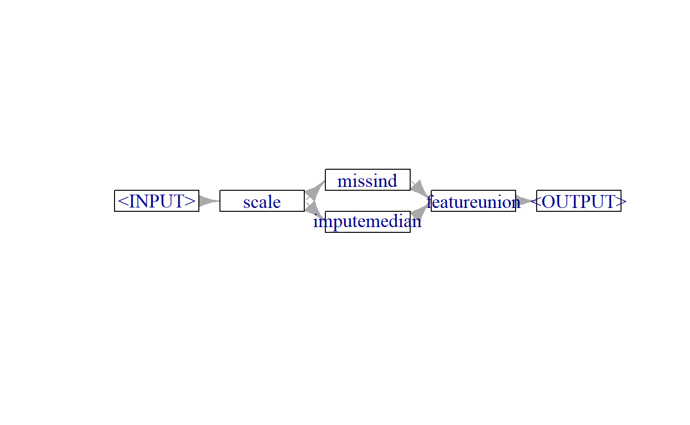
When applied to the first three rows of the "pima" task we can see how this imputes missing data and adds a column indicating where values were missing.
tsk_pima_head = tsk("pima")$filter(1:3)
tsk_pima_head$data(cols = c("diabetes", "insulin", "triceps"))
#> diabetes insulin triceps
#> 1: pos NA 35
#> 2: neg NA 29
#> 3: pos NA NA
result = graph$train(tsk_pima_head)[[1]]
result$data(cols = c("diabetes", "insulin", "missing_insulin", "triceps", "missing_triceps"))
#> diabetes insulin missing_insulin triceps missing_triceps
#> 1: pos 0 missing 3 present
#> 2: neg 0 missing -3 present
#> 3: pos 0 missing 0 missing8.1 Selectors and Parallel Pipelines
It is common in Graphs for an operation to be applied to a subset of features. In mlr3pipelines this can be achieved in two ways: either by passing the column subset to the affect_columns hyperparameter of a PipeOp (assuming it has that hyperparameter), which controls which columns should be affected by the PipeOp; or, one can use the PipeOpSelect operator to create operations in parallel on specified feature subsets, and then unite the result using PipeOpFeatureUnion.
在
图（Graphs）中，常常会对特征的子集应用操作。在mlr3pipelines中，可以通过两种方式实现这一点：一种方式是将列子集传递给PipeOp的affect_columns超参数（假设该超参数存在），它控制哪些列应该受到PipeOp的影响；另一种方式是使用PipeOpSelect运算符，针对指定的特征子集并行创建操作，然后使用PipeOpFeatureUnion将结果合并。
sel_bill = selector_grep("^bill")
sel_not_bill = selector_invert(sel_bill)
graph = po("scale", affect_columns = sel_not_bill) %>>%
po("pca", affect_columns = sel_bill)
result = graph$train(tsk("penguins_simple"))
result[[1]]$data()[1:3, 1:5]
#> species PC1 PC2 body_mass flipper_length
#> 1: Adelie -5.014734 1.0716828 -0.5676206 -1.4246077
#> 2: Adelie -4.495124 -0.1852998 -0.5055254 -1.0678666
#> 3: Adelie -3.754628 0.4867612 -1.1885721 -0.4257325The biggest advantage of this method is that it creates a very simple, sequential Graph. However, one disadvantage of the affect_columns method is that it is relatively easy to have unexpected results if the ordering of PipeOps is mixed up. For example, if we had reversed the order of po("pca") and po("scale") above then we would have first created columns "PC1" and "PC2" and then erroneously scaled these, since their names do not start with “bill” and they are therefore matched by sel_not_bill. Creating parallel paths with po("select") can help mitigate such errors by selecting features given by the Selector and creating independent data processing streams with the given feature subset. Below we pass the parallel pipelines to gunion() as a list to ensure they receive the same input, and then combine the outputs with po("featureunion").
这种方法的最大优势在于它创建了一个非常简单、顺序的图形结构。然而，
affect_columns方法的一个缺点是，如果 PipeOps 的顺序混乱，很容易产生意外的结果。例如，如果我们在上述例子中颠倒了po("pca")和po("scale")的顺序，那么我们首先会创建"PC1"和"PC2"这两列，然后错误地对它们进行了缩放，因为它们的列名不以 “bill” 开头，所以被sel_not_bill匹配到了。使用po("select")创建并行路径可以帮助减轻此类错误，它根据选择器给定的特征选择功能，并使用给定的特征子集创建独立的数据处理流。在下面的例子中，我们将并行流程以列表形式传递给gunion()以确保它们接收相同的输入，然后使用po("featureunion")组合它们的输出结果。
po_select_bill = po("select", id = "s_bill", selector = sel_bill)
po_select_not_bill = po("select", id = "s_notbill", selector = sel_not_bill)
path_pca = po_select_bill %>>% po("pca")
path_scale = po_select_not_bill %>>% po("scale")
graph = gunion(list(path_pca, path_scale)) %>>% po("featureunion")
graph$plot(horizontal = TRUE)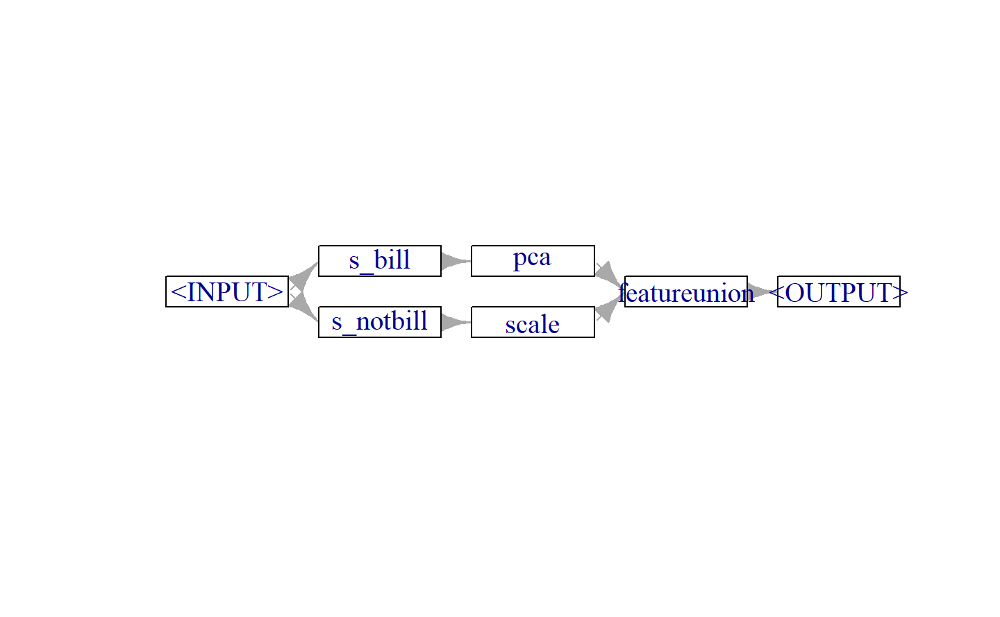
The po("select") method also has the significant advantage that it allows the same set of features to be used in multiple operations simultaneously, or to both transform features and keep their untransformed versions (by using po("nop") in one path). PipeOpNOP performs no operation on its inputs and is thus useful when you only want to perform a transformation on a subset of features and leave the others untouched:
po("select")方法的另一个重要优势是，它允许同时在多个操作中使用相同的特征集，或者在进行特征转换的同时保留它们的未转换版本（通过在其中一个路径中使用po("nop")）。PipeOpNOP在其输入上不执行任何操作，因此当你只想对某些特征子集进行转换而保持其他特征不变时，它非常有用：
graph = gunion(list(
po_select_bill %>>% po("scale"),
po_select_not_bill %>>% po("nop")
)) %>>% po("featureunion")
graph$plot(horizontal = TRUE)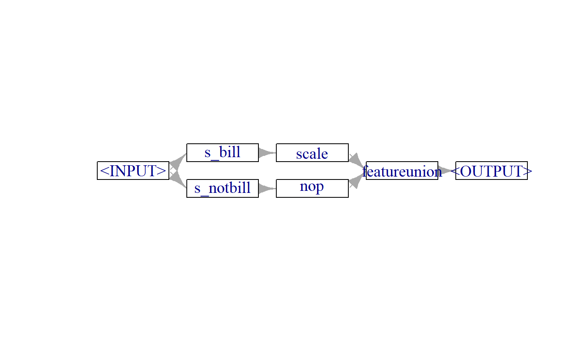
graph$train(tsk("penguins_simple"))[[1]]$data()[1:3, 1:5]
#> species bill_depth bill_length body_mass flipper_length
#> 1: Adelie 0.7795590 -0.8946955 3750 181
#> 2: Adelie 0.1194043 -0.8215515 3800 186
#> 3: Adelie 0.4240910 -0.6752636 3250 1958.2 Practical Pipelines by Example
8.2.1 Bagging with “greplicate” and “subsample”
The basic idea of bagging (from bootstrapp aggregating), introduced by Breiman (1996), is to aggregate multiple predictors into a single, more powerful predictor. Predictions are usually aggregated by the arithmetic mean for regression tasks or majority vote for classification. The underlying intuition behind bagging is that averaging a set of unstable and diverse (i.e., only weakly correlated) predictors can reduce the variance of the overall prediction. Each learner is trained on a different random sample of the original data.
Although we have already seen that a pre-constructed bagging pipeline is available with ppl("bagging"), in this section we will build our own pipeline from scratch to showcase how to construct a complex Graph, which will look something like Figure 8.1.
装袋（bagging）的基本思想（来自bootstrapp aggregating，由Breiman（1996）引入）是将多个预测器聚合成一个更强大的预测器。在回归任务中，通常通过算术平均值来聚合预测结果，而在分类任务中则采用多数投票法。装袋背后的基本直觉是，将一组不稳定且多样化的（即仅弱相关的）预测器进行平均，可以减小整体预测的方差。每个学习器都是在原始数据的不同随机样本上训练得到的。
尽管我们已经看到在
ppl("bagging")中提供了一个预先构建的装袋管道，但在本节中，我们将从零开始构建我们自己的管道，以展示如何构建一个复杂的图形，类似于 Figure 8.1 所示。
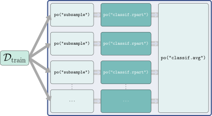
PipeOp.
gr_single_pred = po("subsample", frac = .7) %>>% lrn("classif.rpart")
gr_pred_set = ppl("greplicate", graph = gr_single_pred, n = 10)
gr_bagging = gr_pred_set %>>% po("classifavg", innum = 10)
gr_bagging$plot()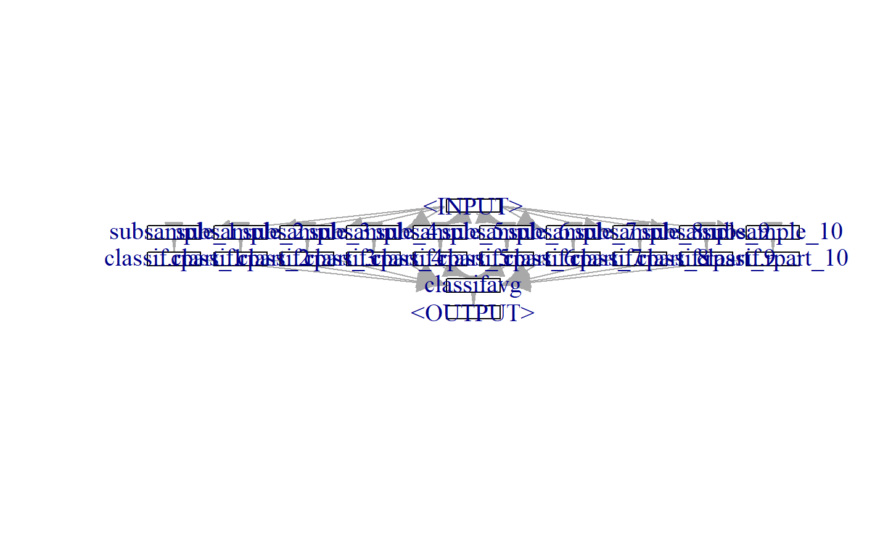
Now let us see how well our bagging pipeline compares to the single decision tree and a random forest when benchmarked against tsk("sonar").
glrn_bagging = as_learner(gr_bagging)
glrn_bagging$id = "bagging"
learners = c(glrn_bagging, lrn("classif.rpart"), lrn("classif.ranger"))
bmr = benchmark(benchmark_grid(tsk("sonar"), learners,
rsmp("cv", folds = 3)))
bmr$aggregate()[, .(learner_id, classif.ce)]
#> learner_id classif.ce
#> 1: bagging 0.2452036
#> 2: classif.rpart 0.3360939
#> 3: classif.ranger 0.1827467To automatically recreate this pipeline, you can construct ppl("bagging") by specifying the learner to ‘bag’, the number of iterations, the fraction of data to sample, and the PipeOp to average the predictions, as shown in the code below. Note we set collect_multiplicity = TRUE which collects the predictions across paths, that technically use the Multiplicity method, which we will not discuss here but refer the reader to the documentation.
要自动重新创建这个管道，您可以通过在代码中指定学习器为‘bag’、迭代次数、采样的数据比例以及用于平均预测的
PipeOp来构建ppl("bagging")，如下所示。请注意，我们设置了collect_multiplicity = TRUE，这样可以在路径间收集预测结果，这实际上使用了Multiplicity方法，但我们在这里不会讨论详细内容，读者可以参考文档了解更多信息。
The main difference between our pipeline and a random forest is that the latter also performs feature subsampling, where only a random subset of available features is considered at each split point. While we cannot implement this directly with mlr3pipelines, we can use a custom Selector method to approximate this method. We will create this Selector by passing a function that takes as input the task and returns a sample of the features, we sample the square root of the number of features to mimic the implementation in ranger. For efficiency, we will now use ppl("bagging") to recreate the steps above:
我们的管道与随机森林之间的主要区别在于，后者还执行特征子抽样，即在每个分裂点只考虑可用特征的一个随机子集。虽然我们无法直接在
mlr3pipelines中实现这一点，但我们可以使用自定义的选择器方法来近似这个方法。我们将通过传递一个接受任务作为输入并返回特征样本的函数来创建这个选择器。我们将对特征进行采样，采样数量为特征数量的平方根，以模仿ranger中的实现。为了提高效率，我们现在将使用ppl("bagging")来重新创建上述步骤：
# custom selector
selector_subsample = function(task) {
sample(task$feature_names, sqrt(length(task$feature_names)))
}
# bagging pipeline with out selector
gr_bagging_quasi_rf = ppl(
"bagging",
graph = po("select", selector = selector_subsample) %>>%
lrn("classif.rpart", minsplit = 1),
iterations = 100,
averager = po("classifavg", collect_multiplicity = TRUE)
)
# bootstrap resampling
gr_bagging_quasi_rf$param_set$values$subsample.replace = TRUE
# convert to learner
glrn_quasi_rf = as_learner(gr_bagging_quasi_rf)
glrn_quasi_rf$id = "quasi.rf"
# benchmark
design = benchmark_grid(
tsks("sonar"),
learners = list(glrn_quasi_rf, lrn("classif.ranger", num.trees = 100)),
rsmp("cv", folds = 5)
)
bmr = benchmark(design)
bmr$aggregate()[, .(learner_id, classif.ce)]
#> learner_id classif.ce
#> 1: quasi.rf 0.1828107
#> 2: classif.ranger 0.1641115In only a few lines of code, we took a weaker learner and turned it into a powerful model that we can see is comparable to the implementation in ranger::ranger.
8.2.2 Stacking with po(“learner_cv”)
Stacking (Wolpert 1992) is another very popular ensembling technique that can significantly improve predictive performance. The basic idea behind stacking is to use predictions from multiple models (usually referred to as level 0 models) as features for a subsequent model (the level 1 model) which in turn combines these predictions (Figure 8.2). A simple combination can be a linear model (possibly regularized if you have many level 0 models), since a weighted sum of level 0 models is often plausible and good enough. Though, non-linear level 1 models can also be used, and it is also possible for the level 1 model to access the input features as well as the level 0 predictions. Stacking can be built with more than two levels (both conceptually, and in mlr3) but we limit ourselves to this simpler setup here, which often also performs well in practice.
As with bagging, we will demonstrate how to create a stacking pipeline manually, although a pre-constructed pipeline is available with ppl("stacking").
堆叠（Stacking）（Wolpert 1992）是另一种非常流行的集成技术，可以显著提高预测性能。堆叠背后的基本思想是使用来自多个模型的预测（通常称为第0级模型）作为后续模型（第1级模型）的特征，后者再结合这些预测（ Figure 8.2 ）。简单的组合可以是一个线性模型（如果你有很多第0级模型，可能需要正则化），因为第0级模型的加权和通常是合理且足够好的。当然，也可以使用非线性的第1级模型，并且第1级模型还可以访问输入特征以及第0级的预测。堆叠可以建立多个级别（在概念上和在
mlr3中都可以），但在这里我们限制自己使用这种较简单的设置，因为在实践中它通常也表现得很好。与装袋类似，我们将演示如何手动创建一个堆叠管道，尽管
ppl("stacking")中也提供了一个预先构建的管道。
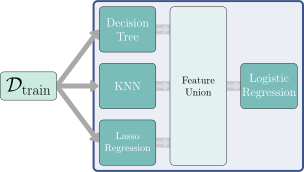
PipeOpFeatureUnion.
lrn_rpart = lrn("classif.rpart", predict_type = "prob")
po_rparv_cv = po("learner_cv", learner = lrn_rpart,
resampling.folds = 2, id = "rpart_cv")
lrn_knn = lrn("classif.kknn", predict_type = "prob")
po_knn_cv = po("learner_cv", learner = lrn_knn,
resampling.folds = 2, id = "knn_cv")
lrn_glmnet = lrn("classif.glmnet", predict_type = "prob")
po_glmnet_cv = po("learner_cv", learner = lrn_glmnet,
resampling.folds = 2, id = "glmnet_cv")
gr_level_0 = gunion(list(po_rparv_cv, po_knn_cv, po_glmnet_cv))
gr_combined = gr_level_0 %>>% po("featureunion")The resulting task contains the predicted probabilities for both classes made from each of the level 0 learners. However, as the probabilities always add up to , we only need the predictions for one of the classes (as this is a binary classification task), so we can use po("select") to only keep predictions for one class (we choose "M" in this example).
生成的任务包含了从第0级学习器中得到的两个类别的预测概率。然而，由于这些概率总是加起来等于1，我们只需要其中一个类别的预测结果（因为这是一个二元分类任务），所以我们可以使用
po("select")来仅保留其中一个类别的预测（在这个示例中我们选择了"M"类别）。
gr_stack = gr_combined %>>%
po("select", selector = selector_grep("\\.M$"))Finally, we can combine our pipeline with the final model that will take these predictions as its input. Below we use logistic regression, which combines the level 0 predictions in a weighted linear sum.
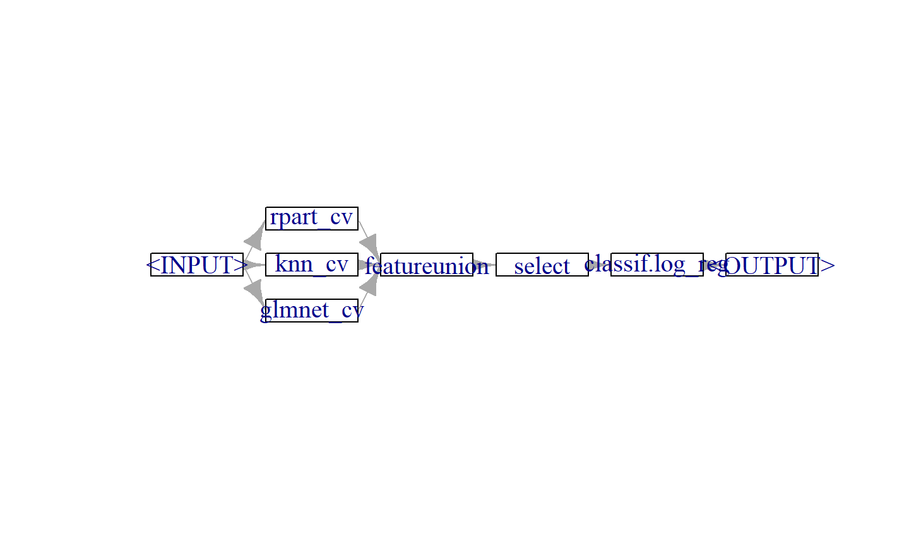
As our final model was an interpretable logistic regression, we can inspect the weights of the level 0 learners by looking at the final trained model:
由于我们的最终模型是一个可解释的逻辑回归模型，我们可以通过查看最终训练好的模型来检查第0级学习器的权重。
glrn_stack = as_learner(gr_stack)
glrn_stack$train(tsk("sonar"))
#> Warning: Multiple lambdas have been fit. Lambda will be set to 0.01 (see parameter 's').
#> This happened PipeOp glmnet_cv's $train()
#> Warning: Multiple lambdas have been fit. Lambda will be set to 0.01 (see parameter 's').
#> This happened PipeOp glmnet_cv's $train()
glrn_stack$base_learner()$model
#>
#> Call: stats::glm(formula = task$formula(), family = "binomial", data = data,
#> model = FALSE)
#>
#> Coefficients:
#> (Intercept) rpart_cv.prob.M knn_cv.prob.M glmnet_cv.prob.M
#> -4.5631 2.0611 6.1736 -0.2419
#>
#> Degrees of Freedom: 207 Total (i.e. Null); 204 Residual
#> Null Deviance: 287.4
#> Residual Deviance: 141.8 AIC: 149.8The model weights suggest that knn influences the predictions the most with the largest coefficient. To confirm this we can benchmark the individual models alongside the stacking pipeline.
模型的权重表明，knn的影响最大，其系数最大。为了确认这一点，我们可以将单独的模型与堆叠管道进行基准测试。
glrn_stack$id = "stacking"
design = benchmark_grid(
tsk("sonar"),
list(lrn_rpart, lrn_knn, lrn_glmnet, glrn_stack),
rsmp("repeated_cv")
)
bmr = benchmark(design)
bmr$aggregate()[, .(learner_id, classif.ce)]This experiment confirms that of the individual models, the KNN learner performs the best, however, our stacking pipeline outperforms them all. Now that we have seen the inner workings of this pipeline, next time you might want to more efficiently create it using ppl("stacking"), to copy the example above you would run:
这个实验证实了在单独的模型中，KNN学习器表现最好，但我们的堆叠管道的性能超过了它们所有。现在我们已经了解了这个管道的内部工作原理，下次您可能希望更高效地使用
ppl("stacking")来创建它。如果要复制上述示例，您可以运行：
ppl("stacking",
base_learners = lrns(c("classif.rpart", "classif.kknn", "classif.glmnet")),
super_learner = lrn("classif.log_reg"))
#> Graph with 6 PipeOps:
#> ID State sccssors prdcssors
#> classif.rpart.class... <<UNTRAINED>> featureunion
#> classif.kknn.classi... <<UNTRAINED>> featureunion
#> classif.glmnet.clas... <<UNTRAINED>> featureunion
#> nop <<UNTRAINED>> featureunion
#> featureunion <<UNTRAINED>> classif.log_reg classif.rpart.class...
#> classif.log_reg <<UNTRAINED>> featureunion8.3 Tuning Graphs
By wrapping a pipeline inside a GraphLearner, we can tune it at two levels of complexity using mlr3tuning:
Tuning of a fixed, usually sequential pipeline, where preprocessing is combined with a given learner. This simply means the joint tuning of any subset of selected hyperparameters of operations in the pipeline. Conceptually and also technically in
mlr3, this is not much different from tuning a learner that is not part of a pipeline.Tuning not only the hyperparameters of a pipeline, whose structure is not completely fixed in terms of its included operations, but also which concrete
PipeOpsshould be applied to data. This allows us to select these operations (e.g. which learner to use, which preprocessing to perform) in a data-driven manner known as “Combined Algorithm Selection and Hyperparameter optimization” (Thornton et al. 2013). As we will soon see, we can do this inmlr3pipelinesby using the powerful branching and proxy meta operators. Through this, we can conveniently create our own “mini AutoML systems” (Hutter, Kotthoff, and Vanschoren 2019) inmlr3, which can even be geared for specific tasks.
通过将一个管道包装在
GraphLearner内部，我们可以使用mlr3tuning在两个复杂度级别上进行调整：
对于一个固定的、通常是顺序执行的管道进行调整，其中预处理与指定的学习器结合在一起。这意味着对管道中操作的任意子集的超参数进行联合调整。从概念上讲，在
mlr3中，这与调整不是管道一部分的学习器没有太大区别，技术上也是如此。不仅调整管道的超参数，而且调整管道的结构在其包含的操作方面并不完全固定，还可以确定应该将哪些具体的PipeOps应用于数据。这使我们能够以一种数据驱动的方式选择这些操作（例如使用哪个学习器，进行哪种预处理），这被称为“联合算法选择和超参数优化”（Thornton等人，2013）。正如我们将很快看到的，我们可以通过使用强大的分支和代理元操作符在
mlr3pipelines中实现这一点。通过这种方式，我们可以方便地在mlr3中创建我们自己的“小型AutoML系统”（Hutter、Kotthoff和Vanschoren，2019），甚至可以针对特定任务进行调整。
8.3.1 Tuning Graph Hyperparameters
The optimal setting of the rank. hyperparameter of our PCA PipeOp may realistically depend on the value of the k hyperparameter of the KNN model so jointly tuning them is reasonable.
我们PCA
PipeOp的rank.超参数的最佳设置可能实际上依赖于KNN模型的k超参数的值，因此联合调整它们是合理的。
bmr$aggregate()[, .(learner_id, classif.ce)]
#> learner_id classif.ce
#> 1: pca.classif.kknn.tuned 0.2643892
#> 2: pca.classif.kknn 0.2694272Tuning pipelines will usually take longer than tuning individual learners as training steps are often more complex and the search space will be larger. Therefore, parallelization is often appropriate (Section 10.1) and/or more efficient tuning methods for searching large tuning spaces such as Bayesian optimization.
通常，调整整个管道的时间通常比调整单个学习器的时间长，因为训练步骤通常更加复杂，搜索空间也更大。因此，通常情况下，可以考虑使用并行化（第10.1节）或者更高效的调优方法，比如搜索大型调优空间的贝叶斯优化。
8.3.2 Tuning Alternative Paths with po(“branch”)
We will answer that question by making use of PipeOpBranch and PipeOpUnbranch, which make it possible to specify multiple alternative paths in a pipeline. po("branch") creates multiple paths such that data can only flow through one of these as determined by the selection hyperparameter (Figure 8.3). This concept makes it possible to use tuning to decide which PipeOps and Learners to include in the pipeline, while also allowing all options in every path to be tuned.
我们将利用
PipeOpBranch和PipeOpUnbranch来回答这个问题，它们使得在管道中指定多个备选路径成为可能。po("branch")创建多个路径，数据只能流经其中一个，由选择超参数决定（Figure 8.3）。这个概念使得我们能够使用调优来决定在管道中包括哪些PipeOps和学习器，同时也允许在每个路径中调整所有选项。
![Graph with "Dtrain" on the left with an arrow to `po("branch", selection = "pca")` which then has a dark shaded arrow to a box that says "PCA". Above this box is a transparent box that says "PipeOpNOP" and below the "PCA" box is another transparent box that says "YeoJohnson", the implication is that only the "PCA" box is active. The "PCA" box then has an arrow to `po("unbranch")` -> po("branch", selection = "XGBoost")` which has three arrows to another three boxes with "XGBoost" highlighted and "Random Forest" and "Decision Tree" transparent again. These finally have arrows to the same `po("unbranch")`.](imgs/mlr3book_figures-24.svg)
po("branch") and po("unbranch") operators where three separate branches are created and data only flows through the PCA, which is specified with the argument to selection.po("branch") is initialized either with the number of branches or with a character-vector indicating the names of the branches, the latter makes the selection hyperparameter (discussed below) more readable. Below we create three branches: do nothing (po("nop")), apply PCA (po("pca")), remove constant features (po("removeconstants")) then apply the Yeo-Johnson transform (po("yeojohnson")). It is important to use po("unbranch") (with the same arguments as "branch") to ensure that the outputs are merged into one result object.
paths = c("nop", "pca", "yeojohnson")
graph = po("branch", paths, id = "branchP0") %>>%
gunion(list(
po("nop"),
po("pca"),
po("removeconstants", id = "rm_const") %>>%
po("yeojohnson", id = "YJ")
)) %>>%
po("unbranch", paths, id = "unbranchP0")
graph$plot(horizontal = TRUE)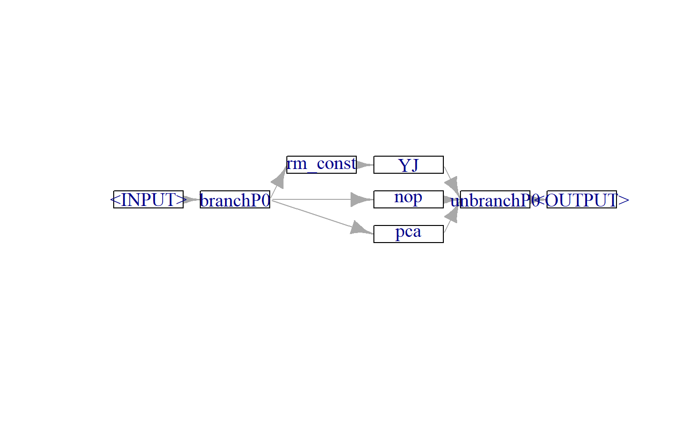
We can see how the output of this Graph depends on the setting of the branch.selection hyperparameter:
# use the "PCA" path
graph$param_set$values$branchP0.selection = "pca"
# new PCA columns
head(graph$train(tsk_mnist)[[1]]$feature_names)
#> [1] "PC1" "PC2" "PC3" "PC4" "PC5" "PC6"
# use the "Np-Op" path
graph$param_set$values$branchP0.selection = "nop"
# same features
head(graph$train(tsk_mnist)[[1]]$feature_names)
#> [1] "pixel6" "pixel12" "pixel17" "pixel18" "pixel26" "pixel29"Branching can even be used to tune which of several learners is most appropriate for a given dataset. We extend our example further and add the choice between a decision tree and KKNN:
graph_learner = graph %>>%
ppl("branch", lrns(c("classif.rpart", "classif.kknn")))
graph_learner$plot(horizontal = TRUE)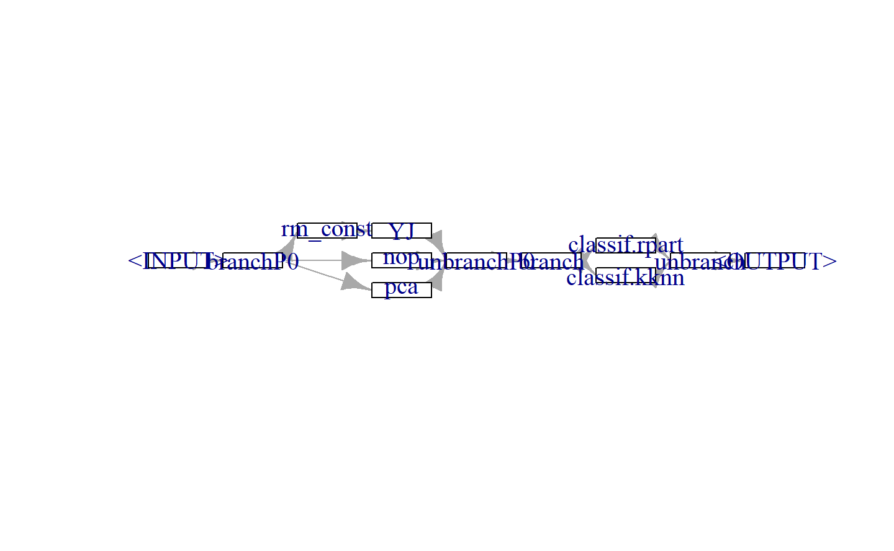
Tuning the selection hyperparameters can help determine which of the possible options work best in combination. We additionally tune the k hyperparameter of the KNN learner, as it may depend on the type of preprocessing performed. As this hyperparameter is only active when the “classif.kknn” path is chosen we will set a dependency:
graph_learner = as_learner(graph_learner)
graph_learner$param_set$set_values(
branchP0.selection = to_tune(paths),
branch.selection = to_tune(c("classif.rpart", "classif.kknn")),
classif.kknn.k = to_tune(p_int(1, 32,
depends = branch.selection == "classif.kknn"))
)
# 实际应使用网格搜索
instance = tune(tnr("random_search"), tsk_mnist, graph_learner,
rsmp("repeated_cv", folds = 3, repeats = 3),
msr("classif.ce"), term_evals = 20)
instance$archive$data[order(classif.ce)[1:5],
.(branchP0.selection, classif.kknn.k, branch.selection, classif.ce)]
#> branchP0.selection classif.kknn.k branch.selection classif.ce
#> 1: yeojohnson 9 classif.kknn 0.2550055
#> 2: nop 15 classif.kknn 0.2736719
#> 3: nop 25 classif.kknn 0.2863472
#> 4: nop 27 classif.kknn 0.2883472
#> 5: pca 9 classif.kknn 0.3480057
autoplot(instance)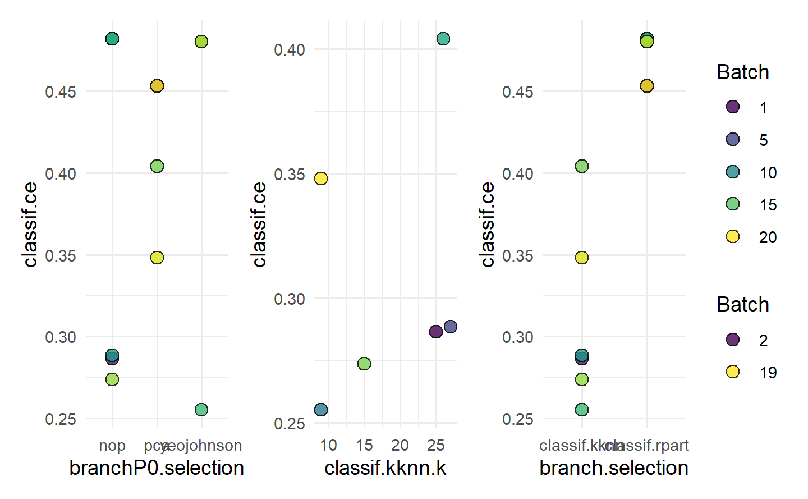
8.3.3 Hyperband with Subsampling
We previously saw how some learners have hyperparameters that can act naturally as fidelity parameters, such as the number of trees in a random forest. However, using pipelines, we can now create a fidelity parameter for any model using po("subsample"). The frac parameter of po("subsample") controls the amount of data fed into the subsequent Learner. In general, feeding less data to a Learner results in quicker model training but poorer quality predictions compared to when more training data is supplied. Resampling with less data will still give us some information about the relative performance of different model configurations, thus making the fraction of data to subsample the perfect candidate for a fidelity parameter.
我们之前看到，一些学习器具有可以自然充当保真度参数的超参数，例如随机森林中的树的数量。然而，使用管道，我们现在可以使用
po("subsample")为任何模型创建一个保真度参数。po("subsample")的frac参数控制了传递到后续学习器的数据量。通常情况下，向学习器提供更少的数据会导致模型训练更快，但与提供更多训练数据相比，预测质量较差。使用较少的数据重新采样仍然可以为我们提供有关不同模型配置相对性能的一些信息，因此将数据子采样的比例作为保真度参数是一个完美的选择。
learner = lrn("classif.svm", id = "svm", type = "C-classification",
kernel = "radial", cost = to_tune(1e-5, 1e5, logscale = TRUE),
gamma = to_tune(1e-5, 1e5, logscale = TRUE))
graph_learner = as_learner(
po("subsample", frac = to_tune(p_dbl(3^-3, 1, tags = "budget"))) %>>%
learner
)
graph_learner$encapsulate = c(train = "evaluate", predict = "evaluate")
graph_learner$timeout = c(train = 30, predict = 30)
graph_learner$fallback = lrn("classif.featureless")Now we can tune our SVM by tuning our GraphLearner as normal, below we set eta = 3 for Hyperband.
instance$result_x_domain
#> $subsample.frac
#> [1] 1
#>
#> $svm.cost
#> [1] 3397.206
#>
#> $svm.gamma
#> [1] 0.0031121398.3.4 Feature Selection with Filter Pipelines
task_pen = tsk("penguins")
# combine filter (keep top 3 features) with learner
po_flt = po("filter", filter = flt("information_gain"), filter.nfeat = 3)
graph = po_flt %>>% po("learner", lrn("classif.rpart"))
po("filter", filter = flt("information_gain"), filter.nfeat = 3)$
train(list(task_pen))[[1]]$feature_names
#> [1] "bill_depth" "bill_length" "flipper_length"Choosing 3 as the cutoff was fairly arbitrary but by tuning a graph we can optimize this cutoff:
选择
3作为截止值是相当任意的，但通过调整一个图表，我们可以优化这个截止值：
set.seed(1234)
# tune between 1 and total number of features
po_filter = po("filter", filter = flt("information_gain"),
filter.nfeat = to_tune(1, task_pen$ncol))
graph = as_learner(po_filter %>>% po("learner", lrn("classif.rpart")))
instance = tune(tnr("random_search"), task_pen, graph,
rsmp("cv", folds = 3), term_evals = 10)
instance$result
#> information_gain.filter.nfeat learner_param_vals x_domain classif.ce
#> 1: 6 <list[2]> <list[1]> 0.05532672
autoplot(instance)
In this example, 6 is the optimal number of features. It can be especially useful in feature selection to visualize the tuning results as there may be cases where the optimal result is only marginally better than a result with less features (which would lead to a model that is quicker to train and possibly easier to interpret).
Now we can see that four variables may be equally as good in this case so we could consider going forward by selecting four features and not six as suggested by instance$result.
在这个示例中，
6是最佳的特征数量。在特征选择中，将调整结果可视化呈现可能特别有用，因为有些情况下，最佳结果可能仅略优于具有较少特征的结果（这将导致模型训练更快，可能更容易解释）。现在我们可以看到，在这种情况下，四个变量可能同样有效，因此我们可以考虑选择四个特征，而不是像
instance$result建议的六个。
9 Preprocessing
In this book, preprocessing refers to everything that happens with data before it is used to fit a model, while postprocessing encompasses everything that occurs with predictions after the model is fitted.
Data cleaning is an important part of preprocessing that involves the removal of errors, noise, and redundancy in the data; we only consider data cleaning very briefly as it is usually performed outside of mlr3 on the raw dataset.
Another aspect of preprocessing is feature engineering, which covers all other transformations of data before it is fed to the machine learning model, including the creation of features from possibly unstructured data, such as written text, sequences or images. The goal of feature engineering is to enable the data to be handled by a given learner, and/or to further improve predictive performance. It is important to note that feature engineering helps mostly for simpler algorithms, while highly complex models usually gain less from it and require little data preparation to be trained. Common difficulties in data that can be solved with feature engineering include features with skewed distributions, high cardinality categorical features, missing observations, high dimensionality and imbalanced classes in classification tasks. Deep learning has shown promising results in automating feature engineering, however, its effectiveness depends on the complexity and nature of the data being processed, as well as the specific problem being addressed. Typically it can work well with natural language processing and computer vision problems, while for standard tabular data, tree-based ensembles such as a random forest or gradient boosting are often still superior (and easier to handle). However, tabular deep learning approaches are currently catching up quickly. Hence, manual feature engineering is still often required but with mlr3pipelines, which can simplify the process as much as possible.
在本书中，预处理指的是在数据用于拟合模型之前发生的一切，而后处理则包括在模型拟合后对预测进行的一切操作。
数据清理是预处理的重要部分，涉及到消除数据中的错误、噪音和冗余；我们只会简要地考虑数据清理，因为它通常是在原始数据集上进行的，而不是在
mlr3上执行。预处理的另一个方面是特征工程，它涵盖了在将数据提供给机器学习模型之前对数据进行的所有其他转换，包括从可能是非结构化数据（如书面文本、序列或图像）中创建特征。特征工程的目标是使数据能够被给定的学习器处理，和/或进一步提高预测性能。需要注意的是，特征工程主要有助于较简单的算法，而高度复杂的模型通常受益较少，并且需要较少的数据准备来进行训练。可以通过特征工程解决的数据常见问题包括具有倾斜分布的特征、高基数分类特征、缺失观测、高维度以及分类任务中的不平衡类。深度学习在自动化特征工程方面表现出有希望的结果，然而，其有效性取决于正在处理的数据的复杂性和性质，以及所解决的具体问题。通常情况下，它在自然语言处理和计算机视觉问题上表现良好，而对于标准表格数据，如随机森林或梯度提升等基于树的集成方法通常仍然更占优势（并且更易处理）。但是，表格型深度学习方法目前正在迅速赶超。因此，手动特征工程仍然经常需要，但使用
mlr3pipelines可以尽可能简化这个过程。
ames = mlr3data::ames_housing9.1 Data Cleaning
As a first step, we explore the data and look for simple problems such as constant or duplicated features. This can be done quite efficiently with a package like DataExplorer or skimr which can be used to create a large number of informative plots.
# 1. `Misc_Feature_2` is a factor with only a single level `Othr`.
summary(ames$Misc_Feature_2)
#> Othr
#> 2930
# 2. `Condition_2` and `Condition_3` are identical.
identical(ames$Condition_2, ames$Condition_3)
#> [1] TRUE
# 3. `Lot_Area` and `Lot_Area_m2` are same data on different scales
cor(ames$Lot_Area, ames$Lot_Area_m2)
#> [1] 1For all three problems, simply removing the problematic features (or feature in a pair) might be the best course of action.
to_remove = c("Lot_Area_m2", "Condition_3", "Misc_Feature_2")Other typical problems that should be checked are:
ID columns, i.e., columns that are unique for every observation should be removed or tagged.
NAs not correctly encoded, e.g. as"NA"or""Semantic errors in the data, e.g., negative
Lot_AreaNumeric features encoded as categorical for learners that can not handle such features.
tsk_ames = as_task_regr(ames, target = "Sale_Price", id = "ames")
# remove problematic features
tsk_ames$select(setdiff(tsk_ames$feature_names, to_remove))
msr_mae = msr("regr.mae")
rsmp_cv3 = rsmp("cv", folds = 3)
rsmp_cv3$instantiate(tsk_ames)Lastly, we run a very simple experiment to verify our setup works as expected with a simple featureless baseline, note below we set robust = TRUE to always predict the median sale price as opposed to the mean.
rr_baseline$aggregate(msr_mae)
#> regr.mae
#> 56167.489.2 Factor Encoding
lrn_xgb = lrn("regr.xgboost", nrounds = 100)
lrn_xgb$train(tsk_ames)
#> Error: <TaskRegr:ames> has the following unsupported feature types: factorCategorical features can be grouped by their cardinality, which refers to the number of levels they contain: binary features (two levels), low-cardinality features, and high-cardinality features; there is no universal threshold for when a feature should be considered high-cardinality and this threshold can even be tuned. For now, we will consider high-cardinality to be features with more than 10 levels:
分类特征可以按其基数进行分组，基数指的是它们包含的级别数量：二元特征（两个级别）、低基数特征和高基数特征；对于何时将特征视为高基数特征，没有通用的阈值，这个阈值甚至可以进行调整。目前，我们将认为高基数特征是具有超过10个级别的特征：
Low-cardinality features can be handled by one-hot encoding. One-hot encoding is a process of converting categorical features into a binary representation, where each possible category is represented as a separate binary feature. Theoretically, it is sufficient to create one less binary feature than levels, as setting all binary features to zero is also a valid representation. This is typically called dummy or treatment encoding and is required if the learner is a generalized linear model (GLM) or additive model (GAM).
Some learners support handling categorical features but may still crash for high-cardinality features if they internally apply encodings that are only suitable for low-cardinality features, such as one-hot encoding. Impact encoding (Micci-Barreca 2001) is a good approach for handling high-cardinality features. Impact encoding converts categorical features into numeric values. The idea behind impact encoding is to use the target feature to create a mapping between the categorical feature and a numerical value that reflects its importance in predicting the target feature. Impact encoding involves the following steps:
Group the target variable by the categorical feature.
Compute the mean of the target variable for each group.
Compute the global mean of the target variable.
Compute the impact score for each group as the difference between the mean of the target variable for the group and the global mean of the target variable.
Replace the categorical feature with the impact scores.
Impact encoding preserves the information of the categorical feature while also creating a numerical representation that reflects its importance in predicting the target. Compared to one-hot encoding, the main advantage is that only a single numeric feature is created regardless of the number of levels of the categorical features, hence it is especially useful for high-cardinality features. As information from the target is used to compute the impact scores, the encoding process must be embedded in cross-validation to avoid leakage between training and testing data.
As well as encoding features, other basic preprocessing steps for categorical features include removing constant features (which only have one level and may have been removed as part of data cleaning), and collapsing levels that occur very rarely. These types of problems can occur as artifacts of resampling as the dataset size is further reduced. Stratification on such features would be an alternative way to mitigate this.
In the code below we use po("removeconstants") to remove features with only one level, po("collapsefactors") to collapse levels that occur less than 1% of the time in the data, po("encodeimpact") to impact-encode high-cardinality features, po("encode", method = "one-hot") to one-hot encode low-cardinality features, and finally po("encode", method = "treatment") to treatment encode binary features.
低基数特征可以通过独热编码进行处理。独热编码是一种将分类特征转换为二进制表示的过程，其中每个可能的类别都被表示为一个单独的二进制特征。从理论上讲，只需创建比级别少一个二进制特征就足够了，因为将所有二进制特征都设置为零也是有效的表示。这通常被称为虚拟编码或处理编码，如果学习器是广义线性模型（GLM）或加性模型（GAM），则需要这样的编码。
有些学习器支持处理分类特征，但如果它们在内部应用的编码仅适用于低基数特征（例如独热编码），则对于高基数特征仍可能出现问题。影响编码（Micci-Barreca 2001）是处理高基数特征的良好方法。影响编码将分类特征转换为数值值。影响编码的背后思想是使用目标特征来创建分类特征与预测目标特征中的重要性之间的映射。影响编码包括以下步骤：
通过分类特征对目标变量进行分组。
计算每个组的目标变量的平均值。
计算目标变量的全局平均值。
计算每个组的影响分数，作为该组目标变量平均值与目标变量的全局平均值之间的差异。
用影响分数替换分类特征。
影响编码在保留分类特征信息的同时，还创建了一个反映其在预测目标中的重要性的数值表示。与独热编码相比，主要优点是无论分类特征的级别数如何多，都只创建一个数值特征，因此特别适用于高基数特征。由于使用了目标变量的信息来计算影响分数，编码过程必须嵌入交叉验证中，以避免训练数据和测试数据之间的信息泄漏。
除了编码特征，对于分类特征的其他基本预处理步骤包括删除常量特征（只有一个级别的特征，可能已被作为数据清理的一部分删除）和合并很少出现的级别。这些问题可能会出现在通过重采样减小数据集大小时。在这种情况下，对这些特征进行分层抽样可能是缓解的替代方法。
在下面的代码中，我们使用
po("removeconstants")来删除只有一个级别的特征，po("collapsefactors")来合并数据中出现不到1%的级别，po("encodeimpact")来对高基数特征进行影响编码，po("encode", method = "one-hot")来独热编码低基数特征，最后使用po("encode", method = "treatment")来处理二元特征。
factor_pipeline =
po("removeconstants") %>>%
po("collapsefactors", no_collapse_above_prevalence = 0.01) %>>%
po("encodeimpact",
affect_columns = selector_cardinality_greater_than(10),
id = "high_card_enc") %>>%
po("encode", method = "one-hot",
affect_columns = selector_cardinality_greater_than(2),
id = "low_card_enc") %>>%
po("encode", method = "treatment",
affect_columns = selector_type("factor"), id = "binary_enc")
glrn_xgb_impact = as_learner(factor_pipeline %>>% lrn_xgb)
glrn_xgb_impact$id = "XGB_enc_impact"
glrn_xgb_one_hot = as_learner(po("encode") %>>% lrn_xgb)
glrn_xgb_one_hot$id = "XGB_enc_onehot"
bmr = benchmark(
benchmark_grid(tsk_ames,
list(lrn_baseline, glrn_xgb_impact, glrn_xgb_one_hot),
rsmp_cv3)
)
bmr$aggregate(msr_mae)[, .(learner_id, regr.mae)]
#> learner_id regr.mae
#> 1: Baseline 56167.48
#> 2: XGB_enc_impact 16178.42
#> 3: XGB_enc_onehot 16607.339.3 Missing Values
The simplest data imputation method is to replace missing values by the feature’s mean (po("imputemean")), median (po("imputemedian")), or mode (po("imputemode")). Alternatively, one can impute by sampling from the empirical distribution of the feature, for example a histogram (po("imputehist")). Instead of guessing at what a missing feature might be, missing values could instead be replaced by a new level, for example, called .MISSING (po("imputeoor")). For numeric features, Ding and Simonoff (2010) show that for binary classification and tree-based models, encoding missing values out-of-range (OOR), e.g. a constant value above the largest observed value, is a reasonable approach.
最简单的数据插补方法是用特征的均值（
po("imputemean")），中位数（po("imputemedian")）或众数（po("imputemode")）来替代缺失值。另外，也可以通过从特征的经验分布中进行采样，例如使用直方图（po("imputehist")）。与猜测缺失特征可能是什么不同，缺失值可以被替换为一个新级别，例如称为.MISSING~（po("imputeoor")）。对于数值特征，Ding和Simonoff（2010）表明，对于二元分类和基于树的模型，编码超出范围（OOR）的缺失值，例如，一个大于观察到的最大值的常数值，是一个合理的方法。
It is often important for predictive tasks that you keep track of missing data as it is common for missing data to be informative in itself. To preserve the information about which data was missing, imputation should be tracked by adding binary indicator features (one for each imputed feature) that are 1 if the feature was missing for an observation and 0 if it was present (po("missind")). It is important to note that recording this information will not prevent problems in model interpretation on its own. As a real-world example, medical data are typically collected more extensively for White communities than for racially minoritized communities. Imputing data from minoritized communities would at best mask this data bias, and at worst would make the data bias even worse by making vastly inaccurate assumptions (see Chapter 14 for data bias and algorithmic fairness).
对于预测任务来说，跟踪缺失数据通常很重要，因为缺失数据本身常常包含有信息。为了保留有关哪些数据缺失的信息，插补应该通过添加二进制指示特征来进行跟踪（每个插补特征都有一个），如果观察中的特征缺失，则该特征为
1，如果存在则为0（po("missind")）。需要注意的是，仅记录这些信息本身不会防止模型解释方面的问题。以现实世界的例子来说，医疗数据通常对白人社区进行的收集要比对少数民族社区进行的收集要详尽。从少数民族社区插补数据最多会掩盖数据偏差，最坏的情况下会通过进行极其不准确的假设而使数据偏差变得更严重（请参见第14章关于数据偏差和算法公平性的内容）。
impute_hist = list(
po("missind", type = "integer",
affect_columns = selector_type("integer")),
po("imputehist", affect_columns = selector_type("integer"))
) %>>%
po("featureunion") %>>%
po("imputeoor", affect_columns = selector_type("factor"))
impute_hist$plot(horizontal = TRUE)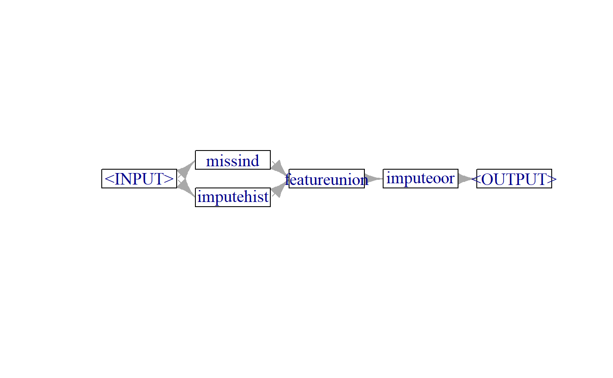
Using this pipeline we can now run experiments with lrn("regr.ranger"), which cannot handle missing data; we also compare a simpler pipeline that only uses OOR imputation to demonstrate performance differences resulting from different strategies.
glrn_rf_impute_hist = as_learner(impute_hist %>>% lrn("regr.ranger"))
glrn_rf_impute_hist$id = "RF_imp_Hist"
glrn_rf_impute_oor = as_learner(po("imputeoor") %>>% lrn("regr.ranger"))
glrn_rf_impute_oor$id = "RF_imp_OOR"
design = benchmark_grid(tsk_ames,
list(glrn_rf_impute_hist, glrn_rf_impute_oor),
rsmp_cv3)
bmr_new = benchmark(design)
bmr$combine(bmr_new)
bmr$aggregate(msr_mae)[, .(learner_id, regr.mae)]
#> learner_id regr.mae
#> 1: Baseline 56167.48
#> 2: XGB_enc_impact 16178.42
#> 3: XGB_enc_onehot 16607.33
#> 4: RF_imp_Hist 16119.77
#> 5: RF_imp_OOR 16180.46Similarly to encoding, we see limited differences in performance between the different imputation strategies. This is expected here and confirms the findings of Ding and Simonoff (2010) – out-of-range imputation is a simple yet effective imputation for tree-based methods.
Many more advanced imputation strategies exist, including model-based imputation where machine learning models are used to predict missing values, and multiple imputation where data is repeatedly resampled and imputed in each sample (e.g., by mean imputation) to attain more robust estimates. However, these more advanced techniques rarely improve the models predictive performance substantially and the simple imputation techniques introduced above are usually sufficient (Poulos and Valle 2018). Nevertheless, these methods are still important, as finding imputations that fit well to the distribution of the observed values allows a model to be fitted that can be interpreted and analyzed in a second step.
与编码类似，我们在不同的插补策略之间看到了有限的性能差异。这在这里是预期的，并证实了Ding和Simonoff（2010）的研究结果 - 超出范围插补是树模型方法的一种简单而有效的插补方法。
还存在许多更高级的插补策略，包括基于模型的插补，其中使用机器学习模型来预测缺失值，以及多重插补，其中数据被重复重采样并在每个样本中进行插补（例如，通过均值插补），以获得更稳健的估计。然而，这些更高级的技术很少会显着改善模型的预测性能，上面介绍的简单插补技术通常已经足够了（Poulos和Valle 2018）。尽管如此，这些方法仍然很重要，因为找到与观测值的分布很好匹配的插补允许拟合一个可以在第二步中进行解释和分析的模型。
9.4 Pipeline Robustify
mlr3pipelines offers a simple and reusable pipeline for (among other things) imputation and factor encoding called ppl("robustify"), which includes sensible defaults that can be used most of the time when encoding or imputing data. The pipeline includes the following PipeOps (some are applied multiple times and most use selectors):
po("removeconstants")– Constant features are removed.po("colapply")– Character and ordinal features are encoded as categorical, and date/time features are encoded as numeric.po("imputehist")– Numeric features are imputed by histogram sampling.po("imputesample")– Logical features are imputed by sampling from the empirical distribution – this only affects the$predict()-step.po("missind")– Missing data indicators are added for imputed numeric and logical variables.po("imputeoor")– Missing values of categorical features are encoded with a new level.po("fixfactors")– Fixes levels of categorical features such that the same levels are present during prediction and training (which may involve dropping empty factor levels).po("imputesample")– Missing values in categorical features introduced from dropping levels in the previous step are imputed by sampling from the empirical distributions.po("collapsefactors")– Categorical features levels are collapsed (starting from the rarest factors in the training data) until there are less than a certan number of levels, controlled by themax_cardinalityargument (with a conservative default of1000).po("encode")– Categorical features are one-hot encoded.po("removeconstants")– Constant features that might have been created in the previous steps are removed.
ppl("robustify") has optional arguments task and learner. If these are provided, then the resulting pipeline will be set up to handle the given task and learner specifically, for example, it will not impute missing values if the learner has the "missings" property, or if there are no missing values in the task to begin with. By default, when task and learner are not provided, the graph is set up to be defensive: it imputes all missing values and converts all feature types to numerics.
Linear regression is a simple model that cannot handle most problems that we may face when processing data, but with the ppl("robustify") we can now include it in our experiment:
mlr3pipelines提供了一个用于插补和因子编码（以及其他任务）的简单且可重复使用的管道，称为ppl("robustify")，其中包括了通常在对数据进行编码或插补时可使用的明智默认设置。该管道包括以下PipeOp（一些被多次应用，大多数使用选择器）：
po("removeconstants")- 删除常量特征。
po("colapply")- 字符和序数特征被编码为分类特征，日期/时间特征被编码为数值特征。
po("imputehist")- 通过直方图采样对数值特征进行插补。
po("imputesample")- 通过从经验分布中进行采样对逻辑特征进行插补 - 这仅影响$predict()步骤。
po("missind")- 为被插补的数值和逻辑变量添加缺失数据指示。
po("imputeoor")- 使用新级别编码分类特征的缺失值。
po("fixfactors")- 修复分类特征的级别，以便在预测和训练期间存在相同的级别（这可能涉及删除空的因子级别）。
po("imputesample")- 通过从经验分布中进行采样来插补在前一步中删除级别引入的分类特征的缺失值。
po("collapsefactors")- 折叠分类特征级别（从训练数据中最稀有的因子开始），直到级别少于由max_cardinality参数控制的某个数量（默认值为1000，具有保守性）。
po("encode")- 对分类特征进行独热编码。
po("removeconstants")- 删除可能在前一步中创建的常量特征。
ppl("robustify")具有可选参数task和learner。如果提供了这些参数，那么生成的管道将被设置为专门处理给定的任务和学习器，例如，如果学习器具有"missings"属性，或者任务一开始就没有缺失值，那么它将不会插补缺失值。默认情况下，当未提供task和learner时，图形被设置为具有防御性：它会对所有缺失值进行插补并将所有特征类型转换为数值型。线性回归是一个简单的模型，无法处理我们在处理数据时可能面临的大多数问题，但使用
ppl("robustify")，我们现在可以将它包括在我们的实验中。
glrn_lm_robust = as_learner(ppl("robustify") %>>% lrn("regr.lm"))
glrn_lm_robust$id = "lm_roubst"
bmr_new = benchmark(benchmark_grid(tsk_ames, glrn_lm_robust, rsmp_cv3))
#> Warning in predict.lm(object = self$model, newdata = newdata, se.fit = se_fit): prediction from rank-deficient fit; attr(*, "non-estim") has doubtful cases
#> This happened PipeOp regr.lm's $predict()
#> Warning in predict.lm(object = self$model, newdata = newdata, se.fit = se_fit): prediction from rank-deficient fit; attr(*, "non-estim") has doubtful cases
#> This happened PipeOp regr.lm's $predict()
#> Warning in predict.lm(object = self$model, newdata = newdata, se.fit = se_fit): prediction from rank-deficient fit; attr(*, "non-estim") has doubtful cases
#> This happened PipeOp regr.lm's $predict()
bmr$combine(bmr_new)
bmr$aggregate(msr_mae)[, .(learner_id, regr.mae)]
#> learner_id regr.mae
#> 1: Baseline 56167.48
#> 2: XGB_enc_impact 16178.42
#> 3: XGB_enc_onehot 16607.33
#> 4: RF_imp_Hist 16119.77
#> 5: RF_imp_OOR 16180.46
#> 6: lm_roubst 16276.569.5 Transforming Features and Targets
Simple transformations of features and the target can be beneficial (and sometimes essential) for certain learners. In particular, log transformation of the target can help in making the distribution more symmetrical and can help reduce the impact of outliers. Similarly, log transformation of skewed features can help to reduce the influence of outliers.
对于某些学习算法，对特征和目标进行简单的转换可能是有益的（有时甚至是必不可少的）。特别是，对目标进行对数转换有助于使分布更对称，可以帮助减小异常值的影响。同样，对偏斜特征进行对数转换可以帮助减少异常值的影响。
# copy ames data
log_ames = copy(ames)
# log transform target
log_ames[, logSalePrice := log(Sale_Price)]
autoplot(as_task_regr(log_ames, target = "Sale_Price")) +
autoplot(as_task_regr(log_ames, target = "logSalePrice"))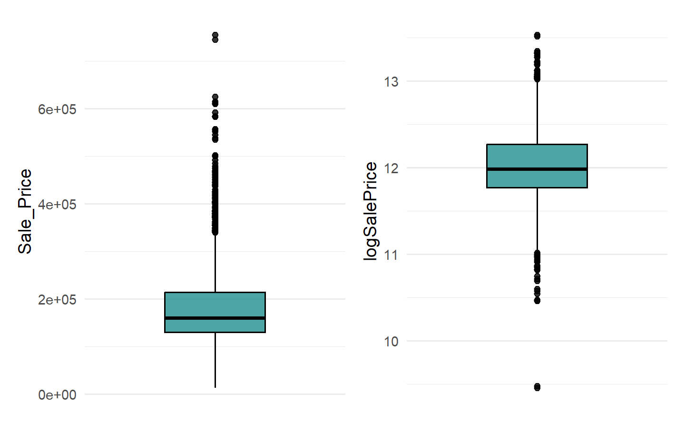
Normalization of features may also be necessary to ensure features with a larger scale do not have a higher impact, which is especially important for distance-based methods such as k-nearest neighbors models or regularized parametric models such as Lasso or Elastic net. Many models internally scale the data if required by the algorithm so most of the time we do not need to manually do this in preprocessing, though if this is required then po("scale") can be used to center and scale numeric features.
Any transformations applied to the target during training must be inverted during model prediction to ensure predictions are made on the correct scale.
对特征进行归一化可能也是必要的，以确保具有较大尺度的特征不会产生较大影响，这对于基于距离的方法（例如k最近邻模型）或正则化参数模型（例如Lasso或弹性网络）尤为重要。许多模型在算法需要时会自动对数据进行内部缩放，因此在预处理过程中通常不需要手动进行此操作，但如果需要的话，可以使用
po("scale")来对数值特征进行居中和缩放。在训练期间应用于目标的任何转换在模型预测期间必须被反转，以确保在正确的尺度上进行预测。
We could manually transform and invert the target, however, this is much more complex when dealing with resampling and benchmarking experiments and so the pipeline ppl("targettrafo") will do this heavy lifting for you. The pipeline includes a parameter targetmutate.trafo for the transformation to be applied during training to the target, as well as targetmutate.inverter for the transformation to be applied to invert the original transformation during prediction. So now let us consider the log transformation by adding this pipeline to our robust linear regression model:
]我们可以手动转换和反转目标变量，但是在处理重新采样和基准实验时，这会变得更加复杂。因此，管道
ppl("targettrafo")将为您完成这项繁重的工作。该管道包括一个名为targetmutate.trafo的参数，用于在训练期间对目标变量应用的转换，以及一个名为targetmutate.inverter的参数，用于在预测时反转原始转换。现在让我们考虑通过将这个管道添加到我们的鲁棒线性回归模型中来进行对数变换：
glrn_log_lm_robust = as_learner(
ppl("targettrafo",
graph = glrn_lm_robust,
targetmutate.trafo = \(x) log(x),
targetmutate.inverter = \(x) list(response = exp(x$response))
))
glrn_log_lm_robust$id = "lm_robust_logtrafo"
bmr_new = benchmark(benchmark_grid(tsk_ames, glrn_log_lm_robust, rsmp_cv3))
#> Warning in predict.lm(object = self$model, newdata = newdata, se.fit = se_fit): prediction from rank-deficient fit; attr(*, "non-estim") has doubtful cases
#> This happened PipeOp regr.lm's $predict()
#> This happened PipeOp lm_roubst's $predict()
#> Warning in predict.lm(object = self$model, newdata = newdata, se.fit = se_fit): prediction from rank-deficient fit; attr(*, "non-estim") has doubtful cases
#> This happened PipeOp regr.lm's $predict()
#> This happened PipeOp lm_roubst's $predict()
#> Warning in predict.lm(object = self$model, newdata = newdata, se.fit = se_fit): prediction from rank-deficient fit; attr(*, "non-estim") has doubtful cases
#> This happened PipeOp regr.lm's $predict()
#> This happened PipeOp lm_roubst's $predict()
bmr$combine(bmr_new)
bmr$aggregate(msr_mae)[, .(learner_id, regr.mae)]
#> learner_id regr.mae
#> 1: Baseline 56167.48
#> 2: XGB_enc_impact 16178.42
#> 3: XGB_enc_onehot 16607.33
#> 4: RF_imp_Hist 16119.77
#> 5: RF_imp_OOR 16180.46
#> 6: lm_roubst 16276.56
#> 7: lm_robust_logtrafo 16016.36With the target transformation and the ppl("robustify"), the simple linear regression now appears to be the best-performing model.
9.6 Functional Feature Extraction
As a final step of data preprocessing, we will look at feature extraction from functional features. In Chapter 6 we look at automated feature selection and how automated approaches with filters and wrappers can be used to reduce a dataset to an optimized set of features. Functional feature extraction differs from this process as we are now interested in features that are dependent on one another and together may provide useful information but not individually. Figure 9.4 visualizes the difference between regular and functional features.
作为数据预处理的最后一步，我们将看一下从功能性特征中提取特征。我们探讨了自动特征选择以及如何使用过滤器和包装器的自动方法来将数据集减少到一组优化的特征。功能性特征提取与此过程不同，因为我们现在关注的是彼此依赖的特征，它们共同可能提供有用的信息，但单独来看则不具备这种信息。
energy_data = mlr3data::energy_usage
ggplot(data.frame(y = as.numeric(energy_data[1, ])),
aes(y = y, x = 1:720)) +
geom_line() +
labs(x = "2-Minute Interval", y = "Power Consumption")
Adding these 720 features to our full dataset is a bad idea as each individual feature does not provide meaningful information, similarly, we cannot automate selection of the best feature subset for the same reason. Instead, we can extract information about the curves to gain insights into the kitchen’s overall energy usage. For example, we could extract the maximum used wattage, overall used wattage, number of peaks, and other similar features.
To extract features we will write our own PipeOp that inherits from PipeOpTaskPreprocSimple. To do this we add a private method called .transform_dt that hardcodes the operations in our task. In this example, we select the functional features (which all start with “att”), extract the mean, minimum, maximum, and variance of the power consumption, and then remove the functional features. To read more about building custom PipeOps, open the corresponding vignette by running vignette(“extending”, package = “mlr3pipelines”) in R.
将这720个特征添加到我们的完整数据集中是一个不好的主意，因为每个单独的特征并不提供有意义的信息，同样，由于同样的原因，我们也不能自动选择最佳的特征子集。相反，我们可以提取有关曲线的信息，以了解厨房整体能源使用情况。例如，我们可以提取最大功率使用量、总体功率使用量、峰值数量等类似的特征。
为了提取特征，我们将编写一个继承自
PipeOpTaskPreprocSimple的自定义PipeOp。为此，我们添加一个名为.transform_dt的私有方法，其中包含我们任务中硬编码的操作。在这个例子中，我们选择功能性特征（它们都以“att”开头），提取功耗的均值、最小值、最大值和方差，然后删除功能性特征。要了解更多关于构建自定义PipeOps的信息，请在R中运行vignette("extending", package = "mlr3pipelines")以打开相应的文档。
PipeOpFuncExtract = R6::R6Class(
"PipeOpFuncExtract",
inherit = mlr3pipelines::PipeOpTaskPreprocSimple,
private = list(
.transform_dt = function(dt, levels) {
ffeat_names = paste0("att", 1:720)
ffeats = dt[, ..ffeat_names]
dt[, energy_means := apply(ffeats, 1, mean)]
dt[, energy_mins := apply(ffeats, 1, min)]
dt[, energy_maxs := apply(ffeats, 1, max)]
dt[, energy_vars := apply(ffeats, 1, var)]
dt[, (ffeat_names) := NULL]
}
)
)
# test PipeOp
tsk_ames_ext = cbind(ames, energy_data)
tsk_ames_ext = as_task_regr(tsk_ames_ext, "Sale_Price", "ames_ext")
# remove the redundant variables identified at the start of this chapter
tsk_ames_ext$select(setdiff(tsk_ames_ext$feature_names, to_remove))
func_extractor = PipeOpFuncExtract$new("energy_extract")
tsk_ames_ext = func_extractor$train(list(tsk_ames_ext))[[1]]
tsk_ames_ext$data(1,
c("energy_means", "energy_mins", "energy_maxs", "energy_vars"))
#> energy_means energy_mins energy_maxs energy_vars
#> 1: 1.061558 0.01426834 21.97755 3.708473
learners = list(lrn_baseline, lrn("regr.rpart"), glrn_xgb_impact,
glrn_rf_impute_oor, glrn_lm_robust, glrn_log_lm_robust)
bmr_final = benchmark(benchmark_grid(c(tsk_ames_ext, tsk_ames), learners, rsmp_cv3))
#> Warning in predict.lm(object = self$model, newdata = newdata, se.fit = se_fit): prediction from rank-deficient fit; attr(*, "non-estim") has doubtful cases
#> This happened PipeOp regr.lm's $predict()
#> Warning in predict.lm(object = self$model, newdata = newdata, se.fit = se_fit): prediction from rank-deficient fit; attr(*, "non-estim") has doubtful cases
#> This happened PipeOp regr.lm's $predict()
#> Warning in predict.lm(object = self$model, newdata = newdata, se.fit = se_fit): prediction from rank-deficient fit; attr(*, "non-estim") has doubtful cases
#> This happened PipeOp regr.lm's $predict()
#> Warning in predict.lm(object = self$model, newdata = newdata, se.fit = se_fit): prediction from rank-deficient fit; attr(*, "non-estim") has doubtful cases
#> This happened PipeOp regr.lm's $predict()
#> This happened PipeOp lm_roubst's $predict()
#> Warning in predict.lm(object = self$model, newdata = newdata, se.fit = se_fit): prediction from rank-deficient fit; attr(*, "non-estim") has doubtful cases
#> This happened PipeOp regr.lm's $predict()
#> This happened PipeOp lm_roubst's $predict()
#> Warning in predict.lm(object = self$model, newdata = newdata, se.fit = se_fit): prediction from rank-deficient fit; attr(*, "non-estim") has doubtful cases
#> This happened PipeOp regr.lm's $predict()
#> This happened PipeOp lm_roubst's $predict()
#> Warning in predict.lm(object = self$model, newdata = newdata, se.fit = se_fit): prediction from rank-deficient fit; attr(*, "non-estim") has doubtful cases
#> This happened PipeOp regr.lm's $predict()
#> Warning in predict.lm(object = self$model, newdata = newdata, se.fit = se_fit): prediction from rank-deficient fit; attr(*, "non-estim") has doubtful cases
#> This happened PipeOp regr.lm's $predict()
#> Warning in predict.lm(object = self$model, newdata = newdata, se.fit = se_fit): prediction from rank-deficient fit; attr(*, "non-estim") has doubtful cases
#> This happened PipeOp regr.lm's $predict()
#> Warning in predict.lm(object = self$model, newdata = newdata, se.fit = se_fit): prediction from rank-deficient fit; attr(*, "non-estim") has doubtful cases
#> This happened PipeOp regr.lm's $predict()
#> This happened PipeOp lm_roubst's $predict()
#> Warning in predict.lm(object = self$model, newdata = newdata, se.fit = se_fit): prediction from rank-deficient fit; attr(*, "non-estim") has doubtful cases
#> This happened PipeOp regr.lm's $predict()
#> This happened PipeOp lm_roubst's $predict()
#> Warning in predict.lm(object = self$model, newdata = newdata, se.fit = se_fit): prediction from rank-deficient fit; attr(*, "non-estim") has doubtful cases
#> This happened PipeOp regr.lm's $predict()
#> This happened PipeOp lm_roubst's $predict()
perf = bmr_final$aggregate(msr_mae)
perf[order(learner_id, task_id), .(task_id, learner_id, regr.mae)]
#> task_id learner_id regr.mae
#> 1: ames Baseline 56167.48
#> 2: ames_ext Baseline 56167.48
#> 3: ames RF_imp_OOR 16204.70
#> 4: ames_ext RF_imp_OOR 14092.83
#> 5: ames XGB_enc_impact 16178.42
#> 6: ames_ext XGB_enc_impact 14354.96
#> 7: ames lm_robust_logtrafo 16000.80
#> 8: ames_ext lm_robust_logtrafo 14036.96
#> 9: ames lm_roubst 16255.28
#> 10: ames_ext lm_roubst 14856.21
#> 11: ames regr.rpart 28286.74
#> 12: ames_ext regr.rpart 26433.50The final results indicate that adding these extracted features improved the performance of all models (except the featureless baseline).
In this example, we could have just applied the transformations to the dataset directly and not used a PipeOp. However, the advantage of using the PipeOp is that we could have chained it to a subset of learners to prevent a blow-up of experiments in the benchmark experiment.
最终结果显示，添加这些提取的特征提高了所有模型的性能（除了没有特征的基线模型）。
在这个例子中，我们本可以直接将这些变换应用于数据集，而不使用
PipeOp。然而，使用PipeOp的优势在于我们可以将它链接到一部分学习器上，以防止在基准实验中引发大规模的实验。
Advanced Topics
10 Advanced Technical Aspects of mlr3
等待交叉引用：
- Section 10.1
- 10.1.3
- 10.2.1
- 11.3
- 13.1
- Chapter 14
Learn-Shitao5 - Applied Machine Learning Using mlr3 in R Learn-Shitao5 - Applied Machine Learning Using mlr3 in R Learn-Shitao5 - Applied Machine Learning Using mlr3 in R Learn-Shitao5